92 molécules37 à dessiner192 concepts27 questions du prof
Le plus gros chapitre du tome 1 et la source de la plupart des grandes questions : « il n'y aura pas un examen sans une question sur une pénicilline ou un β-lactame ». Le prof construit tout sur la cible : paroi (β-lactames, glycopeptides, fosfomycine), ribosome 30S ou 50S, ADN (quinolones), acide folique (sulfamidés, triméthoprime).
gras souligné = comprendrebleu = DCI + nom commercial + classebleu gras souligné = dessinerrouge = très important
92 molécules (37 à dessiner) · afficher :
Définitions, rappels de bactériologie et sulfamidés antibactériens (antifolates) syllabus p. 7-30
Concepts à comprendre (44)
Toxicité sélective
La difficulté de concevoir un antibactérien est que la molécule doit être fatale au pathogène sans être toxique pour les cellules hôtes. Les cibles exploitées sont intéressantes parce qu'elles sont absentes chez l'homme ou suffisamment différentes structurellement et fonctionnellement.
Pourquoi le triméthoprime peut-il inhiber la dihydrofolate réductase sans bloquer celle du patient ?
Parce que la DHFR humaine est différente de la DHFR bactérienne : sa sélectivité bactérie/homme est d'environ 40 000. C'est un exemple de toxicité sélective.
Antibiotique vs antibactérien de synthèse
Au sens strict, un antibiotique (anti = contre, bios = la vie) est une substance produite naturellement par des champignons ou des bactéries pour se combattre mutuellement ; le terme est réservé à l'action sur les bactéries (on parle d'antifongique pour les champignons, d'antiviral pour les virus). Les antibactériens de synthèse sont conçus sur base de modèles naturels ou non. On trouve des produits naturels, hémisynthétiques et de synthèse totale.
Pourquoi les sulfamidés sont-ils plutôt des « antibactériens de synthèse » que des antibiotiques au sens strict ?
Parce qu'ils ne sont pas produits naturellement par un micro-organisme : ils dérivent de colorants azoïques de synthèse (PRONTOSIL®).
Bactéricide vs bactériostatique
Un bactéricide tue les bactéries jusqu'à la dernière (d'où l'intérêt d'un traitement de durée adéquate). Un bactériostatique les empêche de se diviser, ce qui peut suffire chez le patient immunocompétent. La distinction repose sur des analyses in vitro, difficilement transposables en clinique, et la supériorité des bactéricides dans les infections graves n'est pas étayée par des données cliniques.
Pourquoi un bactériostatique peut-il suffire à guérir une infection ?
Parce qu'en bloquant la multiplication, il laisse au système immunitaire d'un patient immunocompétent le temps d'éliminer les bactéries.
Antiseptique
Substance qui tue ou prévient la croissance de bactéries, de champignons et de virus sur les surfaces externes du corps (peau, intestin), de manière non ciblée (parfois même la cellule). Selon qu'il tue ou inhibe, on parle de bactéricide/fongicide/virucide ou de bactériostatique/fongistatique.
Pourquoi un antiseptique ne peut-il pas être utilisé comme un antibiotique à usage interne ?
Parce qu'il agit de façon non ciblée sur tout germe, voire sur les cellules : il n'a pas la toxicité sélective d'un antibiotique, qui agit uniquement sur les bactéries, à l'extérieur comme à l'intérieur du corps.
Désinfectant
Agit sur des objets inanimés et des surfaces inertes : matériel médical, sols, murs, conduites d'eau, sièges, poignées de porte, brancards, intérieurs d'ambulance… Résultat : réduction importante de la charge microbienne, sans garantie d'élimination totale.
Pourquoi distingue-t-on désinfectant et antiseptique alors que les deux tuent des germes ?
Par leur support : l'antiseptique s'applique sur des tissus vivants (surfaces externes du corps), le désinfectant sur des surfaces inertes.
Stérilisation
Élimine tout germe microbien d'une préparation (absence de tout germe viable), principalement par des méthodes physiques (traitement thermique) et dans une moindre mesure chimiques (oxyde d'éthylène). Utilisée dans le domaine bio-industriel pour les médicaments et dispositifs médicaux.
Pourquoi la stérilisation est-elle plus exigeante que la désinfection ?
Parce qu'elle vise l'élimination de tout germe viable ou revivifiable, alors que la désinfection ne garantit qu'une réduction importante de la charge microbienne.
Sélectivité de la cible
La sélectivité d'action des antibactériens dépend de la sélectivité de leur cible : d'où l'importance de connaître la structure des bactéries (procaryotes) et ce qui les distingue des cellules humaines.
Pourquoi étudier la structure bactérienne dans un cours de chimie pharmaceutique ?
Parce que les antibactériens visent des structures propres aux bactéries (paroi, ribosomes, voie des folates…) : connaître ces différences explique leur sélectivité.
Bactérie : organisme unicellulaire procaryote
Les bactéries sont des organismes unicellulaires à structure procaryote : pas de noyau ni d'organites, un chromosome unique de forme arrondie (circulaire) et parfois de petites molécules d'ADN circulaires appelées plasmides.
Pourquoi l'absence de noyau est-elle une caractéristique majeure des bactéries ?
C'est la définition de la structure procaryote : l'ADN (chromosome circulaire) est libre dans le cytoplasme, ce qui distingue fondamentalement la bactérie de la cellule humaine eucaryote.
Structure schématique d'une bactérie
Éléments constants : paroi (forme et protection, absente chez les mycoplasmes), membrane plasmique, cytoplasme, appareil nucléaire (ADN circulaire), ribosomes (synthèse des protéines). Éléments facultatifs : plasmides, capsule (virulence), flagelles (mobilité), pili (pilus commun, pilus sexuel).
Pourquoi un antibiotique qui agit sur la paroi est-il inefficace sur les mycoplasmes ?
Parce que les mycoplasmes sont les seules bactéries dépourvues de paroi : la cible n'existe pas.
Paroi riche en peptidoglycane
La plupart des bactéries (sauf les mycoplasmes) sont entourées d'une paroi solide riche en peptidoglycane, qui leur donne leur forme. Le peptidoglycane est un polymère où la N-acétylglucosamine (NAG) et l'acide N-acétylmuramique (NAM = NAG + acide lactique sur le C3) sont liés en β(1→4) ; des peptides relient les NAM via leur acide lactique.
Pourquoi le peptidoglycane est-il une excellente cible antibactérienne ?
Parce qu'il est présent chez presque toutes les bactéries et absent des cellules humaines : l'atteindre respecte la toxicité sélective.
Classement selon le mode de vie (oxygène)
Aérobies strictes : vivent uniquement en présence d'O2. Aérobies facultatives : en présence ou en absence d'O2. Anaérobies : uniquement en absence d'O2.
Pourquoi une bactérie aérobie facultative est-elle plus adaptable qu'une aérobie stricte ?
Parce qu'elle peut vivre avec ou sans oxygène, alors que l'aérobie stricte a besoin d'O2.
Pourquoi les mycoplasmes sont-ils mis à part dans la classification par la forme ?
Parce qu'ils n'ont pas de paroi cellulaire, or c'est la paroi qui confère sa forme à la bactérie.
Coloration de Gram (structure de la paroi)
Méthode la plus utilisée en bactériologie médicale (Hans Christian Gram), qui donne une information rapide. Étapes : coloration au violet de gentiane (cristal violet) ; mordançage au lugol ; décoloration rapide à l'alcool (+ acétone) = temps de différenciation ; recoloration à la safranine ou à la fuchsine. Gram+ = violet, Gram− = rouge/orange.
Pourquoi l'étape de décoloration à l'alcool est-elle l'étape clé ?
C'est elle qui différencie : la paroi épaisse des Gram+ s'oppose au passage de l'alcool (elles restent violettes), alors que la paroi fine et riche en lipides des Gram− laisse pénétrer l'éthanol, qui les décolore.
Bactéries à Gram positif
Conservent la coloration violette car leur paroi, épaisse, s'oppose au passage de l'alcool. Elles possèdent une couche épaisse de peptidoglycane située au-dessus de leur membrane. Exemples (classification CBIP) : Staphylococcus aureus, streptocoques, pneumocoque, entérocoques (cocci) ; Listeria, Clostridium (bacilles).
Pourquoi les Gram+ restent-elles violettes après le passage de l'alcool ?
Parce que leur couche épaisse de peptidoglycane empêche l'alcool de pénétrer et d'extraire le violet de gentiane.
Bactéries à Gram négatif et LPS
Se décolorent à l'alcool : leur paroi est plus fine et plus riche en lipides (phospholipides, LPS = lipopolysaccharides), ce qui laisse l'éthanol (lipophile) pénétrer. Elles ont une mince couche de peptidoglycane entourée d'une membrane interne et d'une membrane externe rendue perméable par des porines. Exemples : Neisseria (cocci), E. coli, Klebsiella, Pseudomonas aeruginosa, H. influenzae (bacilles).
Pourquoi les Gram− apparaissent-elles rouges à la fin de la coloration ?
Parce qu'elles ont perdu le violet lors de la décoloration (paroi fine et riche en lipides) et ont fixé le colorant de recoloration, la fuchsine ou la safranine.
Principales cibles exploitées en thérapeutique
Cinq grandes cibles : synthèse de la paroi bactérienne (β-lactamines, glycopeptides), membrane cellulaire (polymyxines, daptomycine), synthèse des acides nucléiques (fluoroquinolones, rifamycines), ribosomes/synthèse protéique (50S : macrolides, lincosamides, phénicolés… ; 30S : aminosides, tétracyclines) et métabolisme de l'acide folique (sulfamidés, triméthoprime). Cette carte sert de fil conducteur pour relier structure, cible et activité.
Pourquoi les sulfamidés et le triméthoprime sont-ils placés dans la même case de la carte des cibles ?
Parce que tous deux agissent sur le métabolisme de l'acide folique : les sulfamidés sur la synthèse (dihydroptéroate synthétase), le triméthoprime sur la réduction (dihydrofolate réductase).
Historique : PRONTOSIL®, une pro-drug
En 1935, Domagk (prix Nobel 1939) observe que des souris infectées par des streptocoques survivent grâce au sulfamidophényldiamino-diazobenzène (PRONTOSIL®, RUBIAZOL®), un colorant azoïque. Actif in vivo mais pas in vitro, il est métabolisé en 4-aminobenzènesulfonamide (seul actif) et en dérivé triaminobenzénique : le PRONTOSIL® est une pro-drug du sulfanilamide.
Pourquoi le PRONTOSIL® était-il actif chez la souris mais pas en éprouvette ?
Parce qu'il doit être métabolisé (rupture du pont azo) pour libérer le sulfanilamide, la forme active : c'est une pro-drug.
RSA des sulfamidés : le noyau aromatique
Les substituants SO2NH2 et NH2 doivent impérativement être en para. L'ajout d'un substituant supplémentaire et/ou le remplacement du benzène par un hétérocycle supprime ou réduit drastiquement l'activité.
Pourquoi la position para est-elle indispensable ?
Parce que le sulfamidé doit mimer le PABA, dont le NH2 et le COOH sont en para : seule cette géométrie permet la compétition avec le PABA au niveau de la dihydroptéroate synthétase.
RSA des sulfamidés : le groupement NH2
Le NH2 doit rester primaire. Un NH2 porteur d'un groupement labile éliminé lors de la métabolisation reste envisageable (-N=N-, -NH-CO-R). Quand le NH2 est substitué, le caractère basique est perdu (cas des sulfamidés à usage intestinal).
Pourquoi la sulfasalazine, dont le NH2 est engagé dans un pont azo, reste-t-elle un sulfamidé utile ?
Parce que le pont azo (-N=N-) est un groupement labile coupé dans l'intestin : la sulfapyridine libérée retrouve un NH2 primaire.
RSA des sulfamidés : le groupement sulfonamide
La monosubstitution du sulfamoyle par un hétérocycle aromatique (5-6 chaînons, 1-3 hétéroatomes) augmente généralement l'activité ; un OCH3 sur cet hétérocycle allonge considérablement le T1/2 (jusqu'à une semaine pour la sulfaméthoxydiazine). La disubstitution de l'azote du sulfamoyle inactive généralement la molécule.
Pourquoi le sulfaméthoxazole est-il plus intéressant que le sulfanilamide ?
Parce que son sulfonamide est monosubstitué par un hétérocycle aromatique (méthylisoxazole), ce qui augmente l'activité, alors que le sulfanilamide a une activité faible et une demi-vie très brève.
Effet hypoglycémiant des sulfamides
Découvert à Montpellier vers 1942 par Janbon : en traitant la fièvre typhoïde par un sulfamidé (2254 RP, glyprothiazole), il observe des hypoglycémies graves (convulsions, comas, améliorés par le glucose). Confirmé chez le chien, cet effet est à l'origine des sulfamidés hypoglycémiants (Tome III).
Pourquoi un patient allergique à un sulfamidé hypoglycémiant doit-il éviter le co-trimoxazole ?
Parce que les sulfamidés antibactériens et hypoglycémiants partagent la structure sulfamidée : le cours mentionne une allergie croisée.
Acide folique = vitamine essentielle (B9)
L'acide folique est constitué d'un cycle ptéridine, d'acide para-aminobenzoïque et de glutamate. Les mammifères synthétisent le cycle ptéridine mais ne savent pas y greffer les deux autres éléments : l'homme doit le trouver dans l'alimentation (feuilles, épinards). Bactéries et plantes le synthétisent.
Pourquoi un sulfamidé n'empêche-t-il pas l'homme d'obtenir son acide folique ?
Parce que l'homme ne synthétise pas l'acide folique à partir du PABA : il le reçoit tout fait par l'alimentation. Bloquer la dihydroptéroate synthétase ne le concerne donc pas.
Les micro-organismes doivent synthétiser leurs folates
Les micro-organismes ne peuvent pas résorber l'acide folique : ils doivent le synthétiser à partir de ses fragments (ptéridine + acide p-aminobenzoïque + acide glutamique).
Pourquoi cette différence homme/bactérie est-elle la clé de la toxicité sélective des sulfamidés ?
Parce que la bactérie dépend de la synthèse de novo (qui utilise le PABA) alors que l'homme absorbe le folate tout fait : bloquer la synthèse ne touche que la bactérie.
Réduction de l'acide folique : DHF puis THF par la dihydrofolate réductase
L'acide folique subit deux réductions (NADPH) : en acide dihydrofolique puis en acide tétrahydrofolique (THF), la forme active. La seconde réduction est réalisée par la dihydrofolate réductase (DHFR), cible du triméthoprime (et du méthotrexate).
Pourquoi inhiber la DHFR prive-t-il la cellule de folates actifs même si elle possède de l'acide folique ?
Parce que seul le THF est actif : sans la DHFR, l'acide dihydrofolique ne peut pas être réduit en THF.
THF et synthèse des bases pyrimidiniques (dTMP)
Le THF transfère des groupes monocarbonés. Ses dérivés participent à la conversion dUMP → dTMP, catalysée par la thymidylate synthase, qui fournit la thymidine nécessaire à la synthèse de l'ADN ; réaction particulièrement importante dans les cellules en division rapide (hématopoïèse).
Pourquoi les cellules sanguines sont-elles les premières touchées par un déficit en folates ?
Parce que l'hématopoïèse implique une division cellulaire rapide, très dépendante de la thymidylate synthase et donc du THF pour fabriquer l'ADN.
THF, bases puriques et acides aminés
Deux des dix étapes de la transformation du 5-PRP en IMP (précurseur de l'AMP, ADP, ATP, GMP, GDP, GTP) nécessitent le tétrahydrofolate. Le THF intervient aussi dans la synthèse de méthionine, histidine et sérine, et le CH3-THF (ou plutôt la S-adénosylméthionine) donne le méthyle des méthylations d'amines biologiques.
Pourquoi un antifolate freine-t-il à la fois l'ADN et l'ARN ?
Parce que le THF est nécessaire aux bases puriques (communes à l'ADN et à l'ARN) et à la thymidine (ADN).
Déficit en folates : anémie macrocytaire
Un déficit en folates entraîne surtout une anémie à hématies de taille augmentée (anémie macrocytaire, mégaloblastique) par perturbation de la synthèse de l'ADN, ainsi que des troubles neurologiques peu spécifiques et digestifs. Causes : troubles de la résorption, 2e-3e trimestres de grossesse, traitement chronique (phénytoïne, phénobarbital). Chez la femme enceinte : risque accru d'avortement ou de malformations (tube neural).
Pourquoi les hématies sont-elles plus grosses en cas de déficit en folates ?
Parce que la synthèse de l'ADN est perturbée : la division des précurseurs est ralentie alors qu'ils continuent à grandir (anémie mégaloblastique).
Indications de l'acide folique (FOLAVIT®)
États de carence (anémie macrocytaire) ; prévention des anomalies congénitales du tube neural (spina bifida) – indispensable si la femme enceinte prend des antiépileptiques, éventuellement systématique à ~0,5 mg/jour ; méthotrexate à faibles doses (polyarthrite rhumatoïde, psoriasis grave) pour diminuer certains effets indésirables ; traitement chronique par phénytoïne ou phénobarbital.
Pourquoi donne-t-on de l'acide folique à un patient sous méthotrexate faible dose ?
Parce que le méthotrexate inhibe la dihydrofolate réductase : l'apport de folates diminue le risque de certains de ses effets indésirables.
Le métabolisme des folates comme cible pharmacologique
L'importance des folates pour la multiplication cellulaire explique leur intérêt comme cible. Chez les bactéries, l'inhibition de la synthèse des folates (sulfamidés) ou de leur réduction (triméthoprime) limite la disponibilité du THF nécessaire à leur croissance et à leur multiplication.
Pourquoi les antifolates ralentissent-ils la multiplication bactérienne plutôt que de tuer directement ?
Parce qu'ils privent la bactérie du THF nécessaire à la synthèse de l'ADN : elle ne peut plus se diviser, d'où un effet bactériostatique.
Inhibiteurs de la synthèse d'acide folique = analogues du PABA
Les sulfamidés antibactériens, les sulfones (dapsone) et l'acide para-aminosalicylique sont des analogues structuraux de l'acide para-aminobenzoïque (APAB, PABA). Ces faux substrats entrent en compétition avec lui lors de la synthèse de l'acide folique, qu'ils perturbent.
Pourquoi une production accrue de PABA par un germe le rend-elle résistant aux sulfamidés ?
Parce que l'inhibition est compétitive : davantage de PABA déplace le sulfamidé de l'enzyme.
Dihydroptéroate synthétase
Enzyme microbienne responsable de l'incorporation de l'acide para-aminobenzoïque pour former l'acide folique nécessaire à la croissance de certaines bactéries. C'est la cible des sulfamidés.
Pourquoi cette enzyme est-elle une cible sélective ?
Parce que l'homme n'incorpore pas le PABA (il reçoit l'acide folique par l'alimentation) : l'enzyme n'est utile qu'aux micro-organismes.
Les sulfamidés sont bactériostatiques
En inhibant la synthèse de l'acide folique, les sulfamidés empêchent la croissance et la multiplication des micro-organismes : ils sont bactériostatiques mais non bactéricides.
Pourquoi les sulfamidés sont-ils bactériostatiques et non bactéricides ?
Parce qu'ils bloquent une voie nécessaire à la multiplication (synthèse des bases de l'ADN) sans détruire une structure vitale de la bactérie.
Plasmodium et antifolates
Le plasmodium (protozoaire parasite) synthétise lui aussi l'acide folique ; inhiber cette synthèse inhibe sa réplication. Les inhibiteurs de la synthèse d'acide folique ont donc des propriétés antibiotiques et antipaludiques.
Pourquoi un même mécanisme est-il à la fois antibactérien et antipaludique ?
Parce que bactéries et plasmodium dépendent tous deux de la synthèse de novo de l'acide folique, contrairement à l'homme.
DHFR bactérienne et sélectivité du triméthoprime
Le triméthoprime inhibe de manière préférentielle la dihydrofolate réductase bactérienne, avec une sélectivité bactérie/homme d'environ 40 000 (les deux enzymes sont différentes). Il est parfois utilisé dans les infections urinaires (entérobactéries).
Pourquoi l'homme possède-t-il une DHFR alors qu'il ne synthétise pas l'acide folique ?
Parce qu'il doit tout de même réduire l'acide folique alimentaire en THF actif. C'est pour cela que la sélectivité du triméthoprime pour l'enzyme bactérienne est indispensable.
Association triméthoprime + sulfamidé : action à deux niveaux
Le triméthoprime empêche la réduction de l'acide dihydrofolique et le sulfamidé prévient la synthèse de l'acide folique : deux étapes successives de la même voie sont bloquées. C'est le principe du co-trimoxazole (BACTRIM®, EUSAPRIM®), dont le spectre est plus large que celui du sulfamidé seul.
Pourquoi associer deux inhibiteurs d'une même voie métabolique ?
Parce qu'en bloquant deux étapes successives (synthèse puis réduction), la production de THF est bien plus fortement limitée, avec un spectre plus large que le sulfamidé seul.
Co-trimoxazole : de rares indications
Morsures (chat, chien, humain) chez l'enfant allergique à la pénicilline ; infections urinaires compliquées (pyélonéphrite aiguë, prostatite) si CI aux quinolones ; coqueluche si CI à l'azithromycine (diminue la transmission, pas la durée) ; VIH : prophylaxie et traitement de la toxoplasmose et de la pneumonie à Pneumocystis jirovecii ; abcès cutanés non compliqués à MRSA, selon culture et antibiogramme.
Pourquoi traite-t-on une coqueluche chez l'adulte alors que l'antibiotique n'en raccourcit pas la durée ?
Pour diminuer la transmission de l'infection (limiter la propagation).
Acide folinique et « rescue » du méthotrexate
L'acide folinique et son isomère actif, l'acide lévofolinique, contrecarrent les effets toxiques du méthotrexate à doses élevées (rescue). Ils ne sont administrés que quelques heures après le méthotrexate pour ne pas neutraliser son effet antitumoral.
Pourquoi attend-on quelques heures avant de donner l'acide folinique ?
Pour ne pas neutraliser les effets antitumoraux du méthotrexate, tout en limitant ensuite sa toxicité.
Sulfamidés amphotères
Poudres blanches peu solubles dans l'eau, l'alcool et les solvants organiques, assez solubles dans l'acétone. Ils sont amphotères : caractère acide (-SO2NH-R, influencé par R) et basique (-NH2, perdu si le NH2 est substitué). Solubles dans les acides et bases diluées ; sels d'acides minéraux = acides ; sels Na+ = alcalins.
Pourquoi un sulfamidé peut-il former à la fois un sel avec un acide et un sel sodique ?
Parce qu'il possède une fonction basique (NH2 aromatique) et une fonction acide (NH du sulfonamide) : il est amphotère.
Classification des sulfamidés selon leur usage
Classés selon leurs caractéristiques pharmacocinétiques, leur application et leur durée d'action : sulfamidés systémiques, urinaires (rapidement résorbés, excrétés par le rein sous forme active : sulfaméthoxazole/triméthoprime), intestinaux (très peu résorbés, éliminés par l'intestin : sulfasalazine) et à usage externe (sulfadiazine argentique).
Pourquoi un sulfamidé intestinal doit-il être très peu résorbé ?
Parce qu'il doit rester dans la lumière intestinale, où il est éliminé et où son action se manifeste.
Résistance à l'effet des sulfamidés
De nombreux sulfamidés systémiques ont été retirés du commerce à cause de l'apparition de résistances, dues à divers mécanismes dont une production accrue d'acide para-aminobenzoïque par certains germes. Le sulfaméthoxazole n'est plus utilisé qu'en association avec le triméthoprime.
Pourquoi l'excès de PABA est-il un mécanisme de résistance logique ?
Parce que le sulfamidé est un inhibiteur compétitif du PABA : plus il y a de PABA, moins le sulfamidé occupe l'enzyme.
Sulfasalazine : vecteur (pro-drug) de la mésalazine
La sulfasalazine est hydrolysée dans l'intestin en sulfapyridine (sulfamidé antibactérien) et en mésalazine (5-ASA, anti-inflammatoire). C'est la mésalazine qui est efficace dans la colite ulcéreuse ; la sulfasalazine en empêche la résorption dans la partie haute de l'intestin. On tend aujourd'hui à utiliser la mésalazine seule (formes gastro-résistantes, lavements, suppositoires).
Pourquoi peut-on remplacer la sulfasalazine par de la mésalazine seule ?
Parce que la partie active est la mésalazine : il suffit de la protéger par une forme galénique (gastro-résistante ou rectale) pour qu'elle ne soit pas résorbée avant d'atteindre sa cible.
Argyrisme
Affection provoquée par une exposition excessive à l'argent (métal ou composés). Symptôme le plus frappant : coloration gris-ardoise de la peau. L'usage prolongé de sulfadiazine argentique peut conduire à un argyrisme local.
Pourquoi le risque d'argyrisme augmente-t-il avec la durée et la surface traitée ?
Parce que, si la sulfadiazine argentique telle quelle n'est pas résorbée, ses composants (sulfadiazine et ion argent) peuvent l'être, surtout lors d'un traitement long ou sur une grande surface.
Effets indésirables du co-trimoxazole
Perturbation de la flore commensale (diarrhées, levures, champignons) ; allergies (rash, troubles hématologiques, maladie sérique, allergie croisée avec les sulfamidés hypoglycémiants) ; troubles hépatiques et rénaux rares ; DRESS, Stevens-Johnson, Lyell (rares, très graves) ; SDRA (très rare, très grave) ; hémolyse si déficit en G6PD ; troubles hématologiques et hyperkaliémie dus au triméthoprime.
Pourquoi le triméthoprime peut-il causer des troubles hématologiques malgré sa sélectivité ?
Parce qu'il interfère malgré tout avec le métabolisme de l'acide folique, indispensable aux cellules sanguines en division rapide.
Co-trimoxazole et grossesse
Au premier trimestre, il existe des indices d'un effet tératogène du triméthoprime (interférence avec le métabolisme de l'acide folique) : le co-trimoxazole y est déconseillé. S'il ne peut être évité, une supplémentation en acide folique est recommandée. Les données aux 2e et 3e trimestres sont rassurantes.
Pourquoi le premier trimestre est-il la période à risque ?
Parce que c'est la période de formation des organes (dont le tube neural, sensible au déficit en folates) et que le triméthoprime interfère avec le métabolisme de l'acide folique.
Sulfamidés antibactériens
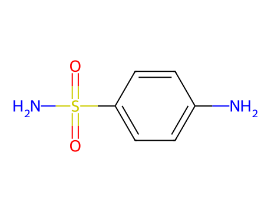
Sulfanilamideà dessiner
pas de nom commercial au cours
Sulfamidés antibactériens — Chef de file des sulfamidés (molécule historique)
Noyau : Benzène portant un NH2 (aniline) et un groupement sulfonamide SO2NH2 en position para
Mécanisme : Analogue structural de l'acide para-aminobenzoïque (PABA) : entre en compétition avec lui et inhibe la dihydroptéroate synthétase, enzyme bactérienne qui incorpore le PABA pour former l'acide folique. Effet bactériostatique (empêche la croissance et la multiplication, ne tue pas).
Structure-activité
Métabolite actif du PRONTOSIL® (colorant azoïque inactif in vitro = pro-drug). C'est le pharmacophore minimal de tous les sulfamidés : SO2NH2 et NH2 impérativement en para, NH2 primaire, benzène non substitué. Analogue structural du PABA (le COOH du PABA est remplacé par SO2NH2).
Sulfanilamide = PABA « déguisé » : on remplace le COOH par SO2NH2, la bactérie se fait piéger.
Précurseur bactérien de l'acide folique
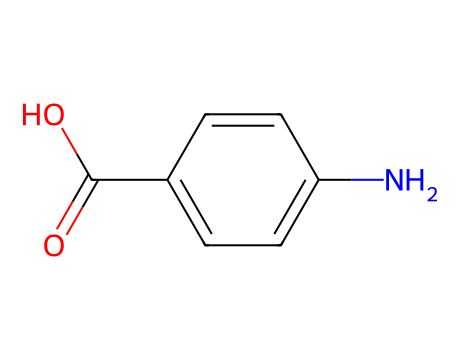
Acide para-aminobenzoïqueà reconnaître
pas de nom commercial au cours
Précurseur bactérien de l'acide folique — Substrat de la dihydroptéroate synthétase
Noyau : Benzène portant un NH2 et un COOH en para
Mécanisme : Substrat naturel : incorporé par la dihydroptéroate synthétase des micro-organismes pour former l'acide folique. Les sulfamidés entrent en compétition avec lui.
Structure-activité
C'est l'un des trois éléments de l'acide folique (ptéridine + PABA + glutamate). Les sulfamidés, les sulfones (dapsone) et l'acide para-aminosalicylique en sont des analogues structuraux (faux substrats).
PABA = le « vrai » substrat ; sulfamidé = le faux substrat qui lui ressemble.
Folates (vitamine B9)
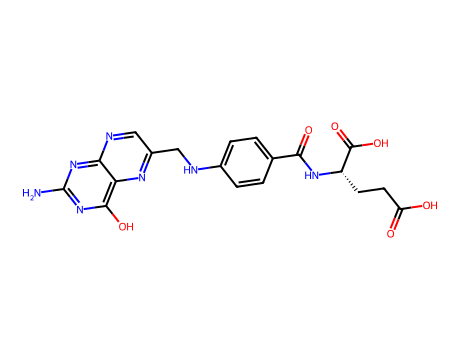
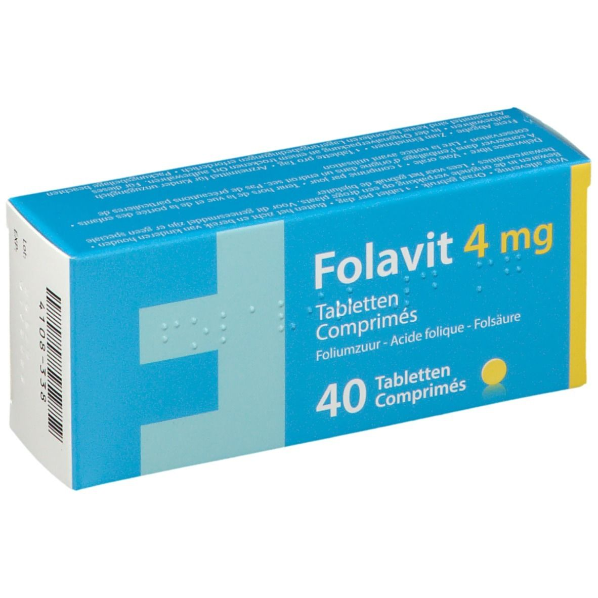
FOLAVIT®
Acide foliqueà dessiner
FOLAVIT®
Folates (vitamine B9) — Vitamine hydrosoluble
Noyau : Trois éléments : un cycle ptéridine (2-amino-4-hydroxy), l'acide para-aminobenzoïque (relié par un CH2-NH) et le glutamate (L, lié par une liaison amide)
Mécanisme : Subit deux réductions : acide folique → acide dihydrofolique → acide tétrahydrofolique (THF, forme active ; seconde réduction par la dihydrofolate réductase). Le THF est un donneur de groupements monocarbonés : coenzyme de la synthèse des purines et des pyrimidines (ADN, ARN) et de certains acides aminés (méthionine, histidine, sérine).
Indications : Traitement des états de carence se manifestant le plus souvent par une anémie macrocytaire, Prévention des anomalies congénitales du tube neural (spina bifida) chez la femme enceinte, Utilisation de méthotrexate à faibles doses (polyarthrite rhumatoïde, psoriasis grave) pour diminuer le risque de certains effets indésirables, Traitement chronique par antiépileptiques (phénytoïne, phénobarbital) pouvant mener à une carence
Structure-activité
Ptéridine – PABA – glutamate. Les mammifères savent synthétiser le cycle ptéridine mais pas lui greffer le PABA et le glutamate : l'acide folique est donc une vitamine pour l'homme. Les micro-organismes, eux, ne peuvent pas le résorber et doivent le synthétiser à partir de ses fragments.
Folique = « Ptéri-PABA-Glu » : la ptéridine tient la main du PABA, qui tient la main du glutamate.
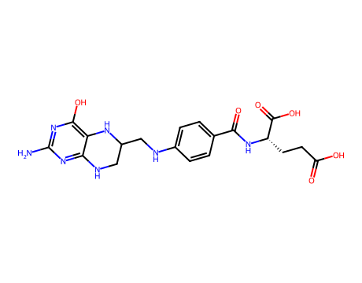
Acide tétrahydrofoliqueà reconnaître
pas de nom commercial au cours
Folates (vitamine B9) — Forme réduite active de l'acide folique
Noyau : Acide folique dont le cycle pyrazine de la ptéridine est entièrement réduit (tétrahydroptéridine : N5-H, C6-H, C7-H2, N8-H)
Mécanisme : Transfert de groupes monocarbonés : après avoir fixé un groupe monocarboné, le THF le cède à un substrat. Intervient dans la conversion dUMP → dTMP (thymidylate synthase, thymidine pour l'ADN), dans 2 des 10 étapes 5-PRP → IMP (bases puriques) et dans la synthèse de méthionine, histidine et sérine.
Structure-activité
Diffère de l'acide folique par 4 H sur le cycle ptéridine (deux réductions successives, la seconde par la dihydrofolate réductase). C'est la forme active.
Tétra = 4 H ajoutés ; THF = le « taxi » qui transporte un carbone.
Antifolates : inhibiteurs de la dihydrofolate réductase
Antifolates : inhibiteurs de la dihydrofolate réductase — Inhibiteur sélectif de la DHFR bactérienne
Noyau : 2,4-diaminopyrimidine reliée par un CH2 (en 5) à un noyau 3,4,5-triméthoxyphényle
Mécanisme : Inhibe de manière préférentielle la dihydrofolate réductase bactérienne (sélectivité bactérie/homme d'environ 40 000, car la DHFR humaine est différente) : empêche la réduction de l'acide dihydrofolique en THF. Bactériostatique.
Indications : Utilisé parfois dans le traitement d'infections urinaires (entérobactéries), En association avec le sulfaméthoxazole (co-trimoxazole)
Structure-activité
Ce n'est PAS un sulfamidé (pas de SO2NH) : pyrimidine diaminée + benzyle triméthoxylé (« tri-méth-oxy » → triméthoprime). Agit une étape plus loin que les sulfamidés (réduction du dihydrofolate et non synthèse du folate).
TriMéthoprime : 3 OMe sur le benzène, il bloque la Réductase (DHFR).
Noyau : Sulfanilamide dont l'azote du sulfonamide est monosubstitué par un 5-méthylisoxazol-3-yle
Mécanisme : Analogue du PABA, inhibe la dihydroptéroate synthétase (prévient la synthèse de l'acide folique chez les micro-organismes). Bactériostatique.
Indications : N'est plus utilisé qu'en association avec le triméthoprime (co-trimoxazole)
Structure-activité
Monosubstitution du sulfamoyle par un hétérocycle aromatique (isoxazole méthylé, 5 chaînons) : augmente l'activité par rapport au sulfanilamide. NH2 primaire et para conservés.
Sulfa-MÉTH-OXAZOLE : un méthyl sur un isoxazole.
Antifolates en association
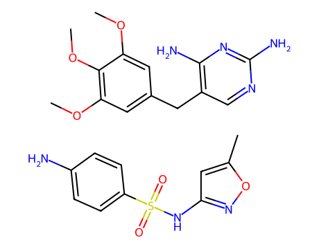
BACTRIM®
Co-trimoxazoleà dessiner
BACTRIM®, EUSAPRIM®
Antifolates en association — Sulfamidé + inhibiteur de la DHFR (rapport 1 : 5)
Noyau : Association de deux molécules : sulfaméthoxazole (sulfamidé) + triméthoprime (diaminopyrimidine)
Mécanisme : Action à deux niveaux de la même voie : le sulfaméthoxazole inhibe la synthèse de l'acide folique (dihydroptéroate synthétase) et le triméthoprime empêche la réduction de l'acide dihydrofolique (dihydrofolate réductase).
Indications : Morsures de chats, de chiens ou d'humains chez les enfants allergiques à la pénicilline, Infections urinaires compliquées (pyélonéphrite aiguë, prostatite) en cas de contre-indication aux quinolones, Coqueluche (pertussis), pour limiter la propagation, en cas de contre-indication à l'azithromycine, Patients VIH : prophylaxie et traitement de la toxoplasmose et de la pneumonie à Pneumocystis jirovecii (anciennement P. carinii)
BACTRIM = Bi-ACTion : 2 molécules, 2 enzymes de la même chaîne.
Sulfamidés
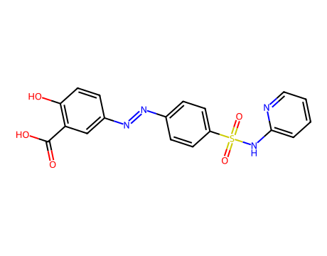
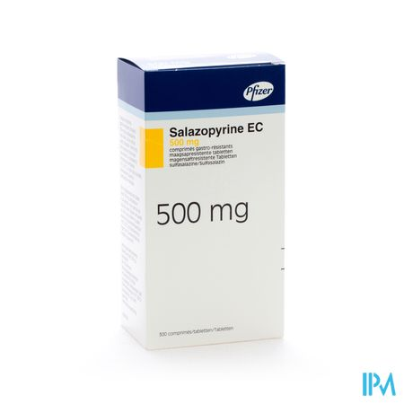
SALAZOPYRINE®
Sulfasalazineà dessiner
SALAZOPYRINE®
Sulfamidés — Sulfamidé intestinal (pro-drug de la mésalazine)
Noyau : Acide 5-aminosalicylique (mésalazine) lié par un pont azo (-N=N-) au NH2 de la sulfapyridine (sulfanilamide N-substitué par une pyridin-2-yle)
Mécanisme : Pro-drug : la mésalazine libérée dans l'intestin est la partie efficace (effet anti-inflammatoire). La sulfasalazine n'est que le vecteur qui en empêche la résorption dans la partie haute de l'intestin.
Indications : Colite ulcéreuse, Arthrite rhumatoïde, Spondylarthrite ankylosante, Maladie de Crohn (traitement préventif, avec les salicylés)
Structure-activité
Pont azo -N=N- : le NH2 porte un groupement labile éliminé lors de la métabolisation (règle des RSA). Hydrolysée dans l'intestin en sulfapyridine (sulfamidé antibactérien) + mésalazine (anti-inflammatoire).
SALAZOPYRINE = SALicylé + AZO + PYRidine.
Salicylés (aminosalicylés)
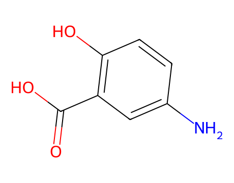
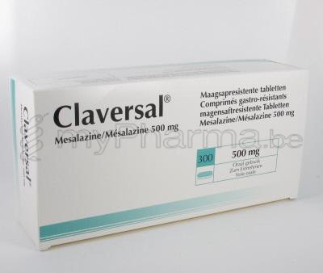
CLAVERSAL®
Mésalazineà dessiner
CLAVERSAL®, COLITOFALK®, ASAMOVON®, PENTASA®
Salicylés (aminosalicylés) — Métabolite actif de la sulfasalazine
Noyau : Acide salicylique (acide 2-hydroxybenzoïque) portant un NH2 en position 5
Mécanisme : Effet anti-inflammatoire ; mécanisme complexe et encore mal connu : outre les cyclooxygénases, elle inhiberait les lipooxygénases.
Indications : Colite ulcéreuse, Maladie de Crohn (traitement préventif, salicylés)
Structure-activité
C'est la moitié « salicylée » de la sulfasalazine, sans la sulfapyridine. Ce n'est pas un sulfamidé (pas de SO2NH).
Mésalazine = 5-ASA = « Aspirine du côlon » (un salicylé avec un NH2).
Sulfamidés
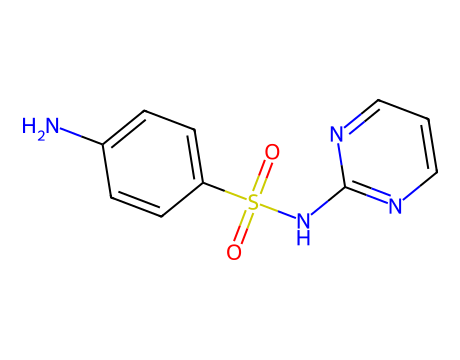
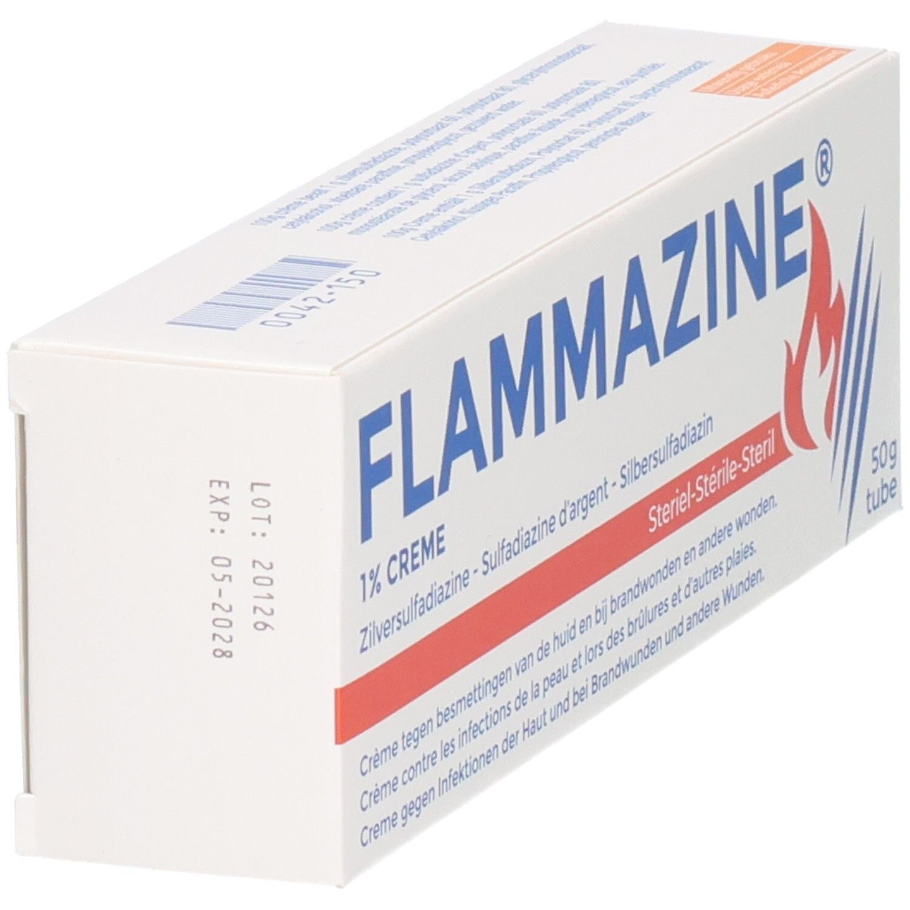
FLAMMAZINE®
Sulfadiazine argentiqueà dessiner
FLAMMAZINE®, SULFASIL®
Sulfamidés — Sulfamidé à usage externe
Noyau : Sulfanilamide dont l'azote du sulfonamide porte une pyrimidin-2-yle ; N du sulfonamide déprotoné (N⁻) associé à Ag⁺
Mécanisme : Sulfamidé (inhibition de la synthèse de l'acide folique bactérien) associé à l'ion argent.
Indications : Brûlures infectées (sulfamidé le plus utilisé en usage externe), Crème pour le traitement des brûlures infectées (p.174)
Structure-activité
Sulfamidé monosubstitué par un hétérocycle (pyrimidine) sous forme de sel d'argent : l'acidité du SO2NH permet la formation du sel.
FLAMMAZINE® pour les flammes (brûlures) ; argent → peau gris-ardoise.
Les pénicillines (généralités antibiotiques, PK/PD, β-lactames, classification, effets indésirables) syllabus p. 31-53
Concepts à comprendre (30)
Usage approprié des antibiotiques
Pour limiter les résistances : dose correcte (suffisamment élevée), durée correcte (la plus courte possible), fréquence correcte, limiter les cures successives chez un même patient et le nombre de traitements dans la population, respecter les conditions d'administration (ex. en lien avec le repas).
Pourquoi une dose trop faible favorise-t-elle les résistances ?
Parce qu'une concentration qui n'atteint pas la CMI ne détruit pas le germe : les souches moins sensibles survivent et sont sélectionnées.
Spectre d'activité
Chaque antibiotique possède un spectre d'activité propre : l'ensemble des souches de microorganismes qui lui sont sensibles.
Pourquoi choisir un spectre aussi étroit que possible ?
Le spectre étroit est le premier critère de choix entre molécules d'efficacité similaire : on vise le germe en cause sans exposer inutilement les autres bactéries (moins de pression de sélection).
CMI (concentration minimale inhibitrice)
Pour une souche donnée, la CMI est la concentration minimale d'antibiotique qui inhibe visuellement la croissance du microorganisme. Elle s'exprime en mg/l.
Pourquoi la CMI permet-elle de définir une souche résistante ?
Une souche est dite résistante lorsque, même à la dose maximale, la concentration plasmatique de l'antibiotique ne peut atteindre sa CMI.
Souche résistante
Une souche bactérienne est résistante à un antibiotique lorsqu'après administration de la dose maximale, la concentration plasmatique ne peut atteindre la CMI du microorganisme. Des souches « sensibles » deviennent résistantes quand la CMI ne suffit plus.
Pourquoi augmenter la dose ne règle-t-il pas toujours le problème ?
Parce qu'on est limité par la dose maximale : si même à cette dose la CMI n'est pas atteinte dans le plasma, la souche reste résistante.
Antibiotiques temps-dépendants (β-lactamines)
Pour les pénicillines et céphalosporines, l'efficacité dépend surtout de la durée pendant laquelle la concentration libre reste supérieure à la CMI entre deux prises (%fT > CMI). Elle dépend de la dose, de la demi-vie, mais surtout de l'intervalle entre les prises. À retenir : β-lactamines = maintenir la concentration au-dessus de la CMI suffisamment longtemps.
Pourquoi répartir les prises (voire faire une perfusion prolongée) d'une β-lactamine plutôt que donner une grosse dose unique ?
Parce que ce qui compte est le temps passé au-dessus de la CMI : un pic élevé n'apporte rien si la concentration retombe vite sous la CMI ; des prises bien réparties maintiennent la concentration plus longtemps.
L'efficacité augmente avec un pic de concentration élevé par rapport à la CMI (Cmax/CMI). Ils ont un effet post-antibiotique (inhibition persistante sous la CMI) : des doses plus élevées et plus espacées peuvent être privilégiées. À retenir : aminoglycosides = pic élevé / CMI.
Pourquoi peut-on espacer les doses des aminoglycosides ?
Grâce à l'effet post-antibiotique : la croissance bactérienne reste inhibée même quand la concentration est redescendue sous la CMI.
Exposition globale AUC/CMI (fluoroquinolones)
Pour certains antibiotiques, notamment les fluoroquinolones, c'est l'exposition globale au cours du temps qui détermine l'efficacité : paramètre PK/PD = AUC sur 24 h / CMI.
Pourquoi parle-t-on d'« exposition globale » pour les fluoroquinolones ?
Parce que ni le pic seul ni le temps au-dessus de la CMI seul ne prédisent l'efficacité : c'est l'aire sous la courbe sur 24 h rapportée à la CMI.
Surconsommation d'antibiotiques = problème de santé publique
La surconsommation d'antibiotiques est un réel problème de santé publique dont le pharmacien doit être conscient. En Belgique, l'usage et l'antibiorésistance sont détaillés dans le rapport BELMAP.
Pourquoi le pharmacien est-il concerné par la surconsommation ?
Parce qu'il délivre les antibiotiques et peut veiller au bon usage (dose, durée, observance), ce qui limite la sélection de souches résistantes.
Choix de l'antibiotique : profil d'activité, germe, antibiogramme
Le choix dépend du foyer, du ou des pathogènes et de l'anamnèse médicamenteuse. Entre molécules d'efficacité similaire : spectre aussi étroit que possible, effets indésirables, résistances locales, observance, coût. Il est guidé par le profil d'activité et la nature du germe, et peut être orienté par l'antibiogramme (culture sur gélose avec pastilles d'antibiotiques).
Pourquoi l'antibiogramme est-il utile ?
Il compare directement la sensibilité du germe isolé à plusieurs antibiotiques (zones d'inhibition autour des pastilles), ce qui permet un choix ciblé.
Tropisme
Certains antibiotiques ont un tropisme marqué pour certains organes. Ex. : pour une infection urinaire, on choisit un antibiotique éliminé sous forme active par voie rénale.
Pourquoi l'élimination rénale sous forme active est-elle un atout pour une cystite ?
Parce que l'antibiotique se concentre sous forme active dans les urines, là où se trouve l'infection.
Guide belge de traitement anti-infectieux (BAPCOC)
Le choix selon le tableau clinique renvoie au « Guide belge de traitement anti-infectieux en pratique ambulatoire » de la BAPCOC, consultable via le CBIP (cbip.be, chapitre 12) ; mise à jour 2026 (mai 2026).
Pourquoi se référer à un guide national plutôt qu'à des habitudes ?
Il intègre les données belges de résistance et définit des premiers et deuxièmes choix, ce qui harmonise la prescription et limite les résistances.
Cycle β-lactame + cycle thiazolidine
La pénicilline contient un système bicyclique apparemment fort instable : un cycle β-lactame à 4 pièces accolé à un cycle thiazolidine à 5 pièces. Le squelette dérive de deux acides aminés, la cystéine et la valine (dans la figure, partie valine en rouge, partie cystéine en bleu). Structure établie par Dorothy Hodgkin (diffraction des rayons X, 1945).
Pourquoi ce système bicyclique est-il « fort instable » ?
Le cycle β-lactame à 4 pièces est très tendu (tension cyclique) et son carbonyle est fortement électrophile, donc facilement attaqué (acide, β-lactamases, sérine des transpeptidases).
Pénicilline amidase
Enzyme de Penicillium chrysogenum (découverte en 1957) qui scinde la pénicilline G en 6-APA et en acide phénylacétique. Le 6-APA est ensuite acylé (chlorure d'acide ou anhydride) sur le NH2 en 6 : c'est la voie hémi-synthétique vers toutes les pénicillines semi-synthétiques.
Pourquoi la synthèse totale (1957) n'a-t-elle pas suffi et pourquoi la pénicilline amidase a-t-elle tout changé ?
La synthèse totale n'était pas industriellement rentable ; l'amidase fournit le 6-APA facilement, qu'il suffit d'acyler avec différents acides pour créer de nombreux analogues.
Inhibition de la biosynthèse de la paroi (sans effet sur les mycoplasmes)
Les β-lactames (pénicillines et céphalosporines) empêchent la biosynthèse de la paroi bactérienne en peptidoglycane. Elles sont donc sans effet sur les organismes dépourvus de paroi comme les mycoplasmes.
Pourquoi une pénicilline est-elle inutile contre un mycoplasme ?
Parce que les mycoplasmes n'ont pas de paroi : la cible (la synthèse du peptidoglycane) n'existe pas.
Peptidoglycane (muréine)
Polymère de N-acétyl-D-glucosamine et d'acide N-acétyl-muramique portant une chaîne peptidique (L-Ala, acide D-glutamique, L-Lys, D-Ala). Chez les Gram −, il est recouvert d'une membrane externe (lipopolysaccharides), absente chez les Gram +.
Pourquoi certaines β-lactames sont-elles moins actives sur les Gram − que sur les Gram + ?
Chez les Gram −, elles n'atteignent les transpeptidases qu'après passage par les porines de la membrane externe ; celles qui pénètrent peu cette membrane sont donc moins actives.
DD-transpeptidases et D-Ala-D-Ala C-terminal
Les DD-transpeptidases assurent le pontage final du peptidoglycane : elles relient le chaînon oligopeptidique du précurseur (terminé par D-Ala-D-Ala) à la L-Lys du peptidoglycane existant, en libérant le D-Ala terminal. Une DD-carboxypeptidase peut hydrolyser le lien D-Ala-D-Ala sans pontage.
Pourquoi bloquer cette dernière étape suffit-il à fragiliser la bactérie ?
Sans pontage (réticulation), le peptidoglycane n'est pas solidifié : la paroi est défectueuse et la pénicilline est bactéricide.
Analogie structurale pénicilline / D-Ala-D-Ala
Les DD-transpeptidases et DD-carboxypeptidases (enzymes à sérine) confondent les pénicillines avec leur substrat naturel, le précurseur de peptidoglycane, grâce à l'analogie structurale avec le résidu D-Ala-D-Ala terminal. La sérine du site catalytique attaque (attaque nucléophile) le cycle β-lactame.
Pourquoi l'enzyme se fait-elle « piéger » par la pénicilline ?
Parce que la pénicilline ressemble au D-Ala-D-Ala : l'enzyme la prend pour son substrat, sa sérine attaque le β-lactame et l'enzyme est inhibée.
β-lactames bactéricides
Les pénicillines et les céphalosporines sont toutes deux bactéricides.
Pourquoi l'inhibition de la paroi est-elle bactéricide ?
Une paroi non réticulée ne protège plus la bactérie : celle-ci est détruite, pas seulement freinée.
Acidorésistance — tension cyclique
Certaines pénicillines (pén. G) sont détruites par l'acidité gastrique. Forte tension cyclique : la protonation de l'azote lactamique crée deux centres + voisins, et l'O de l'amide externe attaque le carbone β-lactamique très électrophile → acide pénicillénique. Le proton catalyse la rupture du lien amide intracyclique.
Pourquoi la pénicilline G ne peut-elle pas être donnée per os ?
Parce qu'en milieu gastrique acide, l'O de son amide externe (chaîne benzyle peu attractrice) attaque le β-lactame : elle est transformée en acide pénicillénique inactif.
Plus le radical R est attracteur, plus la pénicilline est acidorésistante
Plus R est attracteur (plus l'acide R-COOH est fort), plus l'induction sur le CO-NH exocyclique s'oppose à la dégradation du noyau β-lactame, car l'O devient moins nucléophile. Ex. : acide phénoxyacétique (pén. V) plus fort que l'acide phénylacétique (pén. G).
Pourquoi l'ajout d'un oxygène (phénoxy) rend-il la pénicilline V résistante à l'acide ?
L'O électroattracteur rend l'acide phénoxyacétique plus fort : par induction, l'O du C=O exocyclique devient moins nucléophile et n'attaque plus le β-lactame.
Sensibilité aux β-lactamases (pénicillinases)
Dans l'espace périplasmique, les β-lactamases hydrolysent la fonction lactame → acide pénicilloïque inactif, dégradé en D-pénicillamine et acide pénaldique, ou décarboxylé en acide pénilloïque. Leur production est la raison majeure des résistances aux pénicillines.
Pourquoi l'acide pénicilloïque est-il inactif ?
Parce que le cycle β-lactame est ouvert : il ne peut plus acyler la sérine des transpeptidases.
Classification des pénicillines
Selon la résistance aux acides et aux β-lactamases : 1) sensibles aux pénicillinases et acido-sensibles (pén. G) ; 2) sensibles aux pénicillinases et acido-résistantes (pén. V) ; 3) résistantes aux pénicillinases et acido-résistantes (oxacilline, cloxacilline, flucloxacilline) ; 4) à spectre élargi (amino-, carboxy-, uréidopénicillines) ; 5) amidinopénicillines.
Pourquoi classer les pénicillines selon ces deux critères ?
Parce qu'ils déterminent la voie d'administration (acide → orale ou non) et l'activité sur les germes producteurs de pénicillinases.
Résistance aux β-lactamases : groupements encombrants + radical acyle électrocaptant
Pour résister à l'hydrolyse enzymatique par les β-lactamases, on protège la fonction lactame par des groupements encombrants, tout en gardant la résistance aux acides grâce à un radical acyle électrocaptant (ex. oxacilline, cloxacilline, flucloxacilline).
Pourquoi un groupement encombrant protège-t-il de la β-lactamase ?
Il gêne stériquement l'accès de l'enzyme à la fonction lactame, qui n'est plus hydrolysée.
Hydrophilie de la chaîne latérale → élargissement du spectre
L'augmentation de l'hydrophilie de la chaîne latérale élargit le spectre aux Gram − en plus des Gram +. Fonction hydrophile sur le carbone α du benzyle de la pén. G : NH2 → aminopénicillines ; COOR → carboxypénicillines ; NH-CO-NH-R → uréidopénicillines.
Pourquoi une chaîne plus hydrophile atteint-elle mieux les Gram − ?
Les β-lactames doivent passer par les canaux porines (hydrophiles) de la membrane externe des Gram − ; une chaîne hydrophile facilite ce passage.
Les aminopénicillines sont très sensibles aux β-lactamases
Ampicilline et amoxicilline ne sont pas actives sur les staphylocoques producteurs de β-lactamases ni sur certaines souches d'Haemophilus influenzae et d'Escherichia coli.
Pourquoi l'amoxicilline n'est-elle pas un bon choix pour un abcès à staphylocoque producteur de pénicillinase ?
Parce qu'elle est hydrolysée par la β-lactamase ; il faut une pénicilline résistante aux pénicillinases comme la flucloxacilline.
Pipéracilline : voie parentérale car acido-sensible
La pipéracilline (acyluréidopénicilline) n'est administrable que par voie parentérale car elle est acido-sensible ; elle est toujours associée au tazobactam, inhibiteur de β-lactamases.
Pourquoi associer systématiquement le tazobactam à la pipéracilline ?
Le tazobactam inhibe les β-lactamases et protège ainsi la pipéracilline de l'hydrolyse.
Allergie aux pénicillines : souvent surestimée
Environ 10 % des patients déclarent une allergie à la pénicilline, mais moins de 1 % de la population a une vraie hypersensibilité IgE-médiée ; l'anaphylaxie touche 0,01-0,05 % des exposés. La majorité perd la sensibilisation après ~10 ans. Un test cutané (± oral challenge sous surveillance) permet de confirmer ou d'infirmer.
Pourquoi est-il important de ne pas étiqueter « allergique » un patient à tort ?
Parce que la plupart n'ont pas d'allergie vraie : on les priverait inutilement de pénicillines efficaces à spectre étroit au profit d'alternatives moins adaptées.
Quand renoncer aux pénicillines
Seuls les antécédents d'anaphylaxie (< 1 h après la prise) ou d'urticaire, hypotension, arythmie cardiaque, œdème angioneurotique, œdème laryngé et/ou bronchospasme dans les 72 h suivant la prise doivent faire renoncer aux pénicillines.
Pourquoi une simple diarrhée sous amoxicilline n'est-elle pas une allergie ?
La diarrhée est un effet indésirable connu des pénicillines, pas un symptôme d'hypersensibilité IgE (urticaire, œdème, bronchospasme, anaphylaxie).
Cross-réactivité pénicillines / céphalosporines
Céphalosporines de 1re génération ou à chaînes latérales similaires : risque jusqu'à ~1-8 % selon les études. 3e-4e générations ou chaînes latérales différentes : risque de réaction IgE immédiate généralement < 1 %.
Pourquoi la chaîne latérale compte-t-elle autant dans la cross-réactivité ?
Parce que la similitude des chaînes latérales augmente le risque de réaction croisée ; quand elles diffèrent (3e-4e gén.), le risque devient < 1 %.
Hypersensibilités (Gell et Coombs)
Type I : immédiate, IgE, dégranulation des mastocytes (anaphylaxie à la pénicilline). Type II : cytotoxique, IgG/IgM + complément (anémie hémolytique médicamenteuse, thrombopénie). Type III : complexes immuns déposés dans les tissus, 3-10 jours (maladie sérique). Type IV : retardée 48-72 h, lymphocytes T + macrophages (dermatite de contact, exanthème au sulfamide).
Pourquoi l'anaphylaxie survient-elle en quelques minutes alors que la maladie sérique prend plusieurs jours ?
L'anaphylaxie (type I) mobilise des IgE déjà fixées sur les mastocytes, qui dégranulent aussitôt ; la maladie sérique (type III) nécessite la formation et le dépôt de complexes immuns.
Pénicillines
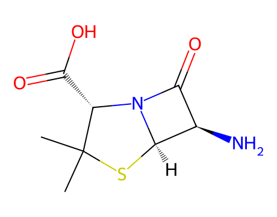
Acide 6-aminopénicillaniqueà dessiner
pas de nom commercial au cours
Pénicillines — Noyau de base (intermédiaire de synthèse)
Noyau : Système bicyclique : cycle β-lactame (4 pièces) accolé à un cycle thiazolidine (5 pièces) ; COOH en 3, gem-diméthyle en 2, S en 1, N en 4, C=O en 5, NH2 en 6
Mécanisme : Intermédiaire biosynthétique, isolé par les chercheurs de chez Beecham (l'année suivant la synthèse totale de 1957) ; obtenu industriellement par hydrolyse de la pénicilline G (ou V) par la pénicilline amidase de Penicillium chrysogenum (libère aussi l'acide phénylacétique).
Structure-activité
Le 6-APA est le squelette commun de toutes les pénicillines : on acyle le NH2 en 6 par un chlorure d'acide (R-COCl) ou un anhydride pour obtenir les pénicillines hémi-synthétiques. Le squelette dérive de la valine et de la cystéine.
Carré (β-lactame, 4) + pentagone (thiazolidine, 5) : S en 1, N en 4, NH2 en 6 — « 6-APA, l'Amine en 6 ».
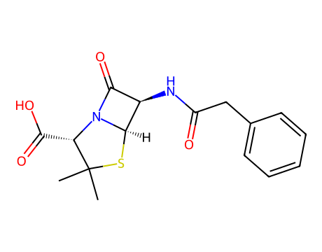
Pénicilline Gà dessiner
PENICILLINE®, EXTENCIN® (+ benzathine, forme retard)
Pénicillines — Pénicillines sensibles aux pénicillinases et acido-sensibles
Mécanisme : Inhibe la biosynthèse de la paroi bactérienne : inhibition des DD-transpeptidases et DD-carboxypeptidases (enzymes à sérine) qui confondent la pénicilline avec leur substrat naturel (analogie avec le résidu D-Ala-D-Ala terminal du précurseur de peptidoglycane) ; attaque nucléophile de la sérine du site catalytique sur le cycle β-lactame. Bactéricide. Sans effet sur les organismes dépourvus de paroi (mycoplasmes).
Indications : Traitement de choix des angines aiguës à streptocoques (traitement poursuivi 10 jours)
Structure-activité
Chaîne benzyle peu attractrice : l'O de l'amide externe reste nucléophile et attaque le carbone β-lactamique en milieu acide → acide pénicillénique. D'où l'acido-sensibilité (pas de voie orale). Sensible aux pénicillinases.
G comme « Gastro-détruite » : benzyle (CH2-Ph) → injectable uniquement.
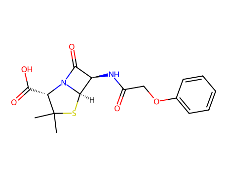
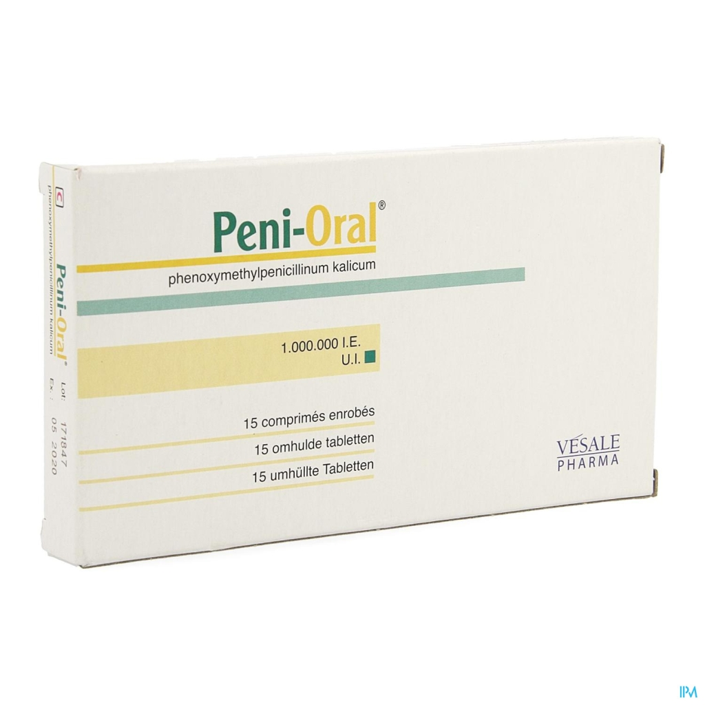
PENI-ORAL® (ancien nom commercial)
Pénicilline Và dessiner
PENI-ORAL® (ancien nom commercial)
Pénicillines — Pénicillines sensibles aux pénicillinases et acido-résistantes
Mécanisme : Inhibe la biosynthèse de la paroi bactérienne : inhibition des DD-transpeptidases et DD-carboxypeptidases (enzymes à sérine) qui confondent la pénicilline avec leur substrat naturel (analogie avec le résidu D-Ala-D-Ala terminal du précurseur de peptidoglycane) ; attaque nucléophile de la sérine du site catalytique sur le cycle β-lactame. Bactéricide. Sans effet sur les organismes dépourvus de paroi (mycoplasmes).
Structure-activité
Remplacement de l'acide phénylacétique (pén. G) par l'acide phénoxyacétique, acide plus fort : le groupe phénoxyméthyle attracteur rend l'O du C=O exocyclique moins nucléophile, ce qui s'oppose à la formation de l'acide pénicillénique → acidorésistante, active per os. Reste sensible aux pénicillinases.
V comme « Voie orale » : un O (phénOxy) de plus que la G = acide plus fort = résiste à l'estomac.
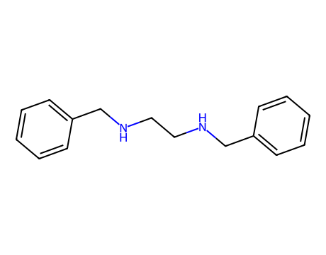
Benzathineà reconnaître
EXTENCIN® (+ pénicilline G)
Pénicillines — Contre-ion de la forme retard de la pénicilline G
Noyau : Diamine : deux groupes benzyle reliés par un pont éthylènediamine (dessinée protonée dans le cours, face au carboxylate de la pénicilline G)
Mécanisme : Forme un sel peu soluble avec la pénicilline G : résorption lente après injection IM.
Structure-activité
Ce n'est pas un antibiotique : associée à la pénicilline G, elle forme un sel peu soluble qui prolonge l'action.
BENZAthine = deux BENZyles qui « retiennent » la pénicilline G : libération lente.
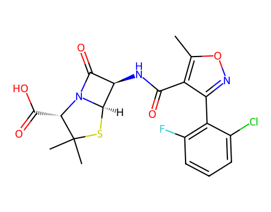
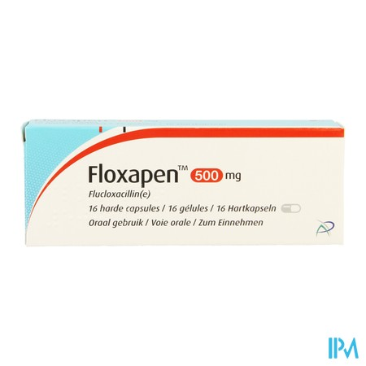
FLOXAPEN®
Flucloxacillineà dessiner
FLOXAPEN®, STAPHYCID®
Pénicillines — Pénicillines résistantes aux pénicillinases et acido-résistantes (isoxazolylpénicillines)
Mécanisme : Inhibe la biosynthèse de la paroi bactérienne : inhibition des DD-transpeptidases et DD-carboxypeptidases (enzymes à sérine) qui confondent la pénicilline avec leur substrat naturel (analogie avec le résidu D-Ala-D-Ala terminal du précurseur de peptidoglycane) ; attaque nucléophile de la sérine du site catalytique sur le cycle β-lactame. Bactéricide. Sans effet sur les organismes dépourvus de paroi (mycoplasmes).
Indications : Infections cutanées (cellulite, abcès…) à staphylocoques producteurs de pénicillinases nécessitant une antibiothérapie systémique (pratique ambulatoire)
Structure-activité
Dérivé halogéné de l'oxacilline (oxacilline R = R' = H ; cloxacilline R = H, R' = Cl ; flucloxacilline R = F, R' = Cl). Groupement encombrant qui protège la fonction lactame des β-lactamases + radical acyle électrocaptant qui conserve la résistance aux acides.
FLU + CLO = F + Cl sur le phényle de l'isoxazole : le « bouclier » anti-pénicillinase des STAPHYlocoques (STAPHYCID®).
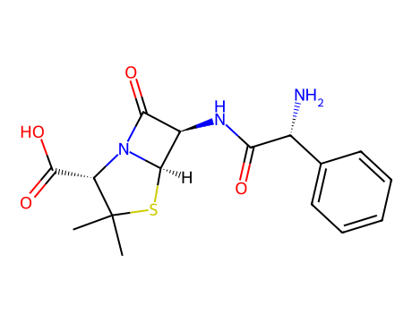
Ampicillineà dessiner
pas de nom commercial au cours
Pénicillines — Pénicillines à spectre élargi — aminopénicillines
Noyau : 6-APA + chaîne phénylglycyl (pénicilline G avec un NH2 sur le carbone α du benzyle)
Mécanisme : Inhibe la biosynthèse de la paroi bactérienne : inhibition des DD-transpeptidases et DD-carboxypeptidases (enzymes à sérine) qui confondent la pénicilline avec leur substrat naturel (analogie avec le résidu D-Ala-D-Ala terminal du précurseur de peptidoglycane) ; attaque nucléophile de la sérine du site catalytique sur le cycle β-lactame. Bactéricide. Sans effet sur les organismes dépourvus de paroi (mycoplasmes).
Structure-activité
Introduction d'un NH2 (hydrophile) sur le carbone α de la pénicilline G : élargit le spectre (Gram − en plus) et renforce la stabilité aux acides par effet inductif. Reste très sensible aux β-lactamases.
AMPIcilline = pén. G + AMine : spectre AMPlifié, mais mal résorbée.
Pénicillines — Pénicillines à spectre élargi — aminopénicillines
Noyau : 6-APA + chaîne p-hydroxyphénylglycyl
Mécanisme : Inhibe la biosynthèse de la paroi bactérienne : inhibition des DD-transpeptidases et DD-carboxypeptidases (enzymes à sérine) qui confondent la pénicilline avec leur substrat naturel (analogie avec le résidu D-Ala-D-Ala terminal du précurseur de peptidoglycane) ; attaque nucléophile de la sérine du site catalytique sur le cycle β-lactame. Bactéricide. Sans effet sur les organismes dépourvus de paroi (mycoplasmes).
Indications : Infections respiratoires (doses élevées d'amoxicilline), Infections des voies respiratoires inférieures (suspicion de pneumonie bactérienne communautaire, rares bronchites aiguës nécessitant un antibiotique) : premier choix empirique chez l'adulte sans comorbidité et chez l'enfant, Otite moyenne aiguë et rhinosinusite aiguë : premier choix lorsqu'un antibiotique est indiqué, Mal de gorge aigu : deuxième choix si le céfadroxil ou la céfalexine ne peuvent pas être utilisés
Structure-activité
Hydroxylation en para du noyau aromatique de l'ampicilline : résorption orale ≈ 80 % (contre 25-40 % pour l'ampicilline). Comme toute aminopénicilline, très sensible aux β-lactamases.
amOXIcilline = ampicilline + OH (hydrOXI en para) → 80 % absorbée. Un des antibiotiques les plus vendus en Belgique.
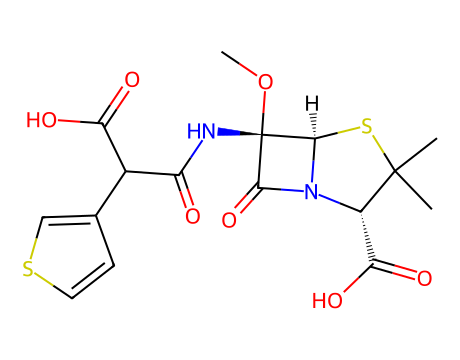
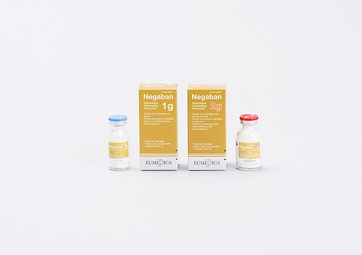
NEGABAN®
Témocillineà dessiner
NEGABAN®
Pénicillines — Pénicillines à spectre élargi — carboxypénicillines
Noyau : 6-APA méthoxylé en 6α + chaîne carboxy(thiophén-3-yl)acétyle
Mécanisme : Inhibe la biosynthèse de la paroi bactérienne : inhibition des DD-transpeptidases et DD-carboxypeptidases (enzymes à sérine) qui confondent la pénicilline avec leur substrat naturel (analogie avec le résidu D-Ala-D-Ala terminal du précurseur de peptidoglycane) ; attaque nucléophile de la sérine du site catalytique sur le cycle β-lactame. Bactéricide. Sans effet sur les organismes dépourvus de paroi (mycoplasmes).
Indications : Infections à bacilles Gram − sensibles fortement suspectés ou confirmés (adultes et enfants) : infections des voies urinaires compliquées et pyélonéphrites aiguës, Infections des voies respiratoires inférieures (y compris pneumonies nosocomiales), Infections aiguës de la peau et des tissus mous
Structure-activité
Carboxypénicilline (COOH sur le carbone α) comme la carbenicilline et la ticarcilline ; la témocilline se distingue par un groupe méthoxy en 6α (c'est la ticarcilline + OCH3 en 6α). L'effet inducteur du COOH ne suffit pas pour la gastro-résistance → parentérale.
TéMOcilline = MéthOxy en 6α ; NEGABAN® → Gram NÉGAtifs.
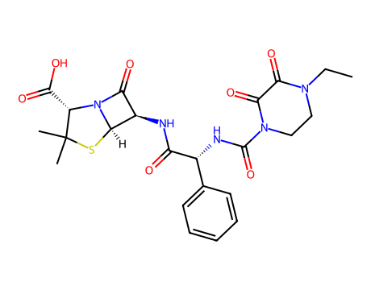
Pipéracillineà reconnaître
PIPERACILLINE-TAZOBACTAM EG® (+ tazobactam)
Pénicillines — Pénicillines à spectre élargi — acyluréidopénicillines
Noyau : Ampicilline dont le NH2 est acylé en uréide (NH-CO-N) par un cycle 4-éthyl-2,3-dioxopipérazine
Mécanisme : Inhibe la biosynthèse de la paroi bactérienne : inhibition des DD-transpeptidases et DD-carboxypeptidases (enzymes à sérine) qui confondent la pénicilline avec leur substrat naturel (analogie avec le résidu D-Ala-D-Ala terminal du précurseur de peptidoglycane) ; attaque nucléophile de la sérine du site catalytique sur le cycle β-lactame. Bactéricide. Sans effet sur les organismes dépourvus de paroi (mycoplasmes).
Indications : Mêmes indications que les carboxypénicillines (infections à Gram −)
Structure-activité
Fonction hydrophile de type uréido (NH-CO-NH-R) sur le carbone α → spectre élargi aux Gram −. Acido-sensible → parentérale uniquement. Seule acyluréidopénicilline commercialisée en Belgique.
PIPÉRacilline = PIPÉRazine-dione accrochée par une urée ; toujours en duo avec TAZO.
Céphalosporines et autres β-lactames (carbapénèmes, monobactames, inhibiteurs de β-lactamases) syllabus p. 54-68
Concepts à comprendre (29)
Cycle thiazolidine (pénicillines) vs cycle thiazine (céphalosporines)
Les céphalosporines se distinguent chimiquement des pénicillines par le remplacement du cycle thiazolidine (5 chaînons, S + N) par un cycle thiazine (6 chaînons). Le cycle thiazine est plus résistant que le cycle thiazolidine.
Pourquoi la numérotation de la chaîne latérale passe-t-elle de la position 6 (6-APA) à la position 7 (7-ACA) ?
Parce que le cycle soufré passe de 5 à 6 chaînons : un atome de plus dans le bicycle décale la numérotation, l'amine porteuse de la chaîne se retrouve en 7.
Vaste pharmacomodulation de la céphalosporine C
La céphalosporine C (isolée de Cephalosporium acremonium par G. Brotzu, 1945, Cagliari) a une activité modérée sur Gram + et Gram -. Son profil pharmacologique et sa relative résistance aux pénicillinases ont amené une vaste pharmacomodulation, inspirée en bonne partie des pénicillines, pour améliorer le modèle naturel.
Pourquoi la céphalosporine C était-elle un bon point de départ malgré son activité modérée ?
Parce qu'elle était relativement résistante aux pénicillinases et avait un profil pharmacologique intéressant : il suffisait d'en moduler la structure (comme pour les pénicillines) pour gagner en activité.
Mécanisme similaire aux pénicillines ; moins sensible aux β-lactamases
Les céphalosporines agissent comme les pénicillines (inhibition de la synthèse du peptidoglycane via les PBP, effet bactéricide). Elles restent sensibles aux β-lactamases (céphalosporinases), mais leur cycle β-lactame est moins sensible à la dégradation par les β-lactamases.
Pourquoi une bactérie peut-elle résister à une céphalosporine alors que celle-ci résiste mieux que les pénicillines aux β-lactamases ?
Parce que « moins sensible » ne veut pas dire insensible : certaines β-lactamases spécifiques, les céphalosporinases, hydrolysent quand même leur cycle β-lactame.
Acide 7-aminocéphalosporanique (7-ACA), intermédiaire de synthèse
Les céphalosporines hémi-synthétiques se préparent en modulant la chaîne latérale portée par le groupement 7-amino du 7-ACA, obtenu par hydrolyse de la céphalosporine C. Jusqu'en 1962, aucun procédé enzymatique (amidase) ni chimique rentable ne permettait cette hydrolyse.
Pourquoi le 7-ACA joue-t-il pour les céphalosporines le rôle que joue le 6-APA pour les pénicillines ?
Les deux sont le noyau portant l'amine libre sur laquelle on greffe différentes chaînes acyles : on obtient ainsi toute une série de molécules hémi-synthétiques à partir d'un seul intermédiaire.
Classification des céphalosporines par spectre d'activité (groupes)
Les céphalosporines sont classées en groupes (générations) définis par leur spectre d'activité : trois groupes principaux (I, II, III), plus un groupe IV (céfépime) et un groupe V (ceftaroline). Globalement, en montant de groupe, l'activité sur les Gram - et la résistance aux céphalosporinases augmentent, tandis que l'activité sur les Gram + diminue (groupes I à III).
Pourquoi classer les céphalosporines par spectre plutôt que par structure ?
Parce que c'est le spectre (Gram +, Gram -, Pseudomonas, résistance aux céphalosporinases) qui guide le choix thérapeutique.
Groupe I (1re génération)
Actives sur Gram + mais 10x moins puissantes que la pénicilline G ; actives sur quelques Gram - ; sensibles aux céphalosporinases. En Belgique : céfadroxil, céfalexine (p.o.), céfazoline (parentérale). Le chaînon en 7 est le plus souvent comparable à celui des aminopénicillines.
Pourquoi le céfadroxil et la céfalexine ressemblent-ils à l'amoxicilline et à l'ampicilline ?
Parce que le chaînon introduit en position 7 du groupe I est le plus souvent comparable à celui des aminopénicillines (phénylglycyle ou p-hydroxyphénylglycyle).
Groupe II (2e génération)
Moins actives sur Gram + ; spectre étendu vis-à-vis des Gram - (les Pseudomonas résistent) ; résistance à certaines céphalosporinases. En Belgique : céfuroxime. Par voie i.v., surtout pour les infections nécessitant une hospitalisation et les infections nosocomiales.
Pourquoi ne pas utiliser une C2G pour une infection à Pseudomonas ?
Parce que les Pseudomonas résistent aux céphalosporines du groupe II ; il faut au moins le groupe III (p.ex. ceftazidime).
Groupe III (3e génération)
Nettement moins actives sur les Gram + ; actives contre la majorité des Gram -, y compris les Pseudomonas ; résistance à la plupart des céphalosporinases des Gram -. En Belgique : céfotaxime, ceftazidime, ceftriaxone. Majoritairement actives seulement par voie parentérale.
Pourquoi une C3G n'est-elle pas le meilleur choix pour une infection à Gram + simple ?
Parce que leur activité sur les Gram + est nettement diminuée : leur intérêt est le spectre Gram - large et la résistance aux céphalosporinases.
Groupe IV (4e génération) : céfépime
Un seul représentant actuellement, le céfépime, qui se différencie du groupe III par une sensibilité nettement moindre à un certain nombre de β-lactamases. Son spectre s'étend à des Gram + et Gram - résistants à d'autres C3G.
Pourquoi le céfépime reste-t-il actif sur des germes résistants aux C3G ?
Parce qu'il est nettement moins sensible à un certain nombre de β-lactamases, et sa forme zwitterionique favoriserait le passage de la paroi bactérienne.
Groupe V : ceftaroline et Staphylococcus aureus méticillino-résistants (MRSA)
Le groupe V (ceftaroline) a un spectre similaire à celui du céfotaxime, mais est actif sur les Staphylococcus aureus méticillino-résistants (MRSA) et sur les S. pneumoniae résistants à la pénicilline. Il est inactif sur la plupart des entérocoques, P. aeruginosa et les bactéries « atypiques » (Legionella pneumophila, Mycoplasma pneumoniae, Chlamydia).
Pourquoi la ceftaroline n'est-elle pas un « super-antibiotique » universel ?
Parce que, malgré son activité sur les MRSA, elle reste inactive sur P. aeruginosa, la plupart des entérocoques et les atypiques ; elle est réservée aux infections graves hospitalières.
Règle structurale de biodisponibilité orale des céphalosporines
La présence d'un NH2 en α du lien amide, l'estérification du COOH et la présence en 3 d'un -CH3 ou d'un Cl permettent souvent d'améliorer la biodisponibilité orale (p.o.). Exemples : céfadroxil et céfalexine (NH2 en α + CH3 en 3), céfuroxime axétil (COOH estérifié).
Pourquoi le céfuroxime sodique doit-il être injecté alors que le céfuroxime axétil se prend par la bouche ?
Parce que l'axétil est un ester du COOH (prodrogue) : l'estérification du COOH améliore la biodisponibilité orale ; le céfuroxime libéré est ensuite actif.
Céfuroxime axétil : prodrogue administrable par la voie orale
Le céfuroxime sous forme de sel sodique doit être administré en i.m. ou i.v. L'ester acétoxyéthylique (axétil) du céfuroxime est une prodrogue administrable par la voie orale.
Pourquoi parle-t-on de « prodrogue » pour le céfuroxime axétil ?
Parce que l'ester n'est qu'un véhicule pour l'absorption orale : c'est le céfuroxime libéré qui est la forme active.
Le céfuroxime, précurseur des céphalosporines de 3e génération
Le chaînon en position 7 du céfuroxime diffère radicalement de celui de la plupart des céphalosporines des groupes I et II : introduction d'un substituant méthoxyimino en α du C=O amide. Il peut donc être considéré comme le précurseur des céphalosporines de 3e génération.
Pourquoi le motif méthoxyimino relie-t-il le céfuroxime aux C3G ?
Parce que les C3G portent ce même méthoxyimino, combiné à un aminothiazole (ATMO) : le céfuroxime en a déjà la moitié (avec un furane à la place de l'aminothiazole).
C3G : administration parentérale, réservées aux infections graves
Les céphalosporines du groupe III ne sont majoritairement actives qu'après administration parentérale. Elles sont réservées au traitement, le plus souvent en milieu hospitalier, des infections graves résistant aux autres traitements (pneumonie sévère, méningite bactérienne, infection de plaie) et aux infections nosocomiales. En pratique ambulatoire, elles n'ont de place que dans les IST.
Pourquoi réserver les C3G aux infections graves ?
Pour préserver leur efficacité (limiter les résistances) : elles servent quand les autres traitements échouent ; en ambulatoire, seulement pour les IST.
Radical aminothiazolylméthoxyiminométhyle (ATMO)
Présent systématiquement dans les céphalosporines du groupe III (exception faite du céfotétan), le radical ATMO est sans doute responsable de l'élargissement du spectre d'activité à certaines souches Gram - difficilement traitables.
Pourquoi reconnaître l'ATMO sur une structure est-il utile à l'examen ?
Parce qu'il signe une céphalosporine de 3e génération (et se retrouve dans le céfépime) : le voir permet de classer la molécule et de déduire son spectre Gram - élargi.
Méningites bactériennes et C3G
Les concentrations atteintes par le céfotaxime sodique, la ceftazidime et la ceftriaxone dans le liquide céphalo-rachidien permettent de traiter les méningites bactériennes attribuées à Haemophilus influenzae.
Pourquoi un antibiotique doit-il atteindre le liquide céphalo-rachidien pour traiter une méningite ?
Parce que l'infection siège dans les méninges, baignées par le LCR : seules des molécules qui y atteignent des concentrations suffisantes (comme ces C3G) sont efficaces.
Azote quaternaire et forme zwitterionique (ceftazidime, céfépime)
La ceftazidime est particulièrement soluble dans l'eau grâce à son azote quaternaire (pyridinium). Sa forme zwitterionique (charge + et COO-) favoriserait le passage de la paroi bactérienne. Le céfépime existe aussi sous forme zwitterionique au pH physiologique, ce qui serait favorable au passage de la paroi.
Pourquoi un azote quaternaire augmente-t-il la solubilité dans l'eau ?
Parce qu'il porte une charge positive permanente : avec le carboxylate, la molécule est un zwitterion très polaire, donc très hydrosoluble.
Positionnement des céphalosporines en pratique ambulatoire
En ambulatoire, les céphalosporines sont rarement prescrites en premier choix. Elles ont une place en cas de résistance documentée à la pénicilline ou aux aminopénicillines, et en cas d'allergie documentée à la pénicilline non IgE-médiée.
Pourquoi une céphalosporine n'est-elle pas le premier choix pour une angine ou une otite courante ?
Parce qu'en ambulatoire, la pénicilline/aminopénicilline reste le premier choix ; la céphalosporine ne se justifie qu'en cas de résistance documentée ou d'allergie non IgE-médiée.
Allergie à la pénicilline IgE-médiée vs non IgE-médiée
Allergie non IgE-médiée documentée : les céphalosporines ont une place. Allergie IgE-médiée documentée : les céphalosporines de 1re génération ne sont pas des alternatives ; le céfuroxime (2e génération) et les C3G/C4G peuvent être utilisés à condition de surveiller le patient en milieu hospitalier.
Pourquoi la céfalexine est-elle exclue en cas d'allergie IgE-médiée alors que le céfuroxime peut l'être sous surveillance ?
Le cours le pose comme règle (p.63). Piste de compréhension : le chaînon en 7 des C1G est comparable à celui des aminopénicillines (p.58), alors que celui du céfuroxime et des C3G/C4G est radicalement différent (méthoxyimino, p.59) ; la surveillance hospitalière reste néanmoins obligatoire.
Effets indésirables principaux des céphalosporines
Réactions allergiques (y compris choc anaphylactique) ; environ 10 % des patients allergiques aux pénicillines seront aussi allergiques aux céphalosporines. Troubles hématologiques (entre autres anémie hémolytique, décrite surtout avec la ceftriaxone et le céfotétan) et rarement troubles hépatiques.
Pourquoi demander systématiquement l'histoire allergique aux pénicillines avant de délivrer une céphalosporine ?
Parce qu'environ 10 % des patients allergiques aux pénicillines le sont aussi aux céphalosporines (allergie croisée), avec un risque de choc anaphylactique.
Ceftolozane/tazobactam : traitement de dernier recours
Le ceftolozane (associé au tazobactam : ZEBRAXA®) est réservé aux infections intra-abdominales compliquées, pneumonies nosocomiales et infections urinaires compliquées (y compris pyélonéphrites), en cas d'hospitalisation. Pour limiter les résistances, il n'est à envisager qu'en dernier recours, en cas de multirésistance et après antibiogramme.
Pourquoi exiger un antibiogramme avant de l'utiliser ?
Pour réserver cette association aux germes multirésistants documentés et éviter de sélectionner des résistances à l'une des dernières options disponibles.
Les carbapénèmes
Noyau carbapénème (acide 7-oxo-1-azabicyclo[3.2.0]hept-2-ène-2-carboxylique) : pas de soufre, double liaison 2-3 comme les céphalosporines, très instable chimiquement. Administrés par voie i.v. ; spectre d'activité très large et grande résistance à la plupart des β-lactamases ; utilisés dans les infections à Gram + et Gram - et contre des germes résistants aux C3G/C4G (Enterobacter, Serratia, Pseudomonas).
Pourquoi réserver les carbapénèmes aux infections sévères ?
Parce qu'ils sont actifs sur des germes résistants aux céphalosporines de 3e/4e groupe : ce sont des antibiotiques de recours qu'il faut préserver.
Imipénème + cilastatine (TIENAM®)
L'imipénème est métabolisé par ouverture du cycle β-lactame durant la phase d'excrétion urinaire, après filtration glomérulaire. La cilastatine inhibe de manière réversible la déhydropeptidase rénale responsable de ce catabolisme. Le méropénème, plus stable, peut être utilisé seul.
Pourquoi le méropénème n'a-t-il pas besoin de cilastatine ?
Parce qu'il est plus stable (vis-à-vis du catabolisme rénal) que l'imipénème : il n'a pas besoin d'être protégé de la déhydropeptidase rénale.
Les monobactames : un β-lactame bicyclique n'est pas indispensable
En 1976, une équipe japonaise isole les nocardicines (A à G), lactames monocycliques naturelles à noyau azétidin-2-one, à activité antibiotique faible mais indiscutable. Elles démontrent qu'une structure β-lactamique bicyclique n'est pas un requis structural indispensable à l'activité antibiotique. L'aztréonam est un monobactame de synthèse.
Pourquoi la découverte des nocardicines a-t-elle été importante ?
Elle a montré que le cycle β-lactame seul suffit pour une activité antibiotique, ouvrant la voie aux monobactames de synthèse comme l'aztréonam.
Aztréonam : monobactame de synthèse actif uniquement sur les aérobies Gram négatif
L'aztréonam (AZACTAM®, CAYSTON®) est un monobactame de synthèse actif uniquement sur les micro-organismes aérobies Gram négatif. Il est utilisé en inhalation chez les patients atteints de mucoviscidose avec infection chronique à P. aeruginosa. Le risque d'allergie croisée avec les autres β-lactames est faible.
Pourquoi l'aztréonam est-il une alternative chez un patient allergique aux β-lactamines ?
Parce que le risque d'allergie croisée avec les autres antibiotiques β-lactames est faible (structure monocyclique différente).
Les inhibiteurs de β-lactamases ne sont pas des antibiotiques
Les inhibiteurs de β-lactamases (acide clavulanique, sulbactam, tazobactam) ne sont pas des antibiotiques. Ils sont associés à une β-lactamine pour potentialiser son effet et élargir son emploi aux souches devenues résistantes par production de β-lactamases (enzymes qui ouvrent le cycle β-lactame).
Pourquoi associer un inhibiteur de β-lactamases à l'amoxicilline plutôt que de le donner seul ?
Parce que seul il n'a qu'une activité antibiotique très faible ; son rôle est de neutraliser l'enzyme qui détruirait l'amoxicilline, qui garde ainsi son activité.
Inhibiteurs IRRÉVERSIBLES des β-lactamases
Le sulbactam sodique et l'acide clavulanique sont des β-lactames dont l'activité antibiotique est très faible mais qui sont de puissants inhibiteurs irréversibles des β-lactamases produites par les germes Gram + et Gram -. Le tazobactam a des propriétés proches.
Pourquoi le caractère irréversible de l'inhibition est-il un avantage ?
Parce que l'enzyme inactivée ne se régénère pas : chaque molécule d'inhibiteur élimine définitivement une β-lactamase, ce qui protège durablement la β-lactamine associée.
Pseudomonas aeruginosa et infections nosocomiales
Pseudomonas : bacilles Gram négatif, aérobies stricts ; P. aeruginosa est pathogène et fréquemment rencontré dans les infections nosocomiales, surtout chez les sujets fragiles. Une infection nosocomiale (du grec nosos, maladie, et komein, soigner) survient suite à des soins médicaux (hôpital, dentiste, domicile…).
Pourquoi le spectre anti-Pseudomonas est-il un critère clé pour classer les céphalosporines ?
Parce que P. aeruginosa est un germe nosocomial fréquent chez les patients fragiles : les Pseudomonas résistent au groupe II mais sont touchés à partir du groupe III (ceftazidime) et par le céfépime.
À retenir : β-lactamines (tableau récapitulatif)
Toutes les β-lactamines inhibent la synthèse du peptidoglycane (liaison aux PBP) → effet bactéricide. Le spectre varie selon la molécule (Gram +, Gram -, anaérobies, P. aeruginosa…). De nombreuses β-lactamines sont sensibles aux β-lactamases → intérêt des inhibiteurs. Adapter le choix à l'infection, au germe probable et au contexte (résistances locales).
Pourquoi le choix d'une β-lactamine dépend-il des résistances locales ?
Parce que la production de β-lactamases varie selon les germes et les milieux (ambulatoire, hôpital) : une molécule efficace ailleurs peut être détruite par les enzymes des souches locales.
Inhibiteurs de β-lactamases — Sulfone pénicillanique triazolée
Noyau : Comme le sulbactam (pénam-sulfone) mais un des CH3 en 2 est remplacé par CH2-(1,2,3-triazol-1-yl)
Mécanisme : Inhibiteur des β-lactamases (propriétés proches de l'acide clavulanique et du sulbactam) (p.67).
Indications : Associé à la pipéracilline (p.67), Associé au ceftolozane (p.67), Toujours associé à la pipéracilline (spécialités injectables génériquées)
Structure-activité
Dérivé de l'acide pénicillanique aux propriétés proches de celles de l'acide clavulanique et du sulbactam (p.67) ; se reconnaît au triazole.
TAZObactam = sulbactam + TriAZOle.
Céphalosporines
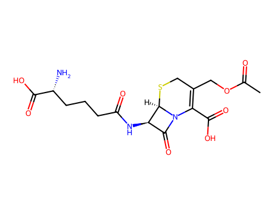
Céphalosporine Cà dessiner
pas de nom commercial au cours
Céphalosporines — Céphalosporine naturelle (modèle ; citée dans le groupe I du tableau récapitulatif)
Noyau : Noyau 7-ACA (cycle β-lactame accolé à un cycle thiazine ; COOH en 4, CH2-O-CO-CH3 en 3) + chaîne latérale HOOC-CH(NH2)-(CH2)3-CO- (acide aminoadipique) sur l'amine en 7
Mécanisme : Mécanisme similaire à celui des pénicillines (p.55) : comme toutes les β-lactamines, inhibition de la synthèse du peptidoglycane de la paroi bactérienne par liaison aux protéines liant la pénicilline (PBP) → effet bactéricide (p.68). Le cycle β-lactame est moins sensible à la dégradation par les β-lactamases que celui des pénicillines, mais reste sensible aux céphalosporinases (p.55).
Indications : Modèle naturel : son profil a amené une vaste pharmacomodulation (inspirée des pénicillines) pour améliorer l'activité (p.54)
Structure-activité
Se distingue des pénicillines par le remplacement du cycle thiazolidine (5 chaînons) par un cycle thiazine (6 chaînons, double liaison 3-4). Numérotation : S1, C2, C3 (acétoxyméthyle), C4 (COOH), N5, C6, C7 (chaîne amide), C8 (C=O β-lactame). C'est le modèle naturel dont l'hydrolyse donne le 7-ACA.
Céphalosporine C = 7-ACA + « queue » d'acide aminoadipique (5 C, NH2 et COOH au bout). Isolée à Cagliari : « C comme Cagliari ».
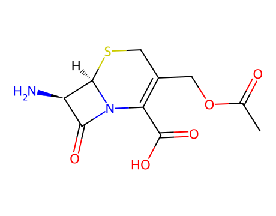
Acide 7-aminocéphalosporaniqueà dessiner
pas de nom commercial au cours
Céphalosporines — Noyau / intermédiaire de synthèse des céphalosporines
Noyau : Cycle β-lactame accolé à un cycle thiazine (dihydrothiazine) ; NH2 en 7 (β, coin plein), COOH en 4, CH2-O-CO-CH3 (acétoxyméthyle) en 3
Mécanisme : Intermédiaire de synthèse (pas utilisé comme médicament).
Structure-activité
Intermédiaire de synthèse des céphalosporines (équivalent du 6-APA pour les pénicillines). Les céphalosporines hémi-synthétiques s'obtiennent en modulant la chaîne latérale portée par le groupement 7-amino. Jusqu'en 1962, il n'existait aucun procédé enzymatique (amidase) ni chimique rentable pour hydrolyser la céphalosporine C en 7-ACA.
6-APA → 7-ACA : un atome de plus dans le cycle soufré (5 → 6 chaînons), donc l'amine passe de la position 6 à la position 7.
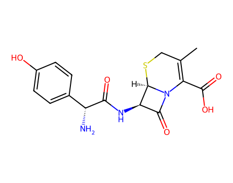
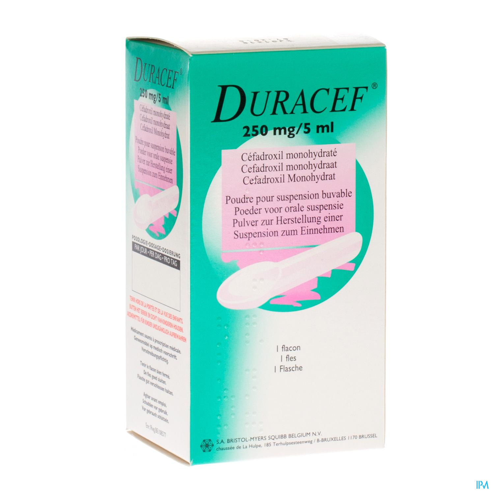
DURACEF®
Céfadroxilà dessiner
DURACEF®, CEFADROXIL SANDOZ®
Céphalosporines — Groupe I (1re génération)
Noyau : Céphème avec CH3 en 3 (à la place de l'acétoxyméthyle du 7-ACA) + chaîne p-hydroxyphénylglycyle (NH2 en α du C=O amide) en 7
Mécanisme : Mécanisme similaire à celui des pénicillines (p.55) : comme toutes les β-lactamines, inhibition de la synthèse du peptidoglycane de la paroi bactérienne par liaison aux protéines liant la pénicilline (PBP) → effet bactéricide (p.68). Le cycle β-lactame est moins sensible à la dégradation par les β-lactamases que celui des pénicillines, mais reste sensible aux céphalosporinases (p.55).
Indications : En ambulatoire, céphalosporines rarement en premier choix : place en cas de résistance documentée à la pénicilline ou aux aminopénicillines, ou d'allergie documentée non IgE-médiée (p.63)
Structure-activité
OH en para du benzène exocyclique (en bleu dans le cours) : c'est ce qui le distingue de la céfalexine. Chaînon en 7 comparable à celui des aminopénicillines (ici celui de l'amoxicilline) (p.58). NH2 en α du lien amide + CH3 en 3 → bonne biodisponibilité orale (règle p.56).
Noyau : Céphème avec CH3 en 3 + chaîne phénylglycyle (NH2 en α du C=O amide) en 7
Mécanisme : Mécanisme similaire à celui des pénicillines (p.55) : comme toutes les β-lactamines, inhibition de la synthèse du peptidoglycane de la paroi bactérienne par liaison aux protéines liant la pénicilline (PBP) → effet bactéricide (p.68). Le cycle β-lactame est moins sensible à la dégradation par les β-lactamases que celui des pénicillines, mais reste sensible aux céphalosporinases (p.55).
Indications : En ambulatoire, céphalosporines rarement en premier choix : place en cas de résistance documentée à la pénicilline ou aux aminopénicillines, ou d'allergie documentée non IgE-médiée (p.63)
Structure-activité
Dérivé non hydroxylé du céfadroxil sur le noyau benzène exocyclique. Chaînon en 7 comparable à celui de l'ampicilline. En remplaçant son 3-CH3 par un 1H-1,2,3-triazol-4-ylthiométhyle, on obtient la céfatrizine (ester du propylèneglycol utilisé per os ; plus commercialisée en Belgique).
céfaLEXine : pas d'OH, comme ampicilline (pas d'OH) ; KEFORAL = « Kef » par voie ORALe.
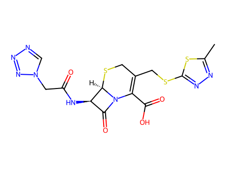
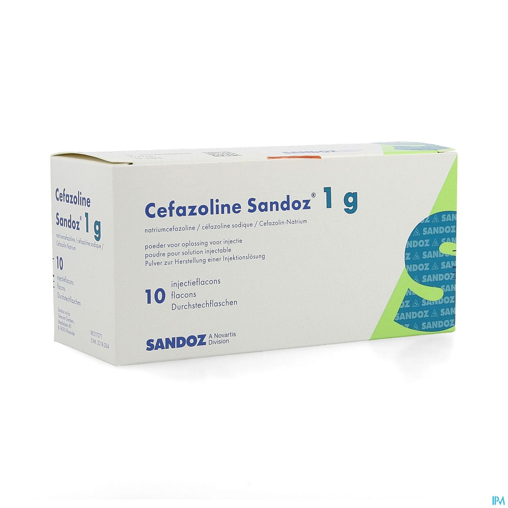
CEFAZOLINE SANDOZ®
Céfazolineà reconnaître
CEFAZOLINE SANDOZ®, CEFAZOLINE VIATRIS®
Céphalosporines — Groupe I (1re génération)
Noyau : Céphème : chaîne tétrazolylacétyle en 7 ; (5-méthyl-1,3,4-thiadiazol-2-yl)thiométhyle en 3 ; COO- Na+ (sel sodique)
Mécanisme : Mécanisme similaire à celui des pénicillines (p.55) : comme toutes les β-lactamines, inhibition de la synthèse du peptidoglycane de la paroi bactérienne par liaison aux protéines liant la pénicilline (PBP) → effet bactéricide (p.68). Le cycle β-lactame est moins sensible à la dégradation par les β-lactamases que celui des pénicillines, mais reste sensible aux céphalosporinases (p.55).
Structure-activité
Seule céphalosporine du groupe I utilisable uniquement par voie parentérale. Structure à relier à la règle de biodisponibilité orale (p.56) : pas de NH2 en α de l'amide, pas de CH3/Cl en 3 (grand thiadiazolylthiométhyle).
céfaZOLine : deux hétérocycles aZOLés (tétrazole + thiadiazole) → pas de biodisponibilité orale.
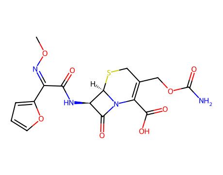
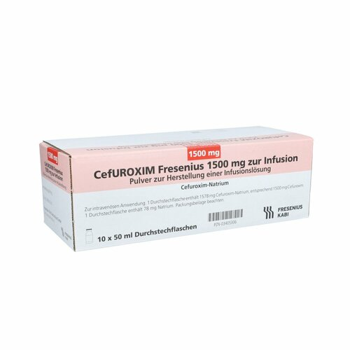
CEFUROXIM FRESENIUS KABI®
Céfuroximeà dessiner
CEFUROXIM FRESENIUS KABI®, ZINACEF®
Céphalosporines — Groupe II (2e génération)
Noyau : Céphème : carbamoyloxyméthyle (CH2-O-CO-NH2) en 3 ; chaîne 2-(furan-2-yl)-2-méthoxyimino-acétyle en 7 ; COOH libre en 4 (le cours dessine la forme axétil : même structure avec l'ester en rouge)
Mécanisme : Mécanisme similaire à celui des pénicillines (p.55) : comme toutes les β-lactamines, inhibition de la synthèse du peptidoglycane de la paroi bactérienne par liaison aux protéines liant la pénicilline (PBP) → effet bactéricide (p.68). Le cycle β-lactame est moins sensible à la dégradation par les β-lactamases que celui des pénicillines, mais reste sensible aux céphalosporinases (p.55).
Indications : C2G par voie i.v. : surtout infections nécessitant une hospitalisation (p.ex. pneumonie sévère, infections intra-abdominales, infections de plaies) et infections nosocomiales (p.58)
Structure-activité
Substituant méthoxyimino en α du C=O amide : chaînon en 7 radicalement différent de ceux de la plupart des céphalosporines des groupes I et II → considéré comme le précurseur des céphalosporines de 3e génération (p.59).
céFURoxime : FURane + méthoxyimino ; le « grand-père » des C3G.
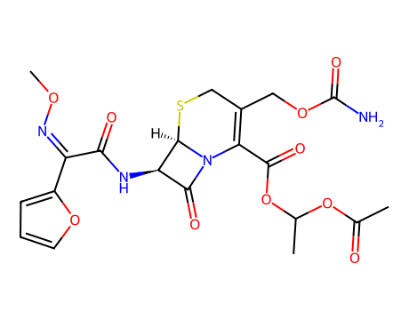
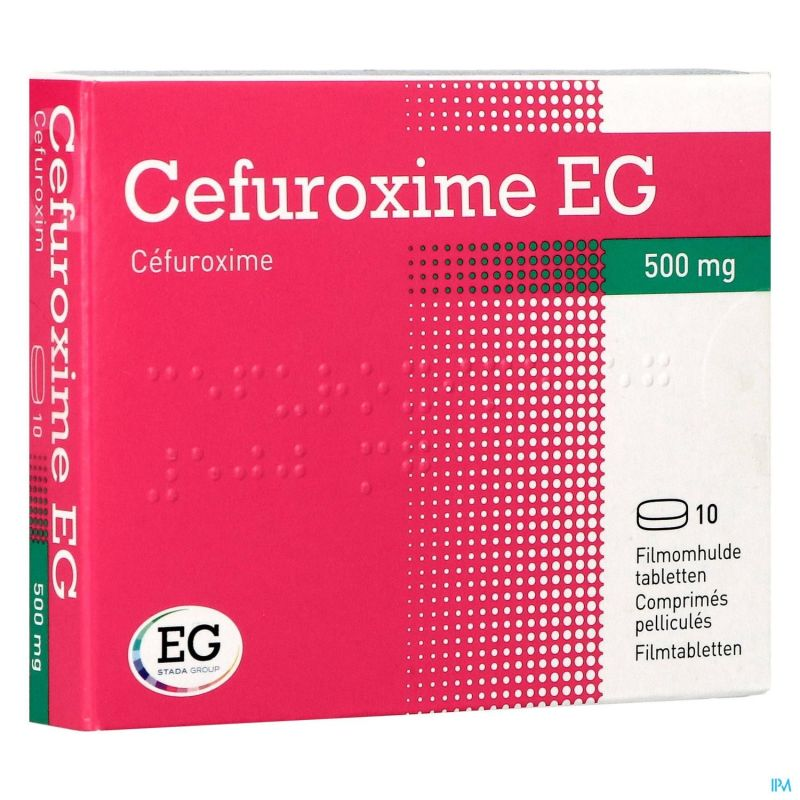
CEFUROXIME EG®
Céfuroxime axétilà dessiner
CEFUROXIME EG®, CEFUROXIME SANDOZ®, ZINNAT®
Céphalosporines — Groupe II (2e génération) — prodrogue orale
Noyau : Céfuroxime dont le COOH en 4 est estérifié par un groupe 1-acétoxyéthyle (-CH(CH3)-O-CO-CH3)
Mécanisme : Prodrogue : libère le céfuroxime. Mécanisme similaire à celui des pénicillines (p.55) : comme toutes les β-lactamines, inhibition de la synthèse du peptidoglycane de la paroi bactérienne par liaison aux protéines liant la pénicilline (PBP) → effet bactéricide (p.68). Le cycle β-lactame est moins sensible à la dégradation par les β-lactamases que celui des pénicillines, mais reste sensible aux céphalosporinases (p.55).
Structure-activité
Ester acétoxyéthylique (axétil, en rouge dans la structure du cours) = prodrogue du céfuroxime administrable par voie orale. Illustre la règle p.56 : l'estérification du COOH améliore souvent la biodisponibilité orale. Méthoxyimino en α du C=O amide (en bleu) comme le céfuroxime.
Dans la structure du céfuroxime axétil, l'ester acétoxyéthylique (axétil) est dessiné en rouge (p.59) : c'est la différence à retenir avec le céfuroxime.
AXétil = l'ester qui donne l'ACCÈS oral. ZINACEF® (inj.) vs ZINNAT® (oral) : NN comme « Nouvelle voie, par la bouche ».
Noyau : Radical ATMO (en bleu sur la céfotaxime) : 2-aminothiazol-4-yl + méthoxyimino (Z) + C=O de l'amide en 7
Mécanisme : Motif structural (pas un médicament) : élargit le spectre vers certains Gram - (p.60).
Structure-activité
Présence systématique dans les céphalosporines du groupe III (exception faite du céfotétan) ; sans doute responsable de l'élargissement du spectre d'activité à certaines souches Gram - difficilement traitables (p.60). Se retrouve aussi dans le céfépime (p.62). Dans la ceftazidime, le méthyle de l'oxime est remplacé par un 2-carboxy-2-propyle (p.61).
A-T-M-O = Amino-Thiazolyl-Méthoxyimino-méthyle : on lit le dessin de gauche à droite.
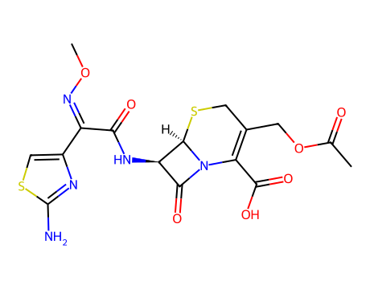
Céfotaximeà reconnaître
CLAFORAN®
Céphalosporines — Groupe III (3e génération)
Noyau : ATMO en 7 + acétoxyméthyle en 3 (comme le 7-ACA)
Mécanisme : Mécanisme similaire à celui des pénicillines (p.55) : comme toutes les β-lactamines, inhibition de la synthèse du peptidoglycane de la paroi bactérienne par liaison aux protéines liant la pénicilline (PBP) → effet bactéricide (p.68). Le cycle β-lactame est moins sensible à la dégradation par les β-lactamases que celui des pénicillines, mais reste sensible aux céphalosporinases (p.55).
Indications : Infections graves résistant aux autres traitements, le plus souvent en milieu hospitalier (p.ex. pneumonie sévère, méningite bactérienne, infection de plaie) (p.59), Infections nosocomiales (p.59), Méningites bactériennes à Haemophilus influenzae (concentrations atteintes dans le liquide céphalo-rachidien) (p.60), En pratique ambulatoire : place seulement dans les IST (p.59)
Structure-activité
Prototype du groupe III : ATMO (en bleu dans le cours) sur la chaîne en 7, le reste est le 7-ACA inchangé (acétoxyméthyle en 3).
céfoTAXime = 7-ACA + ATMO, rien de plus : la C3G « de base ».
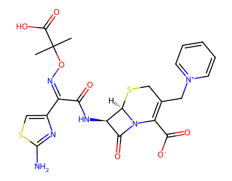
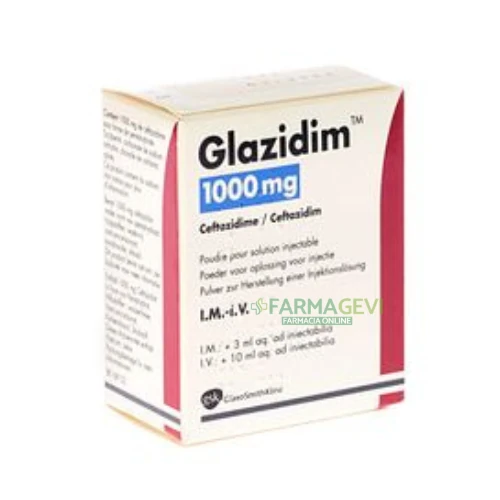
GLAZIDIM®
Ceftazidimeà reconnaître
CEFTAZIDIM VIATRIS®, GLAZIDIM®
Céphalosporines — Groupe III (3e génération)
Noyau : Aminothiazolyl + oxime substituée par un 2-carboxy-2-propyle en 7 ; pyridinium (azote quaternaire) -CH2- en 3 ; COO- (zwitterion)
Mécanisme : Mécanisme similaire à celui des pénicillines (p.55) : comme toutes les β-lactamines, inhibition de la synthèse du peptidoglycane de la paroi bactérienne par liaison aux protéines liant la pénicilline (PBP) → effet bactéricide (p.68). Le cycle β-lactame est moins sensible à la dégradation par les β-lactamases que celui des pénicillines, mais reste sensible aux céphalosporinases (p.55).
Indications : Infections graves résistant aux autres traitements, le plus souvent en milieu hospitalier (p.ex. pneumonie sévère, méningite bactérienne, infection de plaie) (p.59), Infections nosocomiales (p.59), Méningites bactériennes à Haemophilus influenzae (concentrations atteintes dans le liquide céphalo-rachidien) (p.60), En pratique ambulatoire : place seulement dans les IST (p.59)
Structure-activité
Azote quaternaire (pyridinium) → particulièrement soluble dans l'eau ; la forme zwitterionique favoriserait le passage de la paroi bactérienne (p.61). Tableau : + active sur P. aeruginosa (p.68).
cefTAZidime : « TAZ » comme la cage du pyridinium chargé + → zwitterion (soluble).
Noyau : ATMO en 7 + thiométhyle portant une 1,2,4-triazine (N-méthyle, OH, C=O) en 3
Mécanisme : Mécanisme similaire à celui des pénicillines (p.55) : comme toutes les β-lactamines, inhibition de la synthèse du peptidoglycane de la paroi bactérienne par liaison aux protéines liant la pénicilline (PBP) → effet bactéricide (p.68). Le cycle β-lactame est moins sensible à la dégradation par les β-lactamases que celui des pénicillines, mais reste sensible aux céphalosporinases (p.55).
Indications : Infections graves résistant aux autres traitements, le plus souvent en milieu hospitalier (p.ex. pneumonie sévère, méningite bactérienne, infection de plaie) (p.59), Infections nosocomiales (p.59), Méningites bactériennes à Haemophilus influenzae (concentrations atteintes dans le liquide céphalo-rachidien) (p.60), En pratique ambulatoire : place seulement dans les IST (p.59)
Structure-activité
ATMO en 7 comme le céfotaxime ; se reconnaît à l'hétérocycle triazine (N-méthyle, OH, C=O) accroché par un -CH2-S- en 3.
cefTRIaxone : TRIazine en 3 ; et TRIste sang (anémie hémolytique).
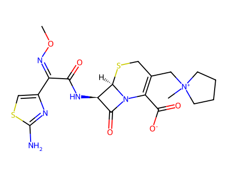
CEFEPIME FRESENIUS KABI®
Céfépimeà reconnaître
CEFEPIME FRESENIUS KABI®
Céphalosporines — Groupe IV (4e génération)
Noyau : ATMO en 7 + N-méthylpyrrolidinium (ammonium quaternaire) -CH2- en 3 ; COO- (zwitterion)
Mécanisme : Mécanisme similaire à celui des pénicillines (p.55) : comme toutes les β-lactamines, inhibition de la synthèse du peptidoglycane de la paroi bactérienne par liaison aux protéines liant la pénicilline (PBP) → effet bactéricide (p.68). Le cycle β-lactame est moins sensible à la dégradation par les β-lactamases que celui des pénicillines, mais reste sensible aux céphalosporinases (p.55).
Indications : Uniquement infections nécessitant une hospitalisation (p.ex. pneumonie sévère, infection intra-abdominale, infection de plaie) et infections nosocomiales (p.62)
Structure-activité
Seul représentant du groupe IV : se différencie du groupe III par une sensibilité nettement moindre à un certain nombre de β-lactamases (p.56). Forme zwitterionique au pH physiologique (ammonium quaternaire + COO-) favorable au passage de la paroi bactérienne (p.62).
céFÉPIME = 4 syllabes → groupe IV ; pyrrolidinium + : zwitterion comme la ceftazidime.
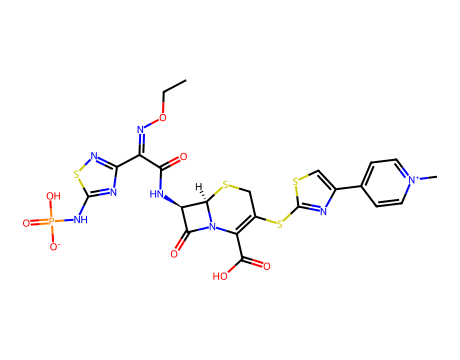
ZINFORO®
Ceftarolineà reconnaître
ZINFORO®
Céphalosporines — Groupe V (5e génération)
Noyau : Chaîne (5-phosphonoamino-1,2,4-thiadiazol-3-yl)-éthoxyimino-acétyle en 7 ; en 3, S-thiazolyl portant un N-méthylpyridinium
Mécanisme : Mécanisme similaire à celui des pénicillines (p.55) : comme toutes les β-lactamines, inhibition de la synthèse du peptidoglycane de la paroi bactérienne par liaison aux protéines liant la pénicilline (PBP) → effet bactéricide (p.68). Le cycle β-lactame est moins sensible à la dégradation par les β-lactamases que celui des pénicillines, mais reste sensible aux céphalosporinases (p.55).
Indications : Infections graves nécessitant une hospitalisation (p.ex. infections sévères de la peau et des tissus mous) (p.62), Infections nosocomiales (p.62)
Structure-activité
Spectre proche du céfotaxime MAIS active sur les Staphylococcus aureus méticillino-résistants (MRSA/SARM) et les S. pneumoniae résistants à la pénicilline (p.56, 62).
ceftaroline = groupe V : la seule céphalosporine du cours active sur les MRSA (ZINFORO® → « fort » contre le SARM).
ZEBRAXA® (+ tazobactam)
Ceftolozaneà reconnaître
ZEBRAXA® (+ tazobactam)
Céphalosporines — Céphalosporine récente associée au tazobactam (présentée avec le groupe V, p.63)
Noyau : Aminothiadiazolyl + oxime à 2-carboxy-2-propyle en 7 (comme la ceftazidime, mais thiadiazole) ; en 3, pyrazolium (N-méthyle, NH2, uréido-éthylamine) ; COO- (zwitterion)
Mécanisme : Mécanisme similaire à celui des pénicillines (p.55) : comme toutes les β-lactamines, inhibition de la synthèse du peptidoglycane de la paroi bactérienne par liaison aux protéines liant la pénicilline (PBP) → effet bactéricide (p.68). Le cycle β-lactame est moins sensible à la dégradation par les β-lactamases que celui des pénicillines, mais reste sensible aux céphalosporinases (p.55). Associé au tazobactam, inhibiteur de β-lactamases (p.67).
Indications : Infections intra-abdominales compliquées (p.63), Pneumonies nosocomiales (p.63), Infections des voies urinaires compliquées, y compris pyélonéphrites, en cas d'hospitalisation (p.63)
Structure-activité
Toujours associé au tazobactam (ZEBRAXA®). Réservé, en cas d'hospitalisation, aux situations de multirésistance : traitement de dernier recours (p.63).
ZEBRAXA = ceftoloZanE + tazobactam : le « zèbre » rare qu'on ne sort qu'en dernier recours.
Carbapénèmes
Noyau carbapénèmeà dessiner
pas de nom commercial au cours
Carbapénèmes — Noyau de base
Noyau : Bicycle β-lactame (C6-C7=O, N1) + cycle à 5 sans soufre avec double liaison 2-3 ; COOH en 2
Mécanisme : Noyau de base des carbapénèmes (β-lactames).
Structure-activité
Pas d'atome de soufre ; double liaison en position 2-3 comme les céphalosporines ; très instable chimiquement. Les variations portent sur les chaînes latérales en 3 et en 6 (p.64).
CARBA-pénème : le S est remplacé par un CARBone (CH2).
MERONEM®
Méropénèmeà dessiner
MERONEM®
Carbapénèmes — Carbapénème (utilisable seul)
Noyau : Noyau carbapénème + 1-hydroxyéthyle en 6 (hachuré) + CH3 en 4 (coin plein) + S-pyrrolidinyle portant un -CO-N(CH3)2 en 3
Mécanisme : β-lactame : inhibition de la synthèse du peptidoglycane (liaison aux PBP) → bactéricide (p.68) ; grande résistance à la plupart des β-lactamases (p.65).
Indications : Infections par des micro-organismes Gram + et Gram - (p.65), Infections à germes résistants aux céphalosporines du 3e ou 4e groupe (p.ex. Enterobacter, Serratia, Pseudomonas) (p.65), Réservé aux infections sévères (tableau p.68)
Structure-activité
Plus stable que l'imipénème : peut être utilisé seul, sans cilastatine (p.64). Se distingue de l'imipénème par le CH3 en 4 et la chaîne pyrrolidine-diméthylcarboxamide en 3.
MÉROpénème = « MÊme » qu'imipénème mais autonome (pas besoin de cilastatine) — MERONEM, il est « mûr », il se débrouille seul.
TIENAM® (+ cilastatine)
Imipénèmeà reconnaître
TIENAM® (+ cilastatine)
Carbapénèmes — Carbapénème (associé à la cilastatine)
Noyau : Noyau carbapénème + 1-hydroxyéthyle en 6 + S-CH2-CH2-NH-CH=NH (formimidoyl) en 3 ; pas de CH3 en 4
Mécanisme : β-lactame (inhibition de la synthèse du peptidoglycane) ; grande résistance à la plupart des β-lactamases (p.65, 68).
Structure-activité
Mentionné en gras (pas en bleu) dans le cours. Métabolisé par ouverture du cycle β-lactame durant la phase d'excrétion urinaire, après filtration glomérulaire → associé à la cilastatine, qui inhibe de manière réversible la déhydropeptidase rénale responsable de son catabolisme (p.64).
IMIpénème a besoin d'un ami : la CILastatine (« cil » qui protège l'œil… et le rein).
Monobactames
CAYSTON®
Aztréonamà reconnaître
AZACTAM®, CAYSTON®
Monobactames — Monobactame de synthèse
Noyau : Azétidin-2-one monocyclique (β-lactame seul) portant N-SO3- et CH3 en 4 ; chaîne aminothiazolyl + oxime à 2-carboxy-2-propyle en 3 (comme la ceftazidime)
Mécanisme : β-lactame : inhibition de la synthèse du peptidoglycane (p.68).
Indications : Inhalation chez les patients atteints de mucoviscidose en cas d'infection chronique par Pseudomonas aeruginosa (p.66), Alternative en cas d'allergie aux autres β-lactamines (tableau p.68)
Structure-activité
Monobactame : un seul cycle β-lactame (pas de cycle accolé) → démontre qu'une structure β-lactamique bicyclique n'est pas indispensable à l'activité antibiotique (p.66).
aZtréonAM : de A à Z, un seul anneau (MONO) et seulement les Gram - aérobies.
Inhibiteurs de β-lactamases — β-lactame inhibiteur (non antibiotique)
Noyau : Cycle β-lactame accolé à un cycle à 5 contenant un O (à la place du S des pénicillines) ; =CH-CH2-OH (2-hydroxyéthylidène) en 3 ; COOH ; pas de chaîne amide latérale
Mécanisme : Inhibiteur irréversible des β-lactamases (enzymes qui ouvrent le cycle β-lactame) → potentialise l'effet de la β-lactamine associée et élargit son emploi aux souches devenues résistantes par production de β-lactamases (p.67). Tableau : inhibe de nombreuses β-lactamases plasmidiques, restaure l'activité des pénicillines sensibles (p.68).
Indications : En association avec l'amoxicilline (p.67)
Structure-activité
β-lactame dont l'activité antibiotique est très faible, mais puissant inhibiteur irréversible des β-lactamases produites par les Gram + et Gram - (p.67). Ce n'est pas un antibiotique : il potentialise l'amoxicilline.
Le sulbactam sodique et l'acide clavulanique sont de puissants inhibiteurs IRRÉVERSIBLES des β-lactamases (« irréversibles » en rouge, p.67).
CLAVulanique = la CLÉ (clavis) qui verrouille définitivement (irréversible) la β-lactamase.
Sulbactamà reconnaître
pas de nom commercial au cours
Inhibiteurs de β-lactamases — Sulfone pénicillanique
Noyau : Noyau pénam (β-lactame + thiazolidine, 2 CH3 en 2, COO- en 3) dont le S est oxydé en sulfone (SO2) ; pas de chaîne amide en 6
Mécanisme : Inhibiteur irréversible des β-lactamases (p.67).
Structure-activité
Mentionné en gras (pas en bleu). β-lactame à activité antibiotique très faible mais puissant inhibiteur irréversible des β-lactamases des Gram + et Gram - (p.67).
Le sulbactam sodique et l'acide clavulanique sont de puissants inhibiteurs IRRÉVERSIBLES des β-lactamases (p.67).
SULbactam = SULfone (SO2) sur le pénam.
Chloramphénicol et thiamphénicol, tétracyclines, macrolides, aminosides et lincosamides syllabus p. 69-91
Le chloramphénicol et le thiamphénicol ont une activité antibiotique de type bactériostatique à large spectre : ils arrêtent la multiplication bactérienne sans tuer directement les germes. Ils agissent comme inhibiteurs de la traduction.
Pourquoi un inhibiteur de la traduction est-il plutôt bactériostatique ?
Il bloque la synthèse des protéines (adjonction de l'aminoacyl-tRNA à la chaîne naissante) : la bactérie ne peut plus se multiplier, mais elle n'est pas lysée.
Procaryotes : grande sous-unité 50S (ARNr 23S + 5S) et petite sous-unité 30S (ARNr 16S). Eucaryotes : grande sous-unité 60S (ARNr 28S, 5.8S, 5S) et petite 40S (ARNr 18S). Ces différences permettent de concevoir des antibiotiques qui agissent spécifiquement sur les ribosomes procaryotes sans effet chez les eucaryotes.
Pourquoi peut-on bloquer le ribosome bactérien sans bloquer le ribosome humain ?
Parce que les ARNr et les sous-unités diffèrent (50S/30S vs 60S/40S) : la cible bactérienne n'a pas d'équivalent identique chez l'hôte.
Sous-unité 50S vs sous-unité 30S
Inhibiteurs de la sous-unité 50S : macrolides, chloramphénicol et thiamphénicol, acide fusidique (et lincosamides, p.89). Inhibiteurs de la sous-unité 30S : tétracyclines et aminosides. Tous sont des inhibiteurs de la traduction.
Pourquoi est-il utile de classer ces antibiotiques par sous-unité ribosomale ?
Cela regroupe des familles chimiquement très différentes selon leur cible : 50S = macrolides, phénicolés, acide fusidique, lincosamides ; 30S = tétracyclines et aminosides — un moyen rapide de retrouver le mécanisme à l'examen.
Toxicité aplasiante et idiosyncrasique du chloramphénicol
Le chloramphénicol est aplasiant (aplasie médullaire) : accidents rares (~0,1 %) mais presque toujours mortels, d'où son retrait per os dans l'UE. C'est un agent idiosyncrasique : toxicité imprévisible, sans rapport entre dose et effet (une seule exposition peut être fatale) ni entre effet et durée d'exposition (aplasie possible longtemps après l'arrêt).
Pourquoi une réduction de dose ne protège-t-elle pas contre l'aplasie au chloramphénicol ?
Parce que l'effet idiosyncrasique n'est pas dose-dépendant : il dépend d'une disposition propre au patient (déficience enzymatique ou auto-sensibilisation), si bien qu'une seule exposition peut suffire.
Agranulocytose
État anormal caractérisé par la disparition aiguë et sélective de la lignée des polynucléaires (un type de globules blancs) dans le sang. C'est un des effets médullaires du chloramphénicol et du thiamphénicol.
Pourquoi l'agranulocytose est-elle dangereuse ?
Sans polynucléaires, le patient perd une défense majeure contre les infections bactériennes.
Thrombocytopénie (thrombopénie)
Abaissement du nombre de plaquettes sanguines. Effet indésirable des phénicolés (toxicité médullaire) et aussi des tétracyclines.
Pourquoi surveille-t-on l'hémogramme sous chloramphénicol/thiamphénicol ?
Parce que leur toxicité médullaire (anémie aplastique, agranulocytose, thrombocytopénie) peut être mortelle : l'hémogramme permet de la détecter.
Tétracyclines : couleur jaune et caractère amphotère
Les tétracyclines sont jaunes (elles absorbent dans le visible). Elles sont amphotères : groupement aminé basique en position 4 et fonctions énols (vinylogues d'acide carboxylique) et phénol, acides faibles. Elles se dégradent en milieu alcalin (pH > 8,5) et s'épimérisent en C4 en solution acide (4 < pH < 8) en épitétracycline peu active.
Pourquoi les tétracyclines sont-elles amphotères ?
Parce qu'elles portent à la fois une amine basique (N(CH3)2 en 4) et des fonctions acides faibles (énols et phénol).
Chélates stables et agents complexants
Les tétracyclines forment des chélates stables et difficilement résorbables avec les cations trivalents (Fe3+) ou divalents (Cu2+, Zn2+, Ca2+). On évite donc de les administrer avec des aliments riches en calcium. Les formes orales sont souvent associées à des agents complexants (métaphosphates) qui complexent les métaux et protègent ainsi les tétracyclines.
Pourquoi conseiller de ne pas prendre une tétracycline avec un verre de lait ?
Le calcium forme avec la tétracycline un chélate stable, non résorbé : l'antibiotique n'est plus absorbé et le traitement perd son efficacité.
La doxycycline est de loin la tétracycline la plus utilisée
Phrase soulignée du cours : parmi les tétracyclines, la doxycycline (VIBRATAB®, DOXYCYCLINE EG®/SANDOZ®) est de loin la plus utilisée (maladie de Lyme, prévention du paludisme, acné).
Pourquoi la doxycycline est-elle préférée à la minocycline pour l'acné ?
Le cours indique que la doxycycline (et la lymécycline) seraient aussi efficaces et peut-être plus sûres que la minocycline, dont le risque d'atteinte hépatique est plus élevé.
Glycylcyclines
Analogues de tétracyclines développés pour contrer les mécanismes de résistance aux tétracyclines (notamment les pompes d'efflux). La tigécycline (TYGACIL®), dérivé de la minocycline, en est le premier représentant : groupement glycylamido encombré en position 9.
Pourquoi l'ajout d'un groupement encombré en 9 restaure-t-il l'activité ?
L'encombrement réduit la susceptibilité aux mécanismes de résistance aux tétracyclines classiques (pompes d'efflux), tout en gardant le même mode d'action.
Indications ambulatoires des tétracyclines : maladie de Lyme, paludisme, acné
La doxycycline est utilisée dans la maladie de Lyme au stade précoce et pour la prévention du paludisme chez le voyageur (résistance, CI ou intolérance à la méfloquine). Les tétracyclines sont parfois utilisées à faible posologie pendant plusieurs semaines dans certains types d'acné, surtout après échec d'un traitement topique.
Pourquoi la doxycycline est-elle adaptée à la maladie de Lyme ?
La maladie de Lyme est due à Borrelia burgdorferi (spirochète transmis par les tiques) et le spectre des tétracyclines couvre les Borrelia.
Maladie de Lyme (borréliose)
Maladie infectieuse due à Borrelia burgdorferi, transmise par les tiques. Une tache rouge s'étendant de façon centrifuge autour de la piqûre peut apparaître entre 3 jours et 1 mois après ; une phase secondaire (atteintes articulaires, cutanées, cardiaques, neurologiques, fatigue) peut survenir des semaines à des années plus tard.
Pourquoi traiter dès le stade précoce ?
La lésion peut passer inaperçue et une phase secondaire potentiellement grave (complications cardiaques parfois mortelles) peut suivre ; la doxycycline est indiquée au stade précoce.
Tétracyclines : enfant < 8 ans, fin de grossesse, allaitement
Grande affinité pour le tissu osseux : chez l'enfant de moins de 8 ans, dyschromies dentaires et hypoplasies de l'émail. Contre-indiquées chez la femme enceinte en fin de grossesse et chez la femme qui allaite (anomalies dentaires chez l'enfant).
Pourquoi les tétracyclines colorent-elles les dents de l'enfant ?
Elles chélatent le calcium et ont une grande affinité pour le tissu osseux/dentaire en formation ; or elles sont jaunes.
Macrolides : définition structurale
Macrocycle lactonique polyhydroxylé de 14, 15 ou 16 atomes, substitué (sauf kétolides) par un aminoose (liaison osidique acétal) et un ose. Actifs sur les Gram + (très peu sur les Gram −), spectre analogue à la pénicilline G, actifs per os et peu toxiques. Fixation à la sous-unité 50S.
Pourquoi les macrolides sont-ils classés parmi les « antibiotiques osidiques » ?
Parce que leur macrolactone porte des sucres (un aminoose comme la désosamine et un ose comme le cladinose) fixés par des liaisons osidiques.
Néomacrolides
Dérivés de l'érythromycine (roxithromycine, clarithromycine, azithromycine) : mieux absorbés per os, demi-vie plus longue (administration moins fréquente), spectre similaire et moins d'effets indésirables gastro-intestinaux. Ils remplacent de plus en plus l'érythromycine par voie orale.
Pourquoi l'érythromycine orale est-elle de plus en plus remplacée par un néomacrolide ?
Les néomacrolides sont mieux absorbés, s'administrent moins souvent grâce à leur demi-vie plus longue et donnent moins de troubles digestifs, pour un spectre similaire.
Ulcère gastrique et Helicobacter pylori
Pour l'ulcère gastrique avec présence établie d'Helicobacter pylori, on préconise l'association de deux antibiotiques à fortes doses (amoxicilline + clarithromycine) et d'oméprazole (inhibiteur de la pompe à protons).
Pourquoi associer un IPP aux deux antibiotiques ?
L'oméprazole réduit l'acidité gastrique et participe au traitement de l'ulcère, tandis que l'association amoxicilline + clarithromycine éradique H. pylori.
Spiramycine et toxoplasmose pendant la grossesse
La spiramycine (ROVAMYCINE®), macrolide à 16 atomes, peut être utile dans le traitement de la toxoplasmose pendant la grossesse.
Pourquoi retenir la spiramycine chez la femme enceinte ?
C'est l'indication spécifique citée par le cours pour ce macrolide : la toxoplasmose pendant la grossesse.
Kétolides (télithromycine)
Chimiquement apparentés aux macrolides : une fonction cétone remplace un sucre (le cladinose, cétone en C3) de l'érythromycine. La télithromycine possède le plus d'effets indésirables graves (hépatotoxicité, aggravation de myasthénie, troubles de l'accommodation, allongement du QT).
Pourquoi les kétolides font-ils exception à la règle « macrolide = aminoose + ose » ?
Parce que le cladinose (l'ose neutre) y est remplacé par une cétone en C3 : il ne reste que l'aminoose.
La fidaxomicine (DIFICLIR®), lactone macrocyclique de 18 atomes, est bactéricide et inhibe l'ARN polymérase bactérienne (site distinct des rifamycines). Administrée per os, peu absorbée, elle agit localement dans le tube digestif contre C. difficile. Les autres antibiotiques de cette indication sont le métronidazole et la vancomycine.
Pourquoi une faible absorption digestive est-elle ici un avantage ?
L'infection est localisée dans l'intestin : un antibiotique peu absorbé y reste concentré et agit localement.
Macrolides chez les patients allergiques à la pénicilline
Les macrolides peuvent avoir une place chez des patients allergiques à la pénicilline si un antibiotique s'avère nécessaire dans une affection telle l'angine à streptocoques. Ils ne sont pas de premier choix pour le traitement empirique des infections à pneumocoques et à H. influenzae (souvent résistants).
Pourquoi un macrolide peut-il remplacer la pénicilline dans l'angine ?
Leur spectre est analogue à celui de la pénicilline G (Gram +, streptocoques), tout en étant chimiquement sans rapport avec les β-lactames.
Effets indésirables des macrolides : hépatite, ototoxicité, QT
Érythromycine et la majorité des macrolides : malaises gastriques, altérations hépatiques réversibles voire hépatite cholestatique, ototoxicité à doses élevées, effets centraux, allongement de l'intervalle QT avec risque de torsades de pointes, surtout en cas d'injection i.v. trop rapide d'érythromycine.
Pourquoi l'injection i.v. d'érythromycine doit-elle être lente ?
Une injection trop rapide favorise l'allongement du QT et les torsades de pointes.
Nombreux risques d'interactions médicamenteuses (CYP3A4)
L'érythromycine inhibe le CYP3A4 et ralentit le métabolisme hépatique de ses substrats : théophylline, carbamazépine, ciclosporine, cisapride, disopyramide, ergotamine et autres dérivés de l'ergot. Avec l'ergotamine : vasoconstriction et gangrène.
L'érythromycine bloque le CYP3A4 qui métabolise l'ergotamine : celle-ci s'accumule et provoque une vasoconstriction pouvant aller jusqu'à la gangrène.
Amino(glyco)sides : définition et toxicité
Polyols cycliques (cyclitols) dont deux OH sont remplacés par une amine ou une guanidine. Mal résorbés (voie parentérale ou locale), généralement oto- et néphrotoxiques, avec une dose toxique proche de la dose thérapeutique. Actifs sur les Gram − et quelques Gram + pénicillo-résistants ; réservés aux infections sévères à Gram −.
Pourquoi les aminosides ne se donnent-ils pas per os pour une infection systémique ?
Ce sont des polycations dans les milieux biologiques : leur absorption digestive est inférieure à 1 %.
La marge thérapeutique-toxique est étroite
Phrase rouge du cours : chez les aminosides, la marge entre dose thérapeutique et dose toxique est étroite. Ototoxicité et néphrotoxicité peuvent apparaître, parfois très tardivement ; ils doivent être évités pendant la grossesse. C'est aussi pourquoi gentamicine et tobramycine sont utilisées en usage externe ophtalmique.
Pourquoi la marge étroite oriente-t-elle l'usage en ville vers les formes locales (collyres, implant) ?
En usage local, l'exposition systémique est faible, ce qui limite le risque oto- et néphrotoxique alors que la dose efficace est proche de la dose toxique.
Distribution extracellulaire : toxicité rénale et cochléaire
La distribution des aminosides est essentiellement extracellulaire : de fortes concentrations sont trouvées dans le rein, l'endolymphe et la périlymphe de l'oreille interne, ce qui explique leur toxicité rénale et cochléaire. Concentration dans le LCR < 10 % de celle du plasma ; élimination urinaire, accumulation en insuffisance rénale ; posologie selon la masse maigre.
Pourquoi adapter la posologie d'un aminoside à la masse maigre et non au poids total ?
Parce que les aminosides ne diffusent pas dans les tissus graisseux (distribution extracellulaire).
Traces d'antibiotiques dans les vaccins
De nombreux vaccins contiennent des traces d'antibiotiques : gentamicine, néomycine, polymyxine B ou streptomycine.
Pourquoi le pharmacien doit-il connaître cette information ?
Pour un patient allergique à l'un de ces antibiotiques, il faut vérifier la composition du vaccin.
Néomycine et paromomycine : très mal résorbées, antiseptique intestinal
Néomycine et paromomycine (deux aminoglucosides + un sucre + un aminohydroxycyclohexane) sont très mal résorbées et trop toxiques par voie parentérale ; seul le sulfate de paromomycine est encore utilisé comme antiseptique intestinal (GABBRORAL®). La néomycine se retrouve en usage otique et ophtalmique en association.
Pourquoi un aminoside mal résorbé peut-il servir d'antiseptique intestinal ?
Pris per os, il reste dans la lumière intestinale où il agit localement, sans passage systémique notable.
Aminosides à éviter pendant la grossesse
En raison de leurs effets toxiques (néphrotoxicité et ototoxicité), les amino(glyco)sides doivent être évités pendant la grossesse.
Pourquoi éviter un aminoside chez la femme enceinte ?
À cause de leur néphrotoxicité et de leur ototoxicité.
Positionnement des aminosides
Actifs sur les Gram − aérobies, les staphylocoques et certaines mycobactéries, pas sur la plupart des Gram + ni les anaérobies. Plus utilisés qu'exceptionnellement en monothérapie : associés à une pénicilline ou une céphalosporine (infections graves à entérobactéries, Pseudomonas aeruginosa, certaines endocardites à streptocoques/entérocoques).
Pourquoi associer un aminoside à une β-lactamine ?
Le cours réserve les aminosides aux infections graves où ils sont associés à une pénicilline ou céphalosporine ; ils ne sont plus utilisés qu'exceptionnellement seuls.
Drogues chimiquement apparentées à la streptomycine
Kanamycine, gentamicine, amikacine, dibékacine, tobramycine et netilmicine sont chimiquement apparentées à la streptomycine et ont des indications similaires : deux aminoglucosides reliés par un aminohydroxycyclohexane.
Pourquoi les regrouper avec la streptomycine ?
Ils partagent la structure aminoglycosidique (sucres aminés + cyclitol aminé) et le même mécanisme (30S).
Lincosamides : ribosome 50S et acné
Les lincosamides (lincomycine, clindamycine) ont une activité très proche des macrolides : ils inhibent la synthèse protéique au niveau du ribosome 50S. La clindamycine est aussi utilisée en usage externe dans le traitement de l'acné (DALACIN®, ZINDACLIN®).
Pourquoi les lincosamides ressemblent-ils aux macrolides en clinique ?
Même cible (50S) et à peu près le même spectre sur les coques Gram + ; comme les macrolides, aucune activité contre les entérocoques.
Clindamycine : infections de la peau/tissus mous et morsures
Indications ambulatoires : infections de la peau et des tissus mous (impétigo, cellulite, érysipèle) chez les patients allergiques à la pénicilline (IgE-médiée) lorsqu'une antibiothérapie systémique est indiquée ; morsures de chats, de chiens ou d'humains chez les enfants allergiques à la pénicilline (IgE-médiée).
Pourquoi la clindamycine apparaît-elle comme alternative dans ces situations ?
Elle couvre les coques Gram + de la peau et n'est pas une β-lactamine : utile chez l'allergique à la pénicilline.
Le chloramphénicol n'est plus utilisé qu'en usage externe, notamment en ophtalmologie (collyre, DE ICOL® avec dexaméthasone). Gentamicine (DEXAGENTA POS®) et tobramycine (TOBREX®, TOBRADEX®) sont utilisées en usage ophtalmique en raison de leurs effets indésirables et de leur marge thérapeutique étroite.
Pourquoi des antibiotiques toxiques par voie générale restent-ils utilisés en collyre ?
En usage local, l'exposition systémique est minime : on garde l'efficacité locale sans la toxicité générale.
Chloramphénicol et thiamphénicol
CHLORAMPHENICOL® (collyre)
Chloramphénicolà dessiner
CHLORAMPHENICOL® (collyre), DE ICOL® (+ dexaméthasone phosphate)
Mécanisme : Se fixe à la sous-unité ribosomale 50S, sur un site accepteur proche mais différent de celui de la clindamycine et des macrolides ; empêche l'adjonction d'un aminoacyl-tRNA à la chaîne polypeptidique naissante → inhibiteur de la traduction (bactériostatique).
Indications : Usage systémique réservé à des cas bien précis (typhoïde, paratyphoïde, méningites) en raison de la toxicité médullaire ; plus disponible en spécialité pour usage systémique, Usage externe en ophtalmologie : collyre (CHLORAMPHENICOL®), ou associé à la dexaméthasone (DE ICOL®), Remarque du cours : utilisé en vrac dans les aquariums (1 g/100 litres) pour traiter les poissons
Structure-activité
Groupement NO2 en para du phényle (le thiamphénicol porte un CH3-SO2- à la place). Seul l'isomère D-thréo est actif. Le palmitate (ester CH3-(CH2)14-COO- sur l'OH primaire) masque l'amertume per os : c'est une prodrogue, inactive en usage externe.
Noyau : Même squelette que le chloramphénicol (propane-1,3-diol D-thréo N-dichloroacétylé) avec un 4-méthylsulfonylphényle
Mécanisme : Comme le chloramphénicol : fixation à la sous-unité 50S, empêche l'adjonction d'un aminoacyl-tRNA à la chaîne naissante (bactériostatique).
Indications : Infections graves par des micro-organismes résistants aux autres antibiotiques (risque de toxicité médullaire non exclu), Aérosol FLUIMUCIL ANTIBIOTIC® : antibiotique bactériostatique + acétylcystéine mucolytique
Structure-activité
Analogue méthylsulfonylé (CH3-SO2-) du chloramphénicol : le SO2CH3 remplace le NO2. Mêmes propriétés physico-chimiques, même spectre et même mécanisme ; toxicité médullaire moindre.
THIAmphénicol : le « thio » rappelle le soufre du SO2CH3.
Tétracyclines
Squelette des tétracyclinesà dessiner
pas de nom commercial au cours
Tétracyclines — Squelette commun
Noyau : Noyau naphtacène (4 cycles accolés A-B-C-D, numérotation 1 à 12) partiellement hydrogéné : N(CH3)2 en 4, énols (vinylogues d'acide carboxylique) en 1-3 et 11-12, OH en 12a, phénol en 10, carboxamide CONH-R2 en 2, substituants variables R5, R6, R6' et R7.
Mécanisme : Concentration dans le cytoplasme bactérien par un transport actif transmembranaire (absent chez les êtres supérieurs), puis fixation à la sous-unité ribosomale 30S : s'opposent à la fixation de l'aminoacyl-tRNA sur l'accepteur du complexe mRNA-ribosome → arrêt de la synthèse protéique (bactériostatique).
Indications : Doxycycline : maladie de Lyme au stade précoce, Doxycycline : prévention du paludisme chez le voyageur, Certains types d'acné (faible posologie pendant plusieurs semaines, surtout après échec d'un traitement topique)
Structure-activité
Tableau p.76 — tétracycline : R7=H, R6'=CH3, R6=OH, R5=H, R2=H ; doxycycline : OH en R5 au lieu de R6 ; oxytétracycline : OH en R5 et R6 ; chlortétracycline : Cl en R7 ; minocycline : N(CH3)2 en R7 (R6=R6'=H) ; lymécycline : R2 = CH2-NH-CH(COOH)-(CH2)4-NH2 (lysine). Caractère amphotère : amine basique en 4 + énols et phénol (acides faibles). Dégradation rapide en milieu alcalin (pH > 8,5) ; en solution acide (4 < pH < 8), épimérisation du C4 → épitétracycline peu active.
Tétra = 4 cycles ; la position 4 porte l'amine (N(CH3)2) qui épimérise en milieu acide.
Mécanisme : Concentration dans le cytoplasme bactérien par un transport actif transmembranaire (absent chez les êtres supérieurs), puis fixation à la sous-unité ribosomale 30S : s'opposent à la fixation de l'aminoacyl-tRNA sur l'accepteur du complexe mRNA-ribosome → arrêt de la synthèse protéique (bactériostatique).
Indications : Maladie de Lyme au stade précoce, Prévention du paludisme chez le voyageur en cas de résistance, de contre-indication ou d'intolérance à la méfloquine, Parfois utilisée dans le paludisme, souvent en association à la quinine, Acné : aussi efficace et peut-être plus sûre que la minocycline
Structure-activité
Par rapport à la tétracycline : hydroxyle en R5 au lieu de R6.
DOXY = la star (de loin la plus utilisée) ; son OH a « glissé » de 6 en 5.
Mécanisme : Concentration dans le cytoplasme bactérien par un transport actif transmembranaire (absent chez les êtres supérieurs), puis fixation à la sous-unité ribosomale 30S : s'opposent à la fixation de l'aminoacyl-tRNA sur l'accepteur du complexe mRNA-ribosome → arrêt de la synthèse protéique (bactériostatique).
Indications : Usage dermatologique et ophtalmique uniquement, en association (polymyxine B ou hydrocortisone)
Structure-activité
Possède un OH en R5 et en R6 (« oxy » = un OH de plus que la tétracycline).
Mécanisme : Concentration dans le cytoplasme bactérien par un transport actif transmembranaire (absent chez les êtres supérieurs), puis fixation à la sous-unité ribosomale 30S : s'opposent à la fixation de l'aminoacyl-tRNA sur l'accepteur du complexe mRNA-ribosome → arrêt de la synthèse protéique (bactériostatique).
Indications : Acné : utilisée de manière prolongée (un à quelques mois)
Structure-activité
Groupement diméthylamino en R7 (et ni CH3 ni OH en 6). Molécule de départ de la tigécycline.
MINO → aMINO en 7 (N(CH3)2).
TETRALYSAL®
Lymécyclineà reconnaître
TETRALYSAL®
Tétracyclines
Noyau : Squelette tétracycline avec R2 = CH2-NH-CH(COOH)-(CH2)4-NH2 (lysine) sur le carboxamide
Mécanisme : Concentration dans le cytoplasme bactérien par un transport actif transmembranaire (absent chez les êtres supérieurs), puis fixation à la sous-unité ribosomale 30S : s'opposent à la fixation de l'aminoacyl-tRNA sur l'accepteur du complexe mRNA-ribosome → arrêt de la synthèse protéique (bactériostatique).
Indications : Acné : utilisée de manière prolongée (un à quelques mois) ; aussi efficace et peut-être plus sûre que la minocycline
Structure-activité
Présence d'une lysine en R2 : augmente la solubilité dans l'eau au pH physiologique ; peut être considérée comme une prodrogue de la tétracycline.
Noyau : Minocycline + groupement glycylamido encombré en position 9
Mécanisme : Même mode d'action que les tétracyclines (sous-unité 30S).
Indications : Traitement hospitalier des infections bactériennes cutanées et intra-abdominales compliquées
Structure-activité
Dérivé de la minocycline : ajout en position 9 d'un groupement encombré de type glycylamido (le texte parle de N,N-diméthylglycylamido ; la structure dessinée p.77 porte un tert-butylaminoacétamido), les autres substituants restant identiques. Cet encombrement réduit la sensibilité aux mécanismes de résistance (pompes d'efflux).
TIGE-cycline : une « tige » encombrante greffée en 9 sur la minocycline.
Macrolides
ERYTHROCINE®
Érythromycineà reconnaître
ERYTHROCINE®, ERYCINE®, INDERM®, ZINERYT® (+ acétate de zinc)
Macrolides — Macrolide à 14 atomes (composé parent)
Noyau : Macrocycle lactonique polyhydroxylé de 14 atomes (cétone en 9, OH en 6) substitué par un aminoose (désosamine) et un ose (cladinose)
Mécanisme : Fixation à la sous-unité ribosomale 50S (comme le chloramphénicol, le thiamphénicol et l'acide fusidique) → inhibition de la traduction ; bactériostatiques ou bactéricides selon la concentration.
Indications : Infections à germes sensibles : broncho-pulmonaires, ORL, stomatologiques, cutanées, génitales ou osseuses (ERYTHROCINE® sirop per os ou i.v.), Antiacnéique en usage externe : crème ou solution (ERYTHROCINE®, ERYCINE®, INDERM®) ou avec acétate de zinc (ZINERYT®) ; souvent en préparation magistrale
Structure-activité
Composé parent des néomacrolides : la cétone en 9 et l'OH en 6 sont les points modifiés (roxithromycine : oxime en 9 ; clarithromycine : OCH3 en 6 ; azithromycine : N inséré → cycle à 15 atomes). Isolée de Streptomyces erythreus.
ÉRYTHRO = rouge : alerte rouge CYP3A4 + QT.
Roxithromycineà reconnaître
pas de nom commercial au cours
Macrolides — Néomacrolides
Noyau : Érythromycine dont la cétone en 9 est transformée en oxime
Mécanisme : Fixation à la sous-unité ribosomale 50S (comme le chloramphénicol, le thiamphénicol et l'acide fusidique) → inhibition de la traduction ; bactériostatiques ou bactéricides selon la concentration.
Indications : Mêmes indications que les néomacrolides (alternative orale à l'érythromycine)
Structure-activité
Dérivé hémisynthétique de l'érythromycine : cétone en 9 → méthoxyéthoxyméthyloxime (CH3O-(CH2)2O-CH2-O-N=). Pas d'avantage fondamental par rapport au composé parent.
ROXI = OXIme en 9.
BICLAR®
Clarithromycineà reconnaître
BICLAR®, CLARITHROMYCINE EG®, HELICLAR®
Macrolides — Néomacrolides
Noyau : Érythromycine 6-O-méthylée
Mécanisme : Fixation à la sous-unité ribosomale 50S (comme le chloramphénicol, le thiamphénicol et l'acide fusidique) → inhibition de la traduction ; bactériostatiques ou bactéricides selon la concentration.
Indications : Sinusites, bronchites, pneumopathies (comprimés à 250 mg), À posologie plus élevée (500 mg) : infections à Mycobacterium avium chez les patients VIH, Éradication d'Helicobacter pylori (ulcère gastrique) : amoxicilline + clarithromycine à fortes doses + oméprazole
Structure-activité
Possède un CH3O à la place du OH en position 6 de l'érythromycine. Pas d'avantage fondamental par rapport au composé parent.
CLARI = « clair » comme le méthoxy en 6 ; HELIClar® → HELIcobacter.
Noyau : Macrolactone à 15 atomes contenant un azote hétérocyclique (N-CH3, position 9a) + désosamine + cladinose
Mécanisme : Fixation à la sous-unité ribosomale 50S (comme le chloramphénicol, le thiamphénicol et l'acide fusidique) → inhibition de la traduction ; bactériostatiques ou bactéricides selon la concentration.
Indications : Infections uro-génitales à Chlamydia trachomatis : prise unique de 1 g, Place possible chez les patients allergiques à la pénicilline (ex. angine à streptocoques) comme les autres macrolides
Structure-activité
Azamacrolide (azalide) : hétérocycle de 15 atomes dont un azote, issu de l'érythromycine. Demi-vie beaucoup plus longue : une prise par jour, voire prise unique.
AZIthro = AZote dans le cycle (15 atomes) + 1 prise.
ROVAMYCINE®
Spiramycineà reconnaître
ROVAMYCINE®
Macrolides — Autres macrolides (16 atomes)
Noyau : Macrolactone à 16 atomes (diène, aldéhyde CH2-CHO, OCH3) portant trois sucres (forosamine, mycaminose, mycarose)
Mécanisme : Fixation à la sous-unité ribosomale 50S (comme le chloramphénicol, le thiamphénicol et l'acide fusidique) → inhibition de la traduction ; bactériostatiques ou bactéricides selon la concentration.
Indications : Toxoplasmose pendant la grossesse
Structure-activité
Mélange de 3 substances (spiramycines I, II, III) dont le noyau comporte 16 atomes ; obtenue à partir de Streptomyces ambofaciens.
SPIRA-mycine → SPIRAle des 16 atomes ; ROVAMYCINE® chez la femme enceinte (toxo).
Télithromycineà reconnaître
pas de nom commercial au cours
Macrolides — Kétolides
Noyau : Érythromycine dont le cladinose est remplacé par une cétone en C3, 6-OCH3 et carbamate cyclique portant une chaîne latérale imidazolyl-pyridine
Mécanisme : Fixation à la sous-unité ribosomale 50S (comme le chloramphénicol, le thiamphénicol et l'acide fusidique) → inhibition de la traduction ; bactériostatiques ou bactéricides selon la concentration.
Indications : Ne semble pas présenter d'avantages par rapport aux autres macrolides ; bien peser les indications
Structure-activité
Kétolide : une fonction cétone remplace un sucre (le cladinose, cétone en C3) dans la structure de l'érythromycine. Dérivé semi-synthétique de l'érythromycine.
KÉTOlide = cétone à la place du cladinose.
Macrolides (structurellement apparentée)
DIFICLIR®
Fidaxomicineà reconnaître
DIFICLIR®
Macrolides (structurellement apparentée) — Lactone macrocyclique de 18 atomes
Noyau : Lactone macrocyclique de 18 atomes portant deux sucres dont l'un estérifié par un acide dichloro-dihydroxybenzoïque
Mécanisme : Bactéricide : inhibe la synthèse de l'ARN par l'ARN polymérase bactérienne, sur un site distinct de celui des rifamycines.
Lactone macrocyclique de 18 atomes, structurellement apparentée aux macrolides ; isolée de la fermentation d'un actinomycète. Contrairement aux macrolides, n'agit pas sur le ribosome.
FIDAXO-micine : FIDèle à l'intestin (DIFICLIR® → DIFFICILE).
Amino(glyco)sides
Streptomycineà reconnaître
pas de nom commercial au cours
Amino(glyco)sides
Noyau : Streptidine (cyclitol à 2 guanidines) + streptose (porteur d'un CHO) + N-méthylglucosamine
Mécanisme : Inhibiteurs de la sous-unité ribosomale 30S (comme les tétracyclines) → inhibition de la synthèse protéique. Action bactéricide sur des Gram − que la pénicilline ne pouvait atteindre.
Indications : Premier aminoside (1943, Waksman), obtenu de Streptomyces griseus, Longtemps seul traitement réellement efficace de la tuberculose ; antituberculeux de second choix depuis l'isoniazide, Tuberculose (2e intention aujourd'hui)
Structure-activité
Résultat de la condensation de streptidine, de streptose et de N-méthylglucosamine ; R = CHO (la dihydrostreptomycine a R = CH2OH). Aminoside : deux OH d'un cyclitol remplacés par des fonctions guanidine.
Noyau : Deux aminoglucosides reliés par un aminohydroxycyclohexane
Mécanisme : Inhibiteurs de la sous-unité ribosomale 30S (comme les tétracyclines) → inhibition de la synthèse protéique.
Indications : Implant DURACOLL® introduit dans la cavité formée par la plaie après débridement chirurgical du foyer infectieux, Usage ophtalmique en association avec un corticoïde (DEXAGENTA POS® : dexaméthasone + gentamicine sulfate), Infections graves à Gram − en association à une pénicilline ou une céphalosporine (positionnement des aminosides)
Structure-activité
Chimiquement apparentée à la streptomycine (kanamycine, gentamicine, amikacine, dibékacine, tobramycine, netilmicine) : deux aminoglucosides reliés par un aminohydroxycyclohexane.
GENTA dans DEXAGENTA® (DEXAméthasone + GENTAmicine).
Noyau : Deux aminoglucosides reliés par un aminohydroxycyclohexane
Mécanisme : Inhibiteurs de la sous-unité ribosomale 30S (comme les tétracyclines) → inhibition de la synthèse protéique.
Indications : i.m. ou i.v. (OBRACIN®), Solution pour nébuliseur (TOBI®), Ophtalmique seule (TOBREX®) ou avec un corticoïde (TOBRADEX® : dexaméthasone 1 mg + tobramycine 3 mg/1 g)
Structure-activité
Chimiquement apparentée à la streptomycine (deux aminoglucosides reliés par un aminohydroxycyclohexane).
TOBRA → TOBREX® / TOBRADEX® / TOBI®.
AMUKIN®
Amikacineà reconnaître
AMUKIN®
Amino(glyco)sides
Noyau : Deux aminoglucosides reliés par un aminohydroxycyclohexane (N-acylé par un hydroxyaminobutyrate)
Mécanisme : Inhibiteurs de la sous-unité ribosomale 30S (comme les tétracyclines) → inhibition de la synthèse protéique.
Indications : Infections graves chez des patients hospitalisés
Structure-activité
Chimiquement apparentée à la streptomycine (mentionnée sans mise en couleur dans le cours).
AMUKIN® → AMikacine, à l'hôpital.
PANOTILE® (+ fludrocortisone + lidocaïne + polymyxine B)
Noyau : Deux aminoglucosides, un sucre et un aminohydroxycyclohexane
Mécanisme : Inhibiteurs de la sous-unité ribosomale 30S (comme les tétracyclines) → inhibition de la synthèse protéique.
Indications : Usage otique en association (PANOTILE®, POLYDEXA®), Usage ophtalmique en association avec d'autres antibiotiques (NEOBACITRACINE®) ou un corticoïde (MAXITROL®)
Structure-activité
Constituée de deux aminoglucosides, d'un sucre et d'un aminohydroxycyclohexane (comme la paromomycine). Très mal résorbée et trop toxique par voie parentérale.
NÉO dans NEObacitracine®.
GABBRORAL®
Paromomycineà reconnaître
GABBRORAL®
Amino(glyco)sides
Noyau : Deux aminoglucosides, un sucre et un aminohydroxycyclohexane
Mécanisme : Inhibiteurs de la sous-unité ribosomale 30S (comme les tétracyclines) → inhibition de la synthèse protéique.
Mécanisme : Inhibition de la synthèse protéique au niveau du ribosome 50S (activité très proche des macrolides). Site proche mais différent de celui du chloramphénicol.
Indications : Infections de la peau et des tissus mous (impétigo, cellulite, érysipèle) chez les patients allergiques à la pénicilline (IgE-médiée) lorsqu'une antibiothérapie systémique est indiquée, Morsures de chats, de chiens ou d'humains chez les enfants allergiques à la pénicilline (IgE-médiée), Traitement de l'acné en usage externe (DALACIN®, ZINDACLIN®)
Structure-activité
Dérivé hémisynthétique chloré de la lincomycine (OH remplacé par Cl) ; d'usage beaucoup plus répandu.
CLINDA = Chlore ; DALACIN C® (C comme Chlore… et comme Clindamycine).
Antibiotiques polypeptidiques et autres antibiotiques (acide fusidique, rifamycines, mupirocine, glycopeptides, oxazolidinones) syllabus p. 92-102
Concepts à comprendre (25)
Antibiotiques polypeptidiques
Mélanges de substances polypeptidiques renfermant souvent des acides aminés de la série D. En général mal résorbés et relativement toxiques, ils sont utilisés en usage externe (nasal, ophtalmique…). Solubles dans l'eau, moins dans l'alcool, insolubles dans les solvants organiques. Groupe non homogène sur le plan du mécanisme.
Pourquoi les antibiotiques polypeptidiques sont-ils réservés à l'usage externe/local ?
Parce qu'ils sont mal résorbés et relativement toxiques : ils ne peuvent pas être utilisés par voie générale avec un bon rapport bénéfice/risque.
Polymyxines : altération de la membrane
Molécules cationiques qui se lient au LPS et aux phospholipides de la membrane externe des Gram −, déplacent Ca²⁺ et Mg²⁺ et désorganisent la membrane → ↑ perméabilité → fuite du contenu cellulaire → effet bactéricide, comme un « détergent membranaire ».
Pourquoi les polymyxines sont-elles spécifiquement actives sur les Gram − ?
Leur cible est la membrane externe riche en LPS, propre aux Gram − : leur caractère cationique leur permet de s'y lier en déplaçant Ca²⁺ et Mg²⁺.
Bacitracine : blocage du bactoprénol
La bacitracine inhibe la synthèse de la paroi, mais à une étape différente des β-lactamines : elle bloque le recyclage du bactoprénol, transporteur lipidique qui fait passer les précurseurs du peptidoglycane à travers la membrane.
Pourquoi dit-on que la bacitracine agit sur la paroi « à une autre étape » que les β-lactamines ?
Les β-lactamines bloquent les transpeptidases (assemblage final), alors que la bacitracine empêche le transport des précurseurs à travers la membrane en bloquant le recyclage du bactoprénol.
Tyrocidine : action membranaire
La tyrocidine s'insère dans la membrane cytoplasmique, interagit avec ses phospholipides et en désorganise la structure et la perméabilité : fuite d'ions et de constituants intracellulaires, mort bactérienne rapide (bactéricide). Mode d'action qualifié d'unique : pénétration dans la phase lipidique.
Pourquoi la tyrocidine est-elle bactéricide ?
Elle détruit l'intégrité de la membrane cytoplasmique : la fuite d'ions et de constituants intracellulaires tue rapidement la bactérie, indépendamment de sa croissance.
Tyrothricine
Mélange de tyrocidine A et B et de gramicidine S, J1 et J2 isolées de Bacillus brevis ; polypeptides cycliques de 6 à 10 acides aminés. Active contre les Gram +, utilisée en usage bucco-pharyngé en association (pastilles à sucer : LEMOCIN®, TYROTHRICINE-LIDOCAINE®).
Pourquoi la tyrothricine se présente-t-elle en pastilles à sucer ?
Comme tout polypeptide, elle est mal résorbée et toxique : on l'utilise localement dans la bouche/gorge, où elle agit au contact.
Sous-unités ribosomales 50S
L'acide fusidique perturbe le fonctionnement de la sous-unité ribosomale 50S, au même titre que les macrolides, le chloramphénicol et le thiamphénicol. Le linézolide agit aussi sur la 50S en inhibant la formation du complexe d'initiation.
Pourquoi cibler la sous-unité 50S donne-t-il une toxicité sélective ?
Les ribosomes bactériens (70S = 50S + 30S) diffèrent des ribosomes humains : un antibiotique qui s'y fixe bloque la synthèse protéique bactérienne sans toucher (ou peu) celle de l'hôte.
Acide fusidique : stéroïde trans-syn-trans
L'acide fusidique, isolé de Fusidium coccineum, a une structure stéroïdienne de forme trans-syn-trans, ce qui n'est pas le cas des stéroïdes hormonaux. Bactériostatique à faible concentration, bactéricide à plus forte concentration sur les Gram + (S. aureus) ; inactif sur les Gram −.
Pourquoi l'acide fusidique n'a-t-il pas d'activité hormonale malgré son squelette stéroïdien ?
Sa géométrie de cycles est trans-syn-trans, différente de celle des stéroïdes hormonaux : il n'a donc pas la même forme 3D que les hormones.
Rifamycines : inhibition de l'ARN polymérase bactérienne
Mécanisme d'action différent des antibiotiques vus avant (paroi, traduction) : les rifamycines inhibent l'ARN polymérase bactérienne en se fixant sur sa sous-unité β ; elles ont peu d'action sur l'ARN polymérase humaine. Elles inhibent donc la transcription (copie de l'ADN en ARN).
Pourquoi les rifamycines sont-elles sélectives des bactéries ?
Elles se fixent sur la sous-unité β de l'ARN polymérase bactérienne et n'ont que peu d'action sur l'ARN polymérase humaine.
Propriétés physico-chimiques des rifamycines
Produits orangés à rouges. La rifamycine est acide (soluble dans les bases : phénol en para d'une cétone, vinylogue d'acide carboxylique) ; la rifampicine et la rifabutine sont amphotères (solubles dans les acides et les alcalis). Peu solubles dans l'eau, solubles dans l'alcool et les solvants organiques.
Pourquoi la rifampicine est-elle amphotère alors que la rifamycine SV est acide ?
La rifampicine garde le phénol acide de la rifamycine mais y ajoute une pipérazine basique (N-méthylpipérazine) : elle a donc une fonction acide et une fonction basique.
Induction des enzymes hépatiques (rifampicine)
La rifampicine induit les enzymes hépatiques (CYP1A2, CYP2C9, CYP3A4) et accélère la biotransformation de nombreux médicaments : anticoagulants coumariniques, antiépileptiques, contraceptifs, antidiabétiques oraux, corticostéroïdes, antirétroviraux. Le risque d'interactions est donc élevé.
Pourquoi une patiente sous pilule qui commence la rifampicine risque-t-elle une grossesse ?
La rifampicine induit les CYP hépatiques (dont CYP3A4) : le contraceptif est métabolisé plus vite, ses concentrations baissent et l'efficacité contraceptive diminue.
Élimination biliaire et cycle entérohépatique
Les rifamycines actives per os sont principalement éliminées par voie biliaire ; il s'établit un cycle entérohépatique, d'où une action prolongée.
Pourquoi le cycle entérohépatique prolonge-t-il l'action de la rifampicine ?
Le médicament excrété dans la bile est réabsorbé dans l'intestin et revient au foie et à la circulation : il reste plus longtemps dans l'organisme.
Prophylaxie de la méningite à méningocoque chez l'enfant
Chez l'enfant en contact étroit avec un patient atteint d'infection à méningocoques : rifampicine 10 mg/kg toutes les 12 heures pendant 2 jours (4 administrations). Le sirop n'existe pas en spécialité en Belgique : il est préparé en magistrale (rifampicine disponible comme matière première chez les grossistes et dans les coffrets d'urgence).
Pourquoi le pharmacien doit-il savoir préparer un sirop de rifampicine ?
Parce qu'il n'existe pas de sirop de rifampicine en spécialité en Belgique alors que c'est la forme adaptée à l'enfant pour la prophylaxie du méningocoque.
Encéphalopathie hépatique (rifaximine)
La rifaximine (TARGAXAN®) n'est quasiment pas absorbée et agit localement sur la flore intestinale ; elle est utilisée en prévention des récidives d'épisodes d'encéphalopathie hépatique, généralement en association au lactulose.
Pourquoi une rifamycine non absorbée est-elle utile dans l'encéphalopathie hépatique ?
Elle agit localement sur la flore intestinale sans passer dans le sang : on cible les bactéries intestinales sans exposition systémique.
Mupirocine : usage externe uniquement
La mupirocine (acide pseudomonique, BACTROBAN®) est un antibiotique à spectre étroit (staphylocoques, streptocoques) dont l'indication principale, en usage externe uniquement, est l'impétigo (surinfection de lésions cutanées par streptocoque ou staphylocoque).
Pourquoi est-il important que la mupirocine reste réservée à l'usage externe ?
Le cours la restreint à l'usage externe : son indication est cutanée (impétigo) et la figure p.101 souligne qu'il faut surveiller l'émergence de résistances.
Mupirocine : inhibition de la synthèse protéique
La mupirocine inhibe la synthèse protéique bactérienne en se liant réversiblement et spécifiquement à l'isoleucyl-ARNt synthétase bactérienne. Sa structure est totalement différente de celle de tout autre antibactérien connu.
Pourquoi la mupirocine inhibe-t-elle la synthèse protéique sans agir sur le ribosome ?
Elle bloque l'isoleucyl-ARNt synthétase : l'ARNt n'est plus chargé en isoleucine, donc le ribosome manque de cet acide aminé pour construire les protéines.
Glycopeptides : actifs essentiellement sur Gram +
Vancomycine (VANCOMYCIN SANDOZ®) et teicoplanine (TARGOCID®) sont actives essentiellement sur les Gram +. Étant des glycopeptides, elles ne sont pas actives per os : voie parentérale (i.v., i.m.).
Pourquoi les glycopeptides ne sont-ils pas actifs par voie orale ?
Ce sont de grosses molécules glycopeptidiques qui ne sont pas absorbées par le tube digestif : il faut les injecter (i.v., i.m.).
Indications des glycopeptides
Seules indications : traitement des infections graves à staphylocoques résistant aux pénicillines, et prévention des endocardites bactériennes lorsque les pénicillines ne peuvent être administrées (allergies, résistances).
Pourquoi la vancomycine n'est-elle pas un antibiotique de première intention ?
Ses seules indications sont les situations où les pénicillines échouent ou sont impossibles (staphylocoques résistants, allergie) : on la réserve pour ces cas.
Vancomycine : mécanisme
Glycopeptide tricyclique qui inhibe la synthèse de la paroi en se liant avec une forte affinité à la terminaison D-alanyl-D-alanine des précurseurs du peptidoglycane ; lentement bactéricide sur les micro-organismes en division. Elle altère aussi la perméabilité de la membrane et la synthèse de l'ARN.
Pourquoi la vancomycine et les β-lactames, qui agissent tous deux sur le peptidoglycane, n'ont-ils pas la même cible ?
Les β-lactames bloquent l'enzyme (transpeptidase), alors que la vancomycine se fixe sur le substrat, la terminaison D-Ala-D-Ala des précurseurs, qui ne peut plus être incorporée.
Linézolide : Gram + multirésistants
Le linézolide est actif contre les Gram + résistants à la plupart des antibiotiques, y compris les entérocoques résistants à la vancomycine (ERV) et les Staphylococcus aureus méticillino-résistants (SARM). Il n'est pas actif sur les Gram −, dans lesquels il pénètre mal.
Pourquoi le linézolide est-il inactif sur les Gram − ?
Il pénètre mal dans les bactéries Gram − (barrière de la membrane externe).
Oxazolidinone obtenue par synthèse
Le linézolide est une oxazolidinone substituée obtenue par synthèse chimique en 1987, et non par extraction à partir d'un micro-organisme comme beaucoup d'autres antibiotiques. Sa structure chimique est originale.
Pourquoi une structure originale de synthèse est-elle intéressante contre les germes résistants ?
D'après le cours, le linézolide reste actif sur des Gram + résistants à la plupart des antibiotiques disponibles (ERV, SARM), ce qui est l'intérêt de cette classe nouvelle.
Linézolide : usage réservé
Afin de limiter le risque de résistance, le linézolide ne peut être utilisé que dans les infections graves par des coques Gram + résistants aux antibiotiques courants (p. ex. les glycopeptides), ou en cas d'effets indésirables graves avec les glycopeptides.
Pourquoi restreindre un antibiotique pourtant très actif ?
Pour limiter l'apparition de résistances et garder une option efficace contre les germes multirésistants.
Linézolide : complexe d'initiation 50S
Le linézolide bloque la synthèse des protéines bactériennes en se liant aux ribosomes et en inhibant la formation d'un complexe d'initiation 50S fonctionnel, comme les macrolides, le chloramphénicol et l'acide fusidique (qui agissent aussi sur la 50S).
Pourquoi le linézolide agit-il à une étape plus précoce que les autres inhibiteurs de la 50S ?
Il empêche la formation même du complexe d'initiation : la traduction ne peut pas démarrer, alors que l'acide fusidique bloque l'élongation (EF-G).
Rifabutine : partie en rouge dans la structure
Dans la structure de la rifabutine (p.97), le prof met en rouge la C=O quinonique et le cycle imidazoline spiro-condensé à la pipéridine N-isobutyle : c'est ce qui la distingue de la rifamycine SV/rifampicine. Elle dérive de la rifamycine S (naphtoquinone).
Pourquoi la rifabutine a-t-elle une C=O là où la rifamycine SV a un OH ?
Elle est obtenue à partir de la rifamycine S, la forme naphtoquinone (oxydée) de la rifamycine SV.
Pourquoi est-il utile de classer ces antibiotiques par cible ?
Chaque cible correspond à une étape essentielle de la vie bactérienne : connaître la cible explique le spectre, l'effet (cidal/statique) et les associations possibles.
Pourquoi une même bactérie peut-elle être sensible à plusieurs antibiotiques ?
Parce que plusieurs étapes essentielles de sa vie (paroi, membrane, acides nucléiques, ribosome, folates) peuvent être ciblées, avec une sélectivité basée sur les différences entre bactérie et cellule humaine.
Tyrothricine — Mélange de polypeptides cycliques (Bacillus brevis)
Noyau : Mélange de tyrocidine A et B et de gramicidine S, J1 et J2 : polypeptides cycliques de 6 (gramicidine J2) à 10 acides aminés (tyrocidine A, B et gramicidine S). Le cours donne un schéma général de peptide cyclique (R1, R2, R3… jusque R6, R7 ou R10).
Mécanisme : Via la tyrocidine : s'insère dans la membrane cytoplasmique bactérienne, interagit avec ses phospholipides, désorganise la structure et la perméabilité membranaires → fuite d'ions et de constituants intracellulaires → mort bactérienne rapide (bactéricide).
Indications : Usage bucco-pharyngé, en association (pastilles à sucer)
Structure-activité
Ce n'est pas une molécule unique mais un MÉLANGE (tyrocidines + gramicidines) isolé de Bacillus brevis ; peptides cycliques renfermant souvent des acides aminés de la série D.
TYROthricine = TYROcidine + gramicidine, pour la gorge (pastille).
LEMOCIN® (via la tyrothricine)
Tyrocidineà reconnaître
LEMOCIN® (via la tyrothricine), TYROTHRICINE-LIDOCAINE® (via la tyrothricine)
Tyrothricine — Composant de la tyrothricine (tyrocidine A et B)
Noyau : Polypeptide cyclique de 10 acides aminés (SMILES donné : tyrocidine A, cyclo(D-Phe-Pro-Phe-D-Phe-Asn-Gln-Tyr-Val-Orn-Leu) ; structure non dessinée dans le cours).
Mécanisme : S'insère dans la membrane cytoplasmique bactérienne et interagit avec ses phospholipides ; désorganise la structure et la perméabilité membranaires ; fuite d'ions et de constituants intracellulaires → mort bactérienne rapide (bactéricide). Semble perturber la bicouche lipidique de la membrane interne en pénétrant sa phase lipidique.
Indications : Usage bucco-pharyngé (au sein de la tyrothricine)
Structure-activité
Décapeptide cyclique ; mode d'action unique : pénètre la phase lipidique de la membrane.
LEMOCIN® (via la tyrothricine)
Gramicidineà reconnaître
LEMOCIN® (via la tyrothricine), TYROTHRICINE-LIDOCAINE® (via la tyrothricine)
Tyrothricine — Composant de la tyrothricine (gramicidines S, J1, J2)
Noyau : Polypeptides cycliques : gramicidine S (10 acides aminés) et J1, J2 (gramicidine J2 : 6 acides aminés). SMILES donné : gramicidine S, cyclo(Val-Orn-Leu-D-Phe-Pro)2 ; structure non dessinée dans le cours.
Indications : Usage bucco-pharyngé (au sein de la tyrothricine)
Structure-activité
Composant de la tyrothricine avec la tyrocidine ; la gramicidine J2 est le plus petit (6 acides aminés).
Bacitracine
structure non représentée
NEOBACITRACINE® (bacitracine + néomycine)
Bacitracineà reconnaître
NEOBACITRACINE® (bacitracine + néomycine)
Bacitracine — Mélange de bacitracines A à F (Bacillus licheniformis)
Noyau : Bacitracine A : heptapeptide cyclique possédant un pentapeptide linéaire qui, par liaison H, forme un pseudocycle (structure non dessinée dans le cours).
Mécanisme : Inhibe la synthèse de la paroi bactérienne : bloque le recyclage du bactoprénol, transporteur lipidique nécessaire au transfert des précurseurs du peptidoglycane à travers la membrane → inhibition de la synthèse du peptidoglycane.
Polypeptide qui agit sur la PAROI (pas sur la membrane comme les polymyxines/tyrocidine), mais à une étape différente des β-lactamines : le recyclage du bactoprénol.
Polymyxines — Polymyxines B et E (Bacillus polymyxa, Bacillus aerosporus)
Noyau : Acides aminés (L ou D) + substances particulières : acide α,γ-diaminobutyrique, acide 6-méthylheptanoïque ou 6-méthyloctanoïque (SMILES donné : polymyxine B1 ; structure non dessinée dans le cours).
Mécanisme : Altération de la membrane bactérienne : molécules cationiques qui se lient au LPS et aux phospholipides de la membrane externe des Gram −, déplacent Ca²⁺ et Mg²⁺ et désorganisent la membrane → ↑ perméabilité → fuite du contenu cellulaire → bactéricide (« détergent membranaire »).
Indications : Usage local seulement : dermatologique, ophtalmique, otique (en associations)
Structure-activité
Molécules CATIONIQUES (acide α,γ-diaminobutyrique) avec une chaîne d'acide gras (6-méthyloctanoïque/heptanoïque) : agissent comme un détergent sur la membrane externe des Gram −.
POLYmyxine → Gram moins : elle « savonne » la membrane externe (LPS).
Acide fusidique
FUCIDIN® (forme orale : sel sodique ; crème ou compresses intertulle)
Acide fusidique — Antibiotique à structure stéroïdienne (Fusidium coccineum)
Noyau : Squelette stéroïdien (4 cycles) de forme trans-syn-trans ; 3-OH, 11-OH, 4-méthyle, 16-acétoxy, chaîne latérale en C17 (=C(COOH)-CH2-CH2-CH=C(CH3)2).
Mécanisme : Perturbe le fonctionnement des sous-unités ribosomales 50S (comme macrolides, chloramphénicol, thiamphénicol). La figure p.101 précise : inhibition du facteur d'élongation EF-G (blocage de la translocation sur le ribosome). Bactériostatique à faible concentration, bactéricide à plus forte concentration.
Structure STÉROÏDIENNE trans-syn-trans, ce qui n'est pas le cas des stéroïdes hormonaux ; porte un COOH (acide, d'où le sel sodique pour la forme orale) et un ester acétique en 16.
FUSIDique = FUSIDium, un antibiotique déguisé en stéroïde (trans-syn-trans).
Noyau : Antibiotique macrocyclique (ansamycine) : noyau naphtalénique (naphtohydroquinone) + furanone, ponté par une longue chaîne (anse) portant OH, CH3, OCH3 et un acétate ; R = H.
Mécanisme : Inhibe l'ARN polymérase bactérienne (fixation sur la sous-unité β) → inhibe la transcription ; peu d'action sur l'ARN polymérase humaine.
Indications : Usage topique (figure p.101)
Structure-activité
R = H sur le noyau naphtalénique. Caractère ACIDE (soluble dans les bases) : fonction phénol en para d'une fonction cétone, vinylogue d'acide carboxylique. Point de départ de l'hémisynthèse de la rifampicine.
RIFADINE®
Rifampicineà reconnaître
RIFADINE®
Rifamycines — Hémisynthèse à partir de la rifamycine SV
Noyau : Squelette de la rifamycine SV avec R = CH=N–N(4-méthylpipérazine) (hydrazone de la N-amino-N'-méthylpipérazine).
Mécanisme : Inhibe l'ARN polymérase bactérienne (sous-unité β) → inhibition de la transcription ; peu d'action sur l'ARN polymérase humaine.
Indications : Tuberculose (en principe réservée à cette indication, en association avec d'autres antituberculeux), Prophylaxie chez l'enfant après contact avec un patient atteint de méningite à méningocoque (10 mg/kg toutes les 12 h pendant 2 jours, soit 4 administrations), Tuberculose : médicament de base avec l'isoniazide, phase intensive et phase de continuation, Lèpre (avec la dapsone)
Structure-activité
Rifamycine SV + chaîne CH=N-pipérazine-N-CH3 en R : produit d'hémisynthèse plus actif. Amphotère (soluble dans les acides et les alcalis), contrairement à la rifamycine SV (acide).
RifAMPICINE = la rifamycine qui « pique » la tuberculose et « allume » les CYP (inducteur).
MYCOBUTIN®
Rifabutineà reconnaître
MYCOBUTIN®
Rifamycines — Hémisynthèse à partir de la rifamycine S
Noyau : Squelette rifamycine sous forme naphtoquinone (C=O) avec un cycle imidazoline spiro-condensé à une pipéridine N-isobutyle.
Mécanisme : Inhibe l'ARN polymérase bactérienne (sous-unité β) → inhibition de la transcription.
Indications : Infections à mycobactéries atypiques, en particulier Mycobacterium avium chez les patients sidéens, Tuberculose en cas de résistance aux autres traitements
Structure-activité
Obtenue à partir de la rifamycine S (naphtoquinone correspondante de la rifamycine SV) : en rouge dans le cours, la C=O quinonique et le cycle imidazoline spiro-pipéridine (N-isobutyl). Amphotère.
Dans la structure (p.97), le prof surligne en rouge la partie qui distingue la rifabutine : C=O quinonique et le spiro-imidazoline-pipéridine N-isobutyle.
RifaBUTine : isoBUTyle sur la pipéridine spiro ; MYCOBUTIN® pour M. avium (MYCObactéries atypiques).
TARGAXAN®
Rifaximineà reconnaître
TARGAXAN®
Rifamycines — Rifamycine non absorbée (action intestinale locale)
Noyau : Dérivé de la rifamycine (structure non dessinée dans le cours).
Mécanisme : Rifamycine : inhibe l'ARN polymérase bactérienne → inhibition de la transcription.
Indications : Prévention des récidives d'épisodes d'encéphalopathie hépatique (généralement en association au lactulose), Infections intestinales (ex. diarrhée du voyageur) selon la figure p.101
Structure-activité
Quasiment pas absorbée : agit localement sur la flore intestinale.
rifaXImine : reste dans l'intestin (n'est pas absorbée).
Acide pseudomonique
BACTROBAN®
Mupirocineà reconnaître
BACTROBAN®
Acide pseudomonique — Produit par Pseudomonas fluorescens
Noyau : Tétrahydropyrane dihydroxylé portant un époxyde, relié par un acide 3-méthylbut-2-énoïque (E) estérifié par l'acide 9-hydroxynonanoïque (O-(CH2)8-COOH). Remarque : en bout de chaîne, le dessin du cours montre deux méthyles ; la mupirocine réelle porte à cet endroit un OH (groupe 3-hydroxybutan-2-yl), présent dans le SMILES.
Mécanisme : Inhibe la synthèse protéique bactérienne en se liant réversiblement et spécifiquement à l'isoleucyl-ARNt synthétase bactérienne.
Indications : Impétigo (surinfection bactérienne de lésions cutanées par streptocoque ou staphylocoque), Décolonisation nasale du SARM (figure p.101)
Structure-activité
Structure chimique totalement différente de celle de tout autre agent antibactérien connu (acide monique estérifié par l'acide 9-hydroxynonanoïque ; époxyde).
MUPIROCINE = BACTROBAN® : « Bactro-BAN » l'impétigo, sur la peau seulement.
Glycopeptides
structure non représentée
VANCOMYCIN SANDOZ®
Vancomycineà reconnaître
VANCOMYCIN SANDOZ®
Glycopeptides — Glycopeptide tricyclique
Noyau : Glycopeptide tricyclique : heptapeptide dont les noyaux aromatiques sont reliés (éthers diaryliques, biaryle), 2 atomes de Cl, et un disaccharide (glucose + vancosamine).
Mécanisme : Inhibe la synthèse du peptidoglycane de la paroi (comme les β-lactames) en se liant avec une forte affinité à la terminaison D-alanyl-D-alanine des précurseurs de la paroi. Lentement bactéricide pour les micro-organismes en division. Altère aussi la perméabilité de la membrane cellulaire et la synthèse de l'ARN.
Indications : Infections graves à staphylocoques résistant aux pénicillines, Prévention des endocardites bactériennes lorsque les pénicillines ne peuvent être administrées (allergies, résistances)
Structure-activité
Grosse molécule glycopeptidique → non active per os (pas absorbée), voie parentérale ; se lie à la terminaison D-Ala-D-Ala ; ne traverse pas la membrane externe des Gram − (figure p.101).
VANcomycine : se « gare » sur D-Ala-D-Ala comme une VAN devant la paroi.
structure non représentée
Teicoplanineà reconnaître
TARGOCID®
Glycopeptides — Glycopeptide
Noyau : Glycopeptide (structure non dessinée dans le cours ; nom non coloré dans le cours).
Mécanisme : Glycopeptide : inhibition de la synthèse du peptidoglycane (cf. vancomycine).
Indications : Infections graves à staphylocoques résistant aux pénicillines, Prévention des endocardites bactériennes lorsque les pénicillines ne peuvent être administrées
Structure-activité
Glycopeptide comme la vancomycine : mêmes indications, pas actif per os.
Noyau : Oxazolidin-2-one (en bleu dans le cours) N-substituée par un 3-fluoro-4-morpholinophényle, avec un CH2-NH-acétyle en 5 (carbone S).
Mécanisme : Bloque la synthèse des protéines bactériennes en se liant aux ribosomes et en inhibant la formation d'un complexe d'initiation 50S fonctionnel (comme macrolides, chloramphénicol et acide fusidique agissent sur la 50S).
Indications : Infections graves par des coques Gram + résistants aux antibiotiques courants (p. ex. glycopeptides), Effets indésirables graves avec les glycopeptides
Structure-activité
Structure chimique originale obtenue par SYNTHÈSE chimique (1987) et non par extraction d'un micro-organisme ; noyau oxazolidinone.
LINézolide : la dernière LIgNe contre SARM et ERV.
Dans le linézolide, le N3 porte le noyau fluorophényl-morpholine et le C5 la chaîne CH2-NH-CO-CH3 (en bleu dans la structure du cours).
OXA (O) + AZOLIDINE (N) + ONE (C=O) : O et N encadrent le C=O.
Antiseptiques urinaires (méthénamine, quinolones, nitrofurannes, fosfomycine), antituberculeux et antilépreux syllabus p. 103-123
Concepts à comprendre (31)
Antiseptiques urinaires : élimination sous forme active
Plusieurs antibactériens systémiques éliminés sous forme active dans l'urine peuvent servir d'antiseptiques urinaires, car leur concentration urinaire dépasse souvent la concentration plasmatique : certains sulfamidés (sulfaméthoxazole), pénicillines, céphalosporines, thiamphénicol, tétracyclines. Les quinolones et les nitrofurannes sont les deux classes principales d'antiseptiques urinaires.
Pourquoi un antibiotique éliminé sous forme active par le rein convient-il aux infections urinaires ?
Parce qu'il se concentre dans le tractus urinaire à des taux plus élevés que dans le plasma, là où se trouvent les germes.
Méthénamine : libération de formaldéhyde en milieu acide
La méthénamine (urotropine) libère lentement du formaldéhyde dans l'urine, mais seulement en milieu acide ; c'est pourquoi on l'associe à l'acide hippurique. Sa puissance est insuffisante pour les infections aiguës.
Pourquoi associe-t-on la méthénamine à l'acide hippurique ?
Pour acidifier l'urine : la libération de formaldéhyde (l'agent actif) ne se fait qu'en milieu acide.
Quinolones au sens strict
Dérivés de l'acide 1,4-dihydro-4-oxo-quinoléine-3-carboxylique. L'acide nalidixique (1965), chef de file historique, a un noyau naphtyridine (N à la place du C8). Les fluoroquinolones (années 80) ajoutent un fluor en position 6 avec un retour au noyau quinoléine.
Pourquoi l'acide nalidixique n'est-il pas une « quinolone » au sens strict du point de vue du noyau ?
Son noyau est une naphtyridine (N en position 8) et non une quinoléine.
Mécanisme des quinolones : inhibition de la topo-isomérase II (DNA-gyrase)
La topo-isomérase II coupe les deux brins de DNA pour réduire leur surenroulement puis les ressoude à l'état surenroulé (DNA compact). Les quinolones s'intercalent sous forme de complexe de magnésium entre les deux brins du DNA bactérien et empêchent cette soudure, donc la formation de chromosomes compacts. Les différences entre chromosomes bactériens et humains expliquent l'absence habituelle d'effet sur le DNA humain.
Pourquoi les quinolones ne perturbent-elles habituellement pas le DNA humain ?
Grâce aux différences entre chromosomes bactériens et humains : aux doses thérapeutiques, c'est le DNA bactérien qui est perturbé.
Générations de quinolones
1re génération (acide nalidixique, pipémidique, oxolinique, cinoxacine) : spectre étroit, surtout Gram −, réservées aux infections urinaires inférieures, retirées du marché. 2e génération = fluoroquinolones : F en 6 et souvent pipérazin-1-yle de l'acide pipémidique, spectre élargi à certains Gram + et aux mycobactéries (cipro, oflo, lévo). 3e génération : moxifloxacine, activité accrue sur Gram + (S. pneumoniae) et atypiques (mycoplasme, chlamydia). Attention : la figure récapitulative IA p.114 numérote autrement (lévo 3e, moxi 4e) ; le texte du cours classe la moxifloxacine en 3e génération.
Pourquoi l'ajout d'un fluor en 6 a-t-il été une étape majeure ?
Les fluoroquinolones ont une activité accrue envers les Gram + et un spectre plus large que la 1re génération (Gram −, staphylocoques, mycobactéries).
Bioisostérie dans les quinolones de 1re génération
Le cours fait remarquer l'utilisation du concept de bioisostérie dans le développement des antiseptiques urinaires de 1re génération : par exemple un CH remplacé par un N (naphtyridine de l'acide nalidixique, cinnoline de la cinoxacine vs quinoléine de l'acide oxolinique).
Pourquoi l'acide oxolinique et la cinoxacine sont-ils un bel exemple de bioisostérie ?
Ils ne diffèrent que par le remplacement du CH en position 2 par un N (cinnoline), en gardant la même activité de quinolone.
Azote quinoléique internalisé et chiral switch (ofloxacine → lévofloxacine)
Fluméquine, ofloxacine et rufloxacine ont l'azote quinoléique internalisé dans un 3e cycle. L'ofloxacine possède un carbone asymétrique ; son isomère lévogyre, la lévofloxacine, a été commercialisé seul (chiral switch). L'isomère dextrogyre est en principe inactif mais a la même toxicité.
Pourquoi commercialiser l'isomère lévogyre seul plutôt que le racémique ?
Parce que le dextrogyre est inactif mais apporte la même toxicité : l'énantiomère pur garde toute l'activité.
Usage ophtalmique et otique des quinolones
Les quinolones de 2e génération existent en collyres pour les infections bactériennes à Gram − (en particulier Pseudomonas aeruginosa) résistantes à d'autres traitements : ciprofloxacine (CILOXAN®, aussi pour usage otique) et ofloxacine (TRAFLOXAL®).
Pourquoi réserver ces collyres aux infections résistantes à d'autres traitements ?
Pour limiter l'usage des quinolones et le développement de résistances (cf. phrase rouge, EMA).
Limiter l'utilisation des quinolones (EMA)
En raison du développement rapide de résistance et des effets indésirables parfois très invalidants, il est important de limiter l'utilisation des quinolones, comme le préconise également l'Agence européenne des médicaments (EMA).
Pourquoi l'EMA recommande-t-elle de limiter les quinolones ?
Résistance rapide (mutation de la topo-isomérase) et effets indésirables invalidants (tendinites/rupture du tendon d'Achille, QT long, photosensibilisation).
Positionnement des quinolones en ambulatoire
Infections urogénitales : infections urinaires compliquées (pyélonéphrite, prostatite aiguë). Attention : pour les infections urinaires basses non compliquées, les quinolones ne sont pas un bon choix. Infections respiratoires : moxifloxacine chez l'adulte allergique à la pénicilline (pneumonie communautaire, rares bronchites aiguës, exacerbation de BPCO, rhinosinusite aiguë).
Pourquoi une quinolone n'est-elle pas un bon choix pour une cystite simple ?
Il faut limiter les quinolones (résistance, effets invalidants) ; il existe des premiers choix adaptés comme les nitrofurannes ou le triméthoprime.
Allongement de l'intervalle QT
Un allongement de l'intervalle QT avec risque de torsades de pointes est décrit, certainement avec la ciprofloxacine, la lévofloxacine et la moxifloxacine, et possible avec la norfloxacine et l'ofloxacine.
Pourquoi faut-il vérifier les antécédents cardiaques avant de délivrer une fluoroquinolone ?
Parce qu'elles allongent le QT avec un risque de torsades de pointes.
Contre-indication principale : grossesse, allaitement, croissance
Les fluoroquinolones sont contre-indiquées pendant la grossesse, l'allaitement et la période de croissance corporelle (< 18 ans), car une atteinte du cartilage articulaire a été observée chez l'animal en croissance.
Pourquoi les fluoroquinolones sont-elles contre-indiquées avant 18 ans ?
Atteinte du cartilage articulaire observée chez l'animal pendant la croissance.
Tendinites et rupture du tendon d'Achille
Parmi les effets indésirables des fluoroquinolones (troubles neurosensoriels, vertiges, céphalées, leucopénies, thrombopénies, anémies), on note particulièrement des tendinites conduisant parfois à la rupture du tendon d'Achille.
Pourquoi un patient sous quinolone qui a mal au talon doit-il consulter ?
Une tendinite sous fluoroquinolone peut évoluer vers une rupture du tendon d'Achille.
Photosensibilisation
Accidents cutanés dus à l'action combinée de la lumière (UVA, UVB) et d'une substance chimique, touchant surtout les zones découvertes. Les fluoroquinolones en donnent, même après exposition modérée ; la sparfloxacine (très photosensibilisante) a été retirée dans la plupart des pays. Autres photosensibilisants : psoralènes, sulfamides, tétracyclines, certaines phénothiazines.
Pourquoi conseiller d'éviter le soleil pendant un traitement par fluoroquinolone ?
Elles sont photosensibilisantes, même après une exposition modérée à la lumière.
Résistance aux fluoroquinolones
Une résistance aux fluoroquinolones par modification de la topo-isomérase à la suite d'une mutation est possible.
Pourquoi une simple mutation suffit-elle à rendre une bactérie résistante ?
Parce qu'elle modifie la cible, la topo-isomérase, à laquelle la quinolone ne peut plus agir.
Nitrofurannes : élimination urinaire et milieu acide
Les nitrofurannes ont un large spectre (Gram +, Gram −, anaérobies), sont éliminés dans les urines et sont plus actifs en milieu acide (pH < 5,5). Le NO2 sur le furane est réduit par les bactéries bien plus vite que par l'hôte ; les métabolites réduits lèsent le DNA.
Pourquoi les nitrofurannes ont-ils peu d'effets sur les cellules de l'hôte ?
Les bactéries réduisent le groupe NO2 beaucoup plus vite que nos cellules ; ce sont les métabolites réduits qui sont toxiques pour le DNA.
Premier choix des infections urinaires basses non compliquées
Les nitrofurannes, comme le triméthoprime, sont des médicaments de premier choix pour les infections non compliquées des voies urinaires basses chez les femmes adultes.
Pourquoi préférer la nitrofurantoïne à une quinolone pour une cystite simple de la femme ?
Elle est de premier choix (concentrée dans l'urine, large spectre) alors que les quinolones sont à limiter et ne sont pas un bon choix dans cette indication.
La nitrofurantoïne colore les urines en rouge
Effet à connaître pour prévenir le patient ; les nitrofurannes sont des poudres jaunes-orangées.
Pourquoi prévenir la patiente de la couleur de ses urines ?
Pour éviter qu'elle ne s'inquiète ou n'arrête le traitement : la coloration rouge est attendue avec la nitrofurantoïne.
Fosfomycine : inhibition précoce de la synthèse du peptidoglycane
La fosfomycine inhibe la pyruvyl transférase impliquée dans une des premières réactions de la synthèse du peptidoglycane. Cette étape étant intracytoplasmique, la fosfomycine doit pénétrer dans la bactérie (par un système de transport).
Pourquoi la fosfomycine doit-elle entrer dans la bactérie, contrairement aux β-lactames ?
Parce que son enzyme cible agit dans le cytoplasme, à une étape précoce de la synthèse du peptidoglycane.
Trométamol : paire d'ions et absorption digestive (MONURIL®)
La fosfomycine est ionisée à pH neutre et mal absorbée par voie digestive. Le trométamol (trométhamine, tampon de biologie) forme avec elle une paire d'ions qui augmente son absorption digestive (MONURIL®). La forme injectable, riche en sodium, peut donner une hypernatrémie.
Pourquoi le trométamol rend-il la fosfomycine utilisable par voie orale ?
La paire d'ions masque la charge du phosphonate et augmente l'absorption digestive.
Fosfomycine et infections urinaires
Non liée aux protéines plasmatiques, bien diffusée, non métabolisée, la fosfomycine s'élimine dans l'urine à forte concentration : elle est utilisée dans la cystite aiguë de la femme (staphylocoque, Proteus, Serratia…). Injectable, elle n'est jamais utilisée seule.
Pourquoi la fosfomycine convient-elle à la cystite ?
Elle s'élimine inchangée dans l'urine à forte concentration.
Tuberculose
Maladie infectieuse due au bacille de Koch (Mycobacterium tuberculosis), surtout pulmonaire mais aussi osseuse, rénale, méningée… Transmise par l'air. Environ un quart de la population mondiale a été infecté ; 1,3 million de décès en 2022 (OMS). La tuberculose multirésistante reste une crise de santé publique.
Pourquoi la tuberculose reste-t-elle un problème majeur malgré les antibiotiques ?
Transmission aérienne, réservoir d'infections latentes, précarité, et émergence de souches multirésistantes peu accessibles au traitement.
Traitement de la tuberculose en deux phases
1) Phase intensive quotidienne (2-3 mois) avec 3 ou 4 substances : rifampicine et isoniazide associés à l'éthambutol ou au pyrazinamide, pour éviter la résistance quand le nombre de germes est maximal. 2) Phase de 4 mois ou plus avec isoniazide + rifampicine, 2 à 3 fois par semaine. Le traitement dure 4 à 6 mois ; l'arrêter précocement ou sans avis médical est dangereux (résistance). Chez les sujets à risque : chimio-prophylaxie à l'isoniazide.
Pourquoi utiliser 3-4 antituberculeux au début du traitement ?
Parce que le nombre de bacilles est le plus élevé au départ et qu'en monothérapie une résistance apparaît rapidement avec tous les antituberculeux.
Tuberculostatiques de première et de seconde intention
Médicaments de première intention (majeurs : isoniazide, rifampicine, pyrazinamide, éthambutol) et de seconde intention (alternatifs : éthionamide, protionamide, PAS, D-cyclosérine…) utilisés lorsque des résistances apparaissent. La streptomycine n'est plus de première intention.
Pourquoi garder des tuberculostatiques « alternatifs » ?
Pour traiter les souches résistantes aux médicaments majeurs.
Résistance rapide en monothérapie
En monothérapie, une résistance apparaît rapidement avec tous les antituberculeux ; d'où l'association de 3 voire 4 principes actifs pendant la phase d'instauration.
Pourquoi ne jamais traiter une tuberculose avec un seul médicament ?
La résistance apparaît rapidement en monothérapie, surtout quand la charge bactérienne est élevée.
Mécanisme mal connu des antituberculeux majeurs
Les mécanismes d'action des antituberculeux majeurs comme l'isoniazide sont encore très mal connus ; un mécanisme possible serait l'inhibition de la synthèse des acides mycoliques de la paroi des mycobactéries. Ceux de l'éthambutol et du pyrazinamide restent aussi mal élucidés.
Pourquoi les acides mycoliques sont-ils une cible logique contre les mycobactéries ?
Ils sont des constituants spécifiques de la paroi des mycobactéries.
L'isoniazide inhibe la monoamine oxydase (IMAO)
Lors des premiers essais, des patients sous isoniazide étaient euphoriques ; on a découvert que l'isoniazide inhibait la MAO (dégradation de la sérotonine et de la noradrénaline), ce qui a ouvert la voie aux antidépresseurs IMAO.
Pourquoi certains patients sous isoniazide étaient-ils euphoriques ?
L'isoniazide inhibe la MAO, ce qui augmente sérotonine et noradrénaline.
Bédaquiline : approvisionnement énergétique de M. tuberculosis
La bédaquiline (diarylquinoléine) inhibe spécifiquement l'ATP synthase mycobactérienne, indispensable à l'approvisionnement énergétique de Mycobacterium tuberculosis. Elle est réservée à la tuberculose pulmonaire multirésistante, en association.
Pourquoi la bédaquiline reste-t-elle active sur des souches multirésistantes ?
Elle agit sur une cible différente (ATP synthase) de celle des antituberculeux classiques.
Vaccin BCG
Vaccin vivant non virulent préparé par Calmette et Guérin à partir d'une souche atténuée de Mycobacterium bovis (1921), injecté par voie intradermique. Meilleurs résultats chez les jeunes enfants (miliaire et méningite évitées dans 70-80 % des cas), protection de 10 à 15 ans. En Belgique (risque 0,03 %/an), la vaccination systématique n'est pas indiquée et le vaccin n'est pas disponible pour le moment ; à envisager chez l'enfant de moins de 5 ans à intradermoréaction négative faisant un séjour prolongé en région fortement endémique.
Pourquoi ne vaccine-t-on pas systématiquement au BCG en Belgique ?
Risque de contamination faible (< 0,1 %/an), protection limitée et effets indésirables : le rapport bénéfice/risque ne le justifie pas.
Traitement de la lèpre
La lèpre (maladie de Hansen, Mycobacterium leprae) peut être traitée par la rifampicine et les sulfamidés à longue durée d'action, mais les sulfones, surtout la dapsone, sont les plus utilisées.
Pourquoi la dapsone est-elle active comme les sulfamidés ?
C'est aussi un analogue structural du PABA qui inhibe la dihydroptéroate synthétase.
Dapsone : inhibiteur de la synthèse d'acide folique
Comme les sulfamides et l'acide para-aminosalicylique, la dapsone est un analogue du PABA ; en compétition avec lui, elle inhibe la dihydroptéroate synthétase (incorporation du PABA dans l'acide dihydroptéroïque, précurseur de l'acide folique).
Pourquoi le PAS, les sulfamides et la dapsone partagent-ils le même mécanisme ?
Tous ressemblent au PABA (amine aromatique en para) et le concurrencent au niveau de la dihydroptéroate synthétase.
Antiseptiques urinaires divers
Méthénamineà dessiner
pas de nom commercial au cours
Antiseptiques urinaires divers — Libérateur de formaldéhyde
Noyau : Cage tricyclique de type adamantane : 4 atomes d'azote reliés par 6 groupes CH2
Mécanisme : Libération lente de formaldéhyde au niveau urinaire, qui ne se fait qu'en milieu acide ; son activité antiseptique est la même que celle du formaldéhyde.
Indications : Antiseptique urinaire (puissance insuffisante pour les infections aiguës)
Structure-activité
Obtenue par condensation de 6 formol + 4 NH3 (− 6 H2O) ; en milieu acide elle se décompose en formol (formaldéhyde) et NH4+ : c'est le formaldéhyde libéré qui est l'agent actif.
Méthén-AMINE = formol + ammoniac en cage ; elle ne « s'ouvre » qu'en milieu ACIDE.
Quinolones de 1re génération
NEGRAM® (ancien, retiré du marché)
Acide nalidixiqueà dessiner
NEGRAM® (ancien, retiré du marché)
Quinolones de 1re génération — Naphtyridine (chef de file historique)
Mécanisme : Inhibition de la topo-isomérase II (DNA-gyrase) bactérienne, comme toutes les quinolones.
Indications : Historiquement : infections des voies urinaires inférieures (retiré du marché)
Structure-activité
Le carbone en position 8 du noyau quinoléine est remplacé par un azote, ce qui donne un noyau naphtyridine ; N1-éthyle, 7-méthyle, 4-oxo, 3-COOH. Pas de fluor (1re génération).
NALIDIXique : N à la place du C8 → NAphtyridine ; introduite en 1965.
Noyau de base
Acide 1,4-dihydro-4-oxo-quinoléine-3-carboxylique (noyau des quinolones)à dessiner
pas de nom commercial au cours
Noyau de base — Quinolones au sens strict
Noyau : Quinoléine portant un oxo en 4, un acide carboxylique en 3 et un substituant R sur N1 (dessiné ici avec R = H)
Structure-activité
Les « quinolones » au sens strict sont des dérivés de ce noyau. Les fluoroquinolones y ajoutent un fluor en position 6 (retour au noyau quinoléine après la naphtyridine de l'acide nalidixique).
Mécanisme : Inhibe la topo-isomérase II (DNA-gyrase) : s'intercale sous forme de complexe de magnésium entre les deux brins du DNA bactérien et empêche leur soudure à l'état surenroulé.
Indications : Infections urinaires compliquées (pyélonéphrite, prostatite aiguë), Collyre (CILOXAN®) : infections oculaires à Gram − (Pseudomonas aeruginosa) résistantes à d'autres traitements ; aussi usage otique, Préférée lors des attaques à l'anthrax de 2001 (maladie du charbon)
Structure-activité
Fluor en 6 + pipérazin-1-yle en 7 (NH libre) comme la norfloxacine, mais N1-cyclopropyle au lieu de N1-éthyle.
En raison du développement rapide de résistance et des effets indésirables parfois très invalidants, il est important de limiter l'utilisation des quinolones, comme le préconise également l'Agence européenne des médicaments (EMA).
CIPRO = Cyclopropyle + Pipérazine NH libre.
TRAFLOXAL® (collyre)
Ofloxacineà dessiner
TRAFLOXAL® (collyre)
Fluoroquinolones — Quinolones de 2e génération – azote quinoléique internalisé dans un 3e cycle
Noyau : Fluoroquinolone tricyclique : pont O–CH2–CH(CH3) entre C8 et N1 (cycle oxazine), 6-F, 7-(4-méthylpipérazin-1-yl)
Mécanisme : Inhibe la topo-isomérase II (DNA-gyrase).
Indications : Collyre (TRAFLOXAL®) : infections oculaires à Gram − (Pseudomonas aeruginosa) résistantes à d'autres traitements, Citée (avec cipro et lévofloxacine) parmi les traitements proposés contre l'anthrax en 2001
Structure-activité
Comme la fluméquine et la rufloxacine, l'azote quinoléique est internalisé au sein d'un 3e cycle (ici un cycle contenant O, mis en rouge par le prof) ; un carbone asymétrique (*) porte le CH3 → mélange racémique.
En raison du développement rapide de résistance et des effets indésirables parfois très invalidants, il est important de limiter l'utilisation des quinolones, comme le préconise également l'Agence européenne des médicaments (EMA).
OFLO a un 3e cycle avec un O (Oxygène = O de OFLOxacine).
Fluoroquinolones — Quinolones de 2e génération – énantiomère pur (chiral switch)
Noyau : Même structure que l'ofloxacine (le cours dessine l'ofloxacine avec le C* asymétrique) ; seul l'isomère lévogyre (S)
Mécanisme : Inhibe la topo-isomérase II (DNA-gyrase).
Indications : Citée parmi les traitements proposés contre l'anthrax (2001)
Structure-activité
Isomère lévogyre de l'ofloxacine, mis sur le marché par « chiral switch ». L'isomère dextrogyre est en principe inactif mais a la même toxicité que l'isomère lévogyre actif.
En raison du développement rapide de résistance et des effets indésirables parfois très invalidants, il est important de limiter l'utilisation des quinolones, comme le préconise également l'Agence européenne des médicaments (EMA).
Mécanisme : Inhibe la topo-isomérase II (DNA-gyrase).
Indications : Infections respiratoires chez l'adulte allergique à la pénicilline (IgE-médiée ou non) : infections des voies respiratoires inférieures (suspicion de pneumonie communautaire, rares bronchites aiguës nécessitant un antibiotique), exacerbation aiguë de BPCO, rhinosinusite aiguë
Structure-activité
Remplace la pipérazine par une diamine bicyclique (pyrrolidine fusionnée à une pipéridine) et porte un méthoxy en 8 ; N1-cyclopropyle comme la cipro.
En raison du développement rapide de résistance et des effets indésirables parfois très invalidants, il est important de limiter l'utilisation des quinolones, comme le préconise également l'Agence européenne des médicaments (EMA).
MOXI → poumons (respiratoire) + MéthOXY en 8.
Nitrofurannes
FURADANTINE MC®
Nitrofurantoïneà reconnaître
FURADANTINE MC®
Nitrofurannes
Noyau : 5-nitrofurane relié par une imine (CH=N) à une hydantoïne (imidazolidine-2,4-dione)
Mécanisme : Les bactéries réduisent le groupe NO2 beaucoup plus vite que les cellules de l'organisme ; ce sont les métabolites réduits qui lèsent le DNA (d'où peu d'effets sur les cellules de l'hôte).
Indications : Premier choix (comme le triméthoprime) pour les infections non compliquées des voies urinaires basses chez la femme adulte
Structure-activité
Le groupe NO2 fixé sur le noyau furane est indispensable à l'effet. L'hydroxyméthylnitrofurantoïne (nifurtoïnol) porte en plus un CH2OH sur le N de l'hydantoïne.
NITRO-FURAN : NO2 sur un furane ; urines ROUGES comme un feu (nitro).
Fosfomycine (acide phosphonique époxydé)
MONURIL® (+ trométamol)
Fosfomycineà reconnaître
MONURIL® (+ trométamol)
Fosfomycine (acide phosphonique époxydé) — Inhibiteur précoce de la synthèse du peptidoglycane
Noyau : Acide (1R,2S)-(1,2-époxypropyl)phosphonique : petit époxyde cis portant un méthyle et un groupe phosphonate
Mécanisme : Inhibe la pyruvyl transférase impliquée dans l'une des premières réactions (intracytoplasmique) de la synthèse du peptidoglycane ; elle doit donc pénétrer dans la bactérie, via un système de transport.
Indications : Infections urinaires : cystite aiguë de la femme (MONURIL®), Forme injectable : jamais seule, en association à un autre antibiotique
Structure-activité
Très petite molécule ionisée à pH neutre (phosphonate) → mal absorbée ; le trométamol forme avec elle une paire d'ions qui augmente son absorption digestive.
Tuberculostatiques majeurs (1re intention) — Dérivé de la nicotinamide (hydrazide de l'acide isonicotinique)
Noyau : Pyridine substituée en position 4 (para de N) par un groupe hydrazide –CO–NH–NH2
Mécanisme : Mécanisme encore mal connu ; un mécanisme possible serait l'inhibition de la synthèse des acides mycoliques de la paroi des mycobactéries. Inhibe aussi la monoamine oxydase (MAO).
Indications : Tuberculose : médicament de base avec la rifampicine (+ pyrazinamide et/ou éthambutol), Phase de continuation (4 mois) avec la rifampicine, Chimio-prophylaxie chez les sujets à risque
Structure-activité
Proche de la nicotinamide (vitamine B3) mais carbonyle en position 4 (iso-nicotinique) et NH–NH2 (hydrazide) au lieu de NH2.
INH = Iso-Nicotinyl-Hydrazide : la vitamine B3 « hydrazinée » qui rend joyeux (IMAO).
TEBRAZID®
Pyrazinamideà reconnaître
TEBRAZID®
Tuberculostatiques majeurs (1re intention) — Dérivé de la nicotinamide (pro-drogue)
Noyau : Pyrazine (2 N en 1,4) portant un carboxamide
Mécanisme : Mal connu : pro-drogue qui diffuse dans le granulome de M. tuberculosis où la pyrazinamidase la convertit en acide pyrazinoïque, qui inhiberait la synthèse des acides gras.
Indications : Tuberculose : ajouté à isoniazide + rifampicine pendant la phase intensive
Structure-activité
Comme l'isoniazide, dérivé de la nicotinamide, mais la pyridine est remplacée par une pyrazine et l'amide reste un CONH2.
PYRAZINamide = PYRAZINe + amide, devient acide PYRAZINoïque.
MYAMBUTOL®
Éthambutolà reconnaître
MYAMBUTOL®
Tuberculostatiques majeurs (1re intention) — Dérivé de l'éthylène diamine
Noyau : Éthylène diamine N,N'-disubstituée par deux 1-hydroxybutan-2-yle ; isomère (S,S)-(+)
Mécanisme : Méconnu : capté par les mycobactéries en phase de croissance exponentielle, il semble inhiber l'incorporation de l'acide mycolique ou de l'arabinose dans la paroi.
Indications : Tuberculose : ajouté à isoniazide + rifampicine pendant la phase intensive
Structure-activité
Dérivé de l'éthylène diamine (NH2-CH2-CH2-NH2), comme l'EDTA ; chélate lui-même des métaux comme le zinc. Molécule symétrique, forme dextrogyre utilisée en dichlorhydrate.
ÉTHAMBUTOL = ÉTHylène-diAMine + 2 BUTanOLs.
Diarylquinoléines
SIRTURO®
Bédaquilineà reconnaître
SIRTURO®
Diarylquinoléines — Réservée à la tuberculose multirésistante
Noyau : 6-bromo-2-méthoxyquinoléine + phényle + naphtyle autour d'un butan-2-ol portant une diméthylamine (1R,2S)
Mécanisme : Inhibe spécifiquement l'ATP synthase mycobactérienne, enzyme indispensable à l'approvisionnement énergétique de Mycobacterium tuberculosis.
Indications : Tuberculose pulmonaire multirésistante, en association à d'autres antituberculeux
Structure-activité
Famille des diarylquinoléines (quinoléine bromée + 2 groupes aryle) – à ne pas confondre avec les fluoroquinolones.
BÉDA-quiline coupe le courant (ATP) du bacille.
Sulfones
Dapsoneà dessiner
pas de nom commercial au cours
Sulfones — Inhibiteur de la synthèse d'acide folique
Noyau : Deux noyaux 4-aminophényle reliés par un groupe sulfone SO2
Mécanisme : Même mécanisme que les sulfamidés : analogue du PABA, entre en compétition avec lui et inhibe la dihydroptéroate synthétase → inhibition de la synthèse d'acide folique.
Indications : Lèpre (maladie de Hansen) : sulfone la plus utilisée (avec rifampicine, sulfamidés à longue durée d'action)
Structure-activité
Analogue structural du PABA (comme les sulfamidés et le PAS) : sulfone (Ar–SO2–Ar) et non sulfonamide (Ar–SO2–NH–R).
DAPSONE = DiAminoPhényl-SulfONE.
Ce que le prof a dit en cours
Toxicité sélective : la cible doit être absente chez l'homme ou suffisamment différente (paroi, ribosome 70S, synthèse d'acide folique, gyrase).
Ne pas retenir les noms des bactéries, ni dessiner une bactérie en détail ; par contre le schéma récapitulatif bactérie + cibles des antibiotiques doit pouvoir être refait (très schématique).
Sulfamidés : sulfanilamide, PABA et acide folique à savoir dessiner ; DHPS inhibée par le sulfamidé, DHFR par le triméthoprime ; bactériostatique.
« Trois questions d'examen » rien que sur l'acide folique : mécanisme des sulfamidés, intérêt sulfaméthoxazole + triméthoprime, le triméthoprime est-il un sulfamidé ?
Sulfasalazine : « généralement trois questions d'examen » (pro-drogue, libère la mésalazine dans le côlon, indication Crohn/RCH).
BACTRIM® : retenir le nom, c'est ce que le patient apporte. Éviter chez la femme enceinte (1er trimestre, antifolate).
Pénicillines : structure générale à dessiner (valine + cystéine, noyau β-lactame = amide cyclisé tendu, COOH, chaîne R sur l'amide exocyclique). Le pharmacophore est le noyau β-lactame, analogue du D-Ala-D-Ala.
Trois évolutions des pénicillines par la chaîne R : acido-résistance (péni V : groupe attracteur), résistance aux pénicillinases (encombrement : flucloxacilline), élargissement du spectre vers les Gram – (aminopénicillines : NH2 / OH).
PENI-ORAL : pas de S entre « péni » et « oral » (« ça arrive chaque année »).
Inhibiteur de β-lactamase (acide clavulanique) : PAS un antibiotique ; s'associe uniquement à un β-lactame (AUGMENTIN®).
Monobactame : simplification maximale de la pénicilline ; aztréonam (AZACTAM®, CAYSTON® en inhalation dans la mucoviscidose).
Céphalosporines : groupes I à V, retenir les noms principaux ; ceftriaxone et méningites (passe la barrière hémato-encéphalique).
Ribosome : 30S = Tétracyclines (T pour trente) et aminosides ; 50S = macrolides, chloramphénicol, acide fusidique, lincosamides, linézolide. Astuce oral : antibiotique non β-lactame dont tu as oublié la cible -> probablement le ribosome.
Doxycycline : 3 indications vues à 3 endroits du cours (antibactérien/acné, paludisme, maladie de Lyme). Tétracyclines : chélation du calcium (dents, os ; < 8 ans, grossesse).
Acné : citer au moins 3 classes d'antibiotiques (tétracyclines doxy/mino/lymécycline, érythromycine en usage externe, clindamycine).
Chloramphénicol : structure et mécanisme ; alternative = thiamphénicol (structure aussi), FLUIMUCIL ANTIBIOTIC® en aérosol ; palmitate pour masquer l'amertume.
Quinolones : « souvent une question d'examen » (structure, mécanisme sur la gyrase, générations, résistances, effets indésirables : tendons, QT, photosensibilisation) ; ciprofloxacine à dessiner (fluor + pipérazine). Usage limité par l'EMA.
Antiseptiques urinaires : agir là où ils sont éliminés ; nitrofurantoïne colore les urines en rouge ; fosfomycine (MONURIL®) premier choix de la cystite.
Les questions posées par le prof
Relevées dans tes enregistrements du cours (et ta base Notion « Questions d'Examen »). Le prof : « vous pourrez avoir toutes mes questions d'examen, je vais vous les donner au fur et à mesure ». Les questions marquées « reformulée » reprennent un point que le prof a expliqué en détail ce jour-là, transformé en question. Réponds d'abord sur papier, puis ouvre la réponse pour te corriger.
18/09/2025Parlez-moi des sulfamidés antibactériens : comment ont-ils été découverts, relations structure-activité, mécanisme d'action, classification systématique ; donnez des exemples (systémiques, urinaires, intestinaux) et les principaux effets indésirables. (« pas une virgule en moins ») Voir la réponse
Découverte : PRONTOSIL® (Domagk, Nobel 1939), colorant azoïque inactif in vitro, pro-drogue libérant in vivo le sulfanilamide. RSA : benzène non substitué, NH2 aromatique primaire en para (ou groupe labile azo/amide), SO2NH substituable (hétérocycle -> pharmacocinétique). Mécanisme : analogue du PABA, inhibition compétitive de la dihydroptéroate synthétase -> plus d'acide folique bactérien ; bactériostatique ; toxicité sélective car l'homme trouve l'acide folique dans l'alimentation. Classification : systémiques/urinaires (sulfaméthoxazole, dans BACTRIM®), intestinaux (sulfasalazine, SALAZOPYRINE®), usage externe (sulfadiazine argentique, FLAMMAZINE®). Effets indésirables : allergies cutanées (Stevens-Johnson), troubles sanguins, cristallurie, grossesse (1er trimestre) ; résistances -> indications restreintes.
18/09/2025Expliquez le mécanisme d'action des sulfamidés antibactériens. Voir la réponse
Analogue structural du PABA : le sulfamidé entre en compétition avec lui et inhibe la dihydroptéroate synthétase, enzyme qui incorpore le PABA pour former l'acide dihydroptéroïque puis l'acide folique. Sans folates (THF), pas de synthèse des bases puriques et de la thymidine -> la bactérie ne se divise plus : effet bactériostatique.
18/09/2025Quel est l'intérêt de l'association sulfaméthoxazole + triméthoprime au niveau mécanistique au sein de la bactérie ? Voir la réponse
Double blocage séquentiel de la même voie : le sulfaméthoxazole inhibe la DHPS (synthèse de l'acide folique), le triméthoprime inhibe la dihydrofolate réductase (réduction DHF -> THF). Effet synergique, moins de résistances : co-trimoxazole (BACTRIM®, EUSAPRIM®), rapport 1 : 5.
18/09/2025Le triméthoprime est-il un sulfamidé antibactérien ? Pourquoi ? (non : pas de fonction sulfonamide ; inhibe la DHFR) Voir la réponse
Non : il n'a pas de fonction sulfonamide (c'est une 2,4-diaminopyrimidine). C'est pourtant un antibactérien : il inhibe sélectivement la dihydrofolate réductase bactérienne, en aval des sulfamidés.
18/09/2025La mésalazine est-elle un sulfamidé antibactérien ? Quelle est l'indication de la sulfasalazine et pourquoi agit-elle au niveau intestinal ? Voir la réponse
Non, la mésalazine (acide 5-aminosalicylique) est un anti-inflammatoire, pas un sulfamidé antibactérien. La sulfasalazine (SALAZOPYRINE®) est une pro-drogue : la liaison azo est coupée par les bactéries du côlon, libérant sulfapyridine + mésalazine, qui agit localement dans l'intestin : maladie de Crohn, rectocolite ulcéreuse (aussi polyarthrite rhumatoïde).
18/09/2025Vrai ou faux : les sulfamidés antibactériens sont à l'origine des antidiabétiques oraux (sulfamides hypoglycémiants). Voir la réponse
Vrai. On a observé un effet hypoglycémiant de certains sulfamidés antibactériens, ce qui a conduit aux sulfamides hypoglycémiants (antidiabétiques oraux).
18/09/2025Vrai ou faux : la pénicilline a été découverte pendant la Première Guerre mondiale. Voir la réponse
Faux. Fleming a découvert la pénicilline en 1928 (entre les deux guerres) ; elle a été produite industriellement pendant la Seconde Guerre mondiale.
18/09/2025Tableau : pour chaque classe d'antibiotiques, donnez la cible moléculaire, un exemple (DCI, nom commercial), bactéricide ou bactériostatique, et la structure générale qui explique le mécanisme. Voir la réponse
β-lactames (pénicillines, céphalosporines) : transpeptidases de la paroi, ex. amoxicilline, bactéricides, noyau β-lactame. Aminosides : sous-unité 30S, ex. gentamicine, bactéricides, aminoses liés à un aminocyclitol. Tétracyclines : 30S, ex. doxycycline (VIBRATAB®), bactériostatiques, 4 cycles accolés. Macrolides : 50S, ex. clarithromycine (BICLAR®), bactériostatiques, macrocycle lactonique + oses. Chloramphénicol : 50S, bactériostatique. Quinolones : ADN gyrase/topo-isomérase IV, ex. ciprofloxacine (CIPROXINE®), bactéricides, acide 4-oxo-quinoléine-3-carboxylique. Sulfamidés : DHPS, sulfaméthoxazole, bactériostatiques, sulfonamide en para du NH2.
18/09/2025Des molécules agissent sur des bactéries Gram + : pourquoi agissent-elles sur certains Gram + et pas sur certains Gram – ? Voir la réponse
La paroi des Gram + est épaisse (peptidoglycane) mais directement accessible ; celle des Gram – est fine mais protégée par une membrane externe (LPS) que la molécule doit traverser par des porines. Une molécule peu hydrophile ou volumineuse atteint mal sa cible chez les Gram – ; certaines bactéries produisent aussi des β-lactamases. D'où un spectre surtout Gram + (péni G) et l'élargissement vers les Gram – par des groupes hydrophiles (NH2 des aminopénicillines).
18/09/2025Parlez-moi des pénicillines : découverte, structure chimique générale, mécanisme d'action, pourquoi certaines sont acido-résistantes et d'autres sensibles aux β-lactamases ; inhibiteurs de β-lactamases ; pénicillines à spectre élargi, en particulier les aminopénicillines. Voir la réponse
Voir la question ouverte 1 de la fiche examen : découverte (Fleming 1928, Penicillium) ; structure (β-lactame + thiazolidine, valine + cystéine, COOH, chaîne R) ; mécanisme (analogue du D-Ala-D-Ala, acylation des transpeptidases, bactéricide) ; acido-résistance (R attracteur : péni V) ; résistance aux pénicillinases (R encombrant : flucloxacilline) ; inhibiteurs de β-lactamases (acide clavulanique, AUGMENTIN®) ; spectre élargi (aminopénicillines ampicilline, amoxicilline ; témocilline ; pipéracilline + tazobactam).
25/09/2025Décrivez la structure générale d'une pénicilline (à dessiner et expliquer). Voir la réponse
Bicycle 6-APA : cycle β-lactame (azétidinone, amide cyclique à 4 atomes tendu) accolé au cycle thiazolidine (S, 2 méthyles), dérivé de la condensation valine + cystéine ; COOH en C2 (acide, pKa ≈ 2,7) ; amide exocyclique NH-CO-R en C6 : le radical R module acido-résistance, résistance aux β-lactamases et spectre.
25/09/2025Expliquez d'un point de vue structurel le mécanisme d'action d'une pénicilline ; quel est son pharmacophore ? Voir la réponse
Le pharmacophore est le noyau β-lactame : sa conformation mime le dipeptide D-Ala-D-Ala terminal du peptidoglycane. La transpeptidase (PBP) attaque le carbonyle du β-lactame tendu et reste acylée (ester stable) : plus de pontage du peptidoglycane -> paroi fragile -> lyse : bactéricide.
25/09/2025Que sont les β-lactamines ? Mécanisme d'action du noyau β-lactame sur la paroi ; quelles pénicillines obtient-on par hémisynthèse ? Voir la réponse
β-lactamines = antibiotiques contenant un noyau β-lactame (pénicillines, céphalosporines, carbapénèmes, monobactames). Le β-lactame acyle les transpeptidases de la paroi. Par hémisynthèse (6-APA + différentes chaînes R) on obtient : péni V (acido-résistante), flucloxacilline (résistante aux pénicillinases), aminopénicillines ampicilline/amoxicilline (spectre élargi), carboxy- et uréidopénicillines.
25/09/2025Pourquoi une pénicilline est-elle acido-résistante et une autre pas, sur base de la structure chimique ? Voir la réponse
En milieu acide, l'oxygène du carbonyle de la chaîne latérale attaque le β-lactame tendu (réarrangement). Si R est électro-attracteur (péni V : O-phényle), cet oxygène est moins nucléophile : acido-résistante, utilisable per os. Péni G (benzyle) : acido-sensible, injectable.
25/09/2025Parlez-moi de la pénicilline V (PENI-ORAL). Voir la réponse
Pénicilline V = phénoxyméthylpénicilline, première pénicilline active par voie orale grâce au groupement phénoxy électro-attracteur (acido-résistante) ; reste sensible aux pénicillinases ; ancien nom commercial PENI-ORAL® (péni + oral, sans S).
09/10/2025Sur base de la structure de la pénicilline, donnez un exemple de simplification moléculaire utilisé aujourd'hui (monobactame, aztréonam) ; dessinez le noyau. Voir la réponse
Monobactame : on ne garde que le cycle β-lactame (monocyclique), suffisant pour l'activité ; modèle naturel la nocardicine. Aztréonam (AZACTAM®, CAYSTON® en inhalation, mucoviscidose) : monobactame de synthèse actif sur les Gram – (Pseudomonas). Dessiner l'azétidinone portant le groupe sulfonique sur l'azote.
09/10/2025Un inhibiteur de β-lactamase est-il un antibiotique ? Pourquoi ? Pourquoi l'associe-t-on à l'amoxicilline ? Peut-on l'associer à un antibiotique non β-lactame ? Voir la réponse
Non : l'acide clavulanique a un noyau β-lactame mais pas d'activité antibactérienne utile ; c'est un inhibiteur irréversible (suicide) des β-lactamases. On l'associe à l'amoxicilline (AUGMENTIN®) pour la protéger des bactéries productrices de β-lactamases. Avec un antibiotique non β-lactame, aucun intérêt : il protège seulement les β-lactames.
09/10/2025Quels sont le mécanisme d'action et les indications de la doxycycline ? Voir la réponse
Tétracycline : fixation à la sous-unité 30S du ribosome (bloque la fixation de l'ARNt), bactériostatique. Indications retenues par le prof : infections bactériennes (et acné, seule ou avec la minocycline/lymécycline), paludisme (prophylaxie), maladie de Lyme. VIBRATAB®.
09/10/2025Citez au moins trois classes d'antibiotiques utilisées dans le traitement de l'acné (usage interne ou externe). Voir la réponse
Tétracyclines (doxycycline, minocycline, lymécycline TETRALYSAL®) en usage interne ; macrolides (érythromycine en usage externe) ; lincosamides (clindamycine, DALACIN C®).
16/10/2025Quinolones : structure, mécanisme d'action, générations, résistances, indications et pourquoi leur usage est aujourd'hui limité. Voir la réponse
Structure : acide 4-oxo-1,4-dihydroquinoléine-3-carboxylique ; fluor en 6 et pipérazine en 7 = fluoroquinolones (ciprofloxacine). Mécanisme : inhibition de l'ADN gyrase (topo-isomérase II) et de la topo-isomérase IV -> bactéricide. Générations : 1re acide nalidixique (urinaire), 2e ciprofloxacine, ofloxacine, lévofloxacine (énantiomère pur), 3e moxifloxacine (pneumo). Effets indésirables : tendinites/rupture du tendon d'Achille, allongement du QT, photosensibilisation, grossesse/enfant. Résistances -> l'EMA limite leur usage aux infections où d'autres antibiotiques ne conviennent pas.
20/11/2025Parlez-moi des tétracyclines au sens large : structure générale, mécanisme (30S), effets indésirables liés à la fixation du calcium, indications particulières. Voir la réponse
Structure générale : 4 cycles accolés (naphtacène) portant OH, cétones et amines (amphotères, jaunes). Mécanisme : sous-unité 30S, bactériostatique. Effets indésirables : chélation du calcium -> coloration des dents et dépôts osseux (pas avant 8 ans, ni fin de grossesse/allaitement) ; diminution d'absorption avec lait, antiacides, fer ; photosensibilisation. Indications : doxycycline (infections, acné, paludisme, Lyme), minocycline, lymécycline (acné).
20/11/2025Parlez-moi du chloramphénicol (structure, mécanisme) ; quelle alternative peut-on utiliser (thiamphénicol, aérosol) ? Voir la réponse
Chloramphénicol : nitrobenzène + propanediol + dichloroacétamide ; se fixe sur la 50S, bactériostatique ; toxicité hématologique grave (aplasie médullaire idiosyncrasique) -> usage local (collyre). Alternative : thiamphénicol (le NO2 remplacé par SO2CH3, pas d'aplasie), URFAMYCINE® ; FLUIMUCIL ANTIBIOTIC® = glycinate de thiamphénicol + acétylcystéine en aérosol. Palmitate de chloramphénicol pour masquer l'amertume.
17/09/2026Parlez-moi de l'amoxicilline : mécanisme d'action, effets indésirables ; pourquoi met-on de l'amoxicilline et pas une tétracycline ? Voir la réponse
Amoxicilline : aminopénicilline (péni G + NH2), inhibe les transpeptidases -> bactéricide ; spectre élargi vers certains Gram – ; acido-résistante, bonne biodisponibilité orale ; sensible aux β-lactamases (d'où AUGMENTIN®). Effets indésirables : allergie, diarrhée, éruptions. Préférée à une tétracycline car bactéricide, utilisable chez l'enfant et la femme enceinte, sans chélation du calcium.
17/09/2026Parlez-moi de la pénicilline sensible aux pénicillinases et acido-sensible (question ouverte d'une page). Voir la réponse
Pénicilline G (benzylpénicilline) : sensible aux pénicillinases et acido-sensible -> injectable ; PENICILLINE®, forme retard EXTENCIN® (sel de benzathine). Spectre surtout Gram + (streptocoques, syphilis). Dessiner la structure (bleu souligné). Comparer avec péni V (acido-résistante) et flucloxacilline (résistante aux pénicillinases).
17/09/2026Que se passe-t-il dans une bactérie si elle ne synthétise plus d'acide folique ? Et chez l'humain en cas de carence ? Voir la réponse
Bactérie : plus de THF -> plus de bases puriques ni de thymidine -> plus de réplication : arrêt de la croissance (bactériostatique). Humain : carence en folates -> anémie macrocytaire (mégaloblastique), troubles de la division cellulaire, anomalies de fermeture du tube neural chez le fœtus (d'où acide folique, FOLAVIT®, en début de grossesse).
NotionComment ont été découverts les sulfamides antibactériens ? Décrivez la découverte fortuite des sulfamides hypoglycémiants et dessinez leur structure. Voir la réponse
Découverte : PRONTOSIL® (colorant azoïque) -> sulfanilamide (pro-drogue). Sulfamides hypoglycémiants : effet hypoglycémiant observé chez des patients traités par des sulfamidés antibactériens -> développement des sulfonylurées (structure : Ar-SO2-NH-CO-NH-R).
NotionQuelle est la structure de l'acide folique et son autre nom ? Dessinez la structure d'un sulfonamide. Voir la réponse
Acide folique = acide ptéroylglutamique (vitamine B9) : noyau ptéridine + PABA + acide glutamique. Sulfonamide : Ar-SO2-NH2 ; sulfanilamide : benzène avec NH2 et SO2NH2 en para.
Fiche de révision au format de l'examen
Examen écrit, 1 h 30 — 10 pages dont 1 de brouillon. Entraîne-toi dans les conditions : réponds sur papier, puis ouvre le corrigé.
Partie 1 — Questions ouvertes (environ 2 pages chacune)
Question 1. Parlez-moi des pénicillines.
Le plan attendu (sous-questions)
Découverte et origine
Structure générale (à dessiner)
Mécanisme d'action
Pourquoi acido-résistante ou non
Résistance aux β-lactamases
Classification + exemples
Inhibiteurs de β-lactamases
Effets indésirables
Corrigé détaillé
Découverte et origine
Fleming (1928), Penicillium notatum ; c'est un antibiotique au sens strict (produit par un micro-organisme) ; production industrielle pendant la Seconde Guerre mondiale. Hémisynthèse à partir de l'acide 6-aminopénicillanique (6-APA) obtenu par la pénicilline amidase.
Structure générale (à dessiner)
Bicycle condensant valine + cystéine : cycle β-lactame (amide cyclique à 4 atomes, très tendu) accolé au cycle thiazolidine ; COOH en position 2 (pKa ≈ 2,7) ; amide exocyclique portant le radical R qui module les propriétés.
Mécanisme d'action
Le noyau β-lactame mime l'extrémité D-Ala-D-Ala du peptidoglycane : il acyle de façon covalente les DD-transpeptidases (PBP) -> plus de pontage du peptidoglycane -> lyse : bactéricide, temps-dépendant. Plus actif sur Gram + (paroi épaisse, accessible) que sur Gram – (membrane externe à traverser).
Pourquoi acido-résistante ou non
En milieu acide, l'oxygène du carbonyle de la chaîne R attaque le β-lactame tendu. Un R électro-attracteur (péni V : phénoxyméthyl) diminue cette réactivité -> acido-résistante, active per os ; péni G : acido-sensible, injectable.
Résistance aux β-lactamases
Les pénicillinases hydrolysent le β-lactame. Un R encombrant (flucloxacilline : isoxazolyl substitué) protège le carbonyle -> pénicilline résistante aux pénicillinases (staphylocoques producteurs).
Classification + exemples
Sensibles aux pénicillinases et acido-sensible : pénicilline G (PENICILLINE®, forme retard EXTENCIN® avec benzathine). Acido-résistante : pénicilline V (PENI-ORAL®). Résistante aux pénicillinases : flucloxacilline (FLOXAPEN®, STAPHYCID®). Spectre élargi : aminopénicillines ampicilline, amoxicilline (AMOXICILLINE SANDOZ®…) ; carboxypénicilline témocilline (NEGABAN®) ; uréidopénicilline pipéracilline (+ tazobactam).
Inhibiteurs de β-lactamases
Acide clavulanique (AUGMENTIN® avec amoxicilline), sulbactam, tazobactam : β-lactames sans activité antibiotique propre, inhibiteurs irréversibles (suicide) des β-lactamases, associés uniquement à un β-lactame.
Effets indésirables
Allergie (souvent surestimée ; hypersensibilité de type I, IgE), troubles digestifs, réaction croisée possible avec les céphalosporines.
Question 2. Parlez-moi des sulfamidés antibactériens.
Le plan attendu (sous-questions)
Découverte
Relations structure-activité
Mécanisme d'action
Association au triméthoprime
Classification et exemples
Effets indésirables
Corrigé détaillé
Découverte
PRONTOSIL® (Domagk, Nobel 1939) : colorant azoïque inactif in vitro, pro-drogue libérant le sulfanilamide in vivo. Effet hypoglycémiant observé -> sulfamides hypoglycémiants (antidiabétiques oraux).
Relations structure-activité
Benzène non substitué ; NH2 aromatique primaire en para du SO2NH (ou groupe labile libérant le NH2 : azo, amide) ; le sulfonamide peut être substitué sur l'azote (hétérocycle) -> pharmacocinétique.
Mécanisme d'action
Analogue structural du PABA : inhibition compétitive de la dihydroptéroate synthétase -> plus de synthèse d'acide folique par la bactérie (l'homme le trouve dans l'alimentation : toxicité sélective). Effet bactériostatique.
Association au triméthoprime
Triméthoprime : inhibiteur sélectif de la DHFR bactérienne (pas un sulfamidé). Double blocage séquentiel de la voie des folates : co-trimoxazole (BACTRIM®, EUSAPRIM®), rapport 1 : 5.
Allergies cutanées (Stevens-Johnson), troubles hématologiques, cristallurie ; grossesse (antifolate, 1er trimestre) : éviter, supplémenter en acide folique si inévitable. Résistances -> indications aujourd'hui restreintes.
Partie 2 — QROC (réflexion, réponse courte)
QROC 1. Le triméthoprime est-il un sulfamidé antibactérien ? Pourquoi l'associe-t-on au sulfaméthoxazole ?
Réponse
Non : il ne possède pas la fonction sulfonamide (c'est une 2,4-diaminopyrimidine). C'est un antibactérien qui inhibe la dihydrofolate réductase bactérienne (sélectivité ~ 40 000 vs humaine). Associé au sulfaméthoxazole (inhibiteur de la DHPS en amont), il bloque deux étapes successives de la voie des folates : effet synergique (co-trimoxazole, BACTRIM®).
QROC 2. Un inhibiteur de β-lactamase est-il un antibiotique ?
Réponse
Non. L'acide clavulanique possède un noyau β-lactame mais n'a pas d'activité antibactérienne utile : il se lie de façon irréversible aux β-lactamases et protège l'antibiotique associé. Il n'a donc d'intérêt qu'avec un β-lactame sensible aux β-lactamases (amoxicilline : AUGMENTIN®) ; associé à un antibiotique non β-lactame, il ne sert à rien.
QROC 3. Pourquoi la pénicilline V est-elle active par voie orale et pas la pénicilline G ?
Réponse
Le groupement phénoxyméthyl de la péni V est électro-attracteur : il diminue la nucléophilie de l'oxygène du carbonyle de la chaîne latérale, qui en milieu acide attaque le β-lactame tendu. La péni V est donc acido-résistante (PENI-ORAL®) ; la péni G est hydrolysée dans l'estomac et s'administre en injection.
QROC 4. Pourquoi les tétracyclines sont-elles déconseillées chez l'enfant de moins de 8 ans et la femme enceinte ?
Réponse
Leurs fonctions OH/cétone forment des chélates stables avec le calcium : fixation dans les dents (coloration jaune) et les os en croissance. La même chélation (Ca, Mg, Fe, antiacides, lait) diminue l'absorption digestive.
Partie 3 — Tableau de molécules
Comme à l'examen : chaque ligne te donne un indice (structure, DCI ou nom commercial). Complète le reste sur papier ou dans les cases, puis corrige. Structure à dessiner seulement si la molécule est en bleu gras souligné.